In what follows, you can find the analyses for the results we report in the paper. To see the underlying code, click on the button “code”.
We first load the packages; load and wrangle data; and extract sample characteristics and descriptives.
# install github packages
# devtools::install_github("tdienlin/td@v.0.0.2.3") # uncomment to install
# devtools::install_github("tdienlin/td") # uncomment to install
# define packages
packages <- c("brms", "cowplot", "devtools", "faoutlier", "GGally", "gganimate",
"kableExtra", "knitr", "lavaan", "magrittr", "MVN", "psych", "pwr",
"quanteda", "semTools", "tidyverse", "td")
# load packages
lapply(packages, library, character.only = TRUE, quietly = TRUE)
# load data
# please note that in a prior step several different data sets were merged using information such as case_taken or IP-addresses. To guarantee the privacy of the participants, these data were deleted after merging.
d_raw <- read_csv("data/data_raw.csv")
# recode variables
d <- d_raw %>%
dplyr::rename(
"male" = "SD01",
"age" = "SD02_01",
"state" = "SD03",
"edu_fac" = "SD04"
) %>%
mutate(
#general
version = factor(.$VE01_01, labels = c("Control", "Like", "Like & Dislike")),
version_no = recode(version, "Control" = 1, "Like" = 2, "Like & Dislike" = 3),
male = replace_na(.$male, "[3]") %>% dplyr::recode(., "männlich [1]" = 1, "weiblich [2]" = 0),
age_grp = cut(.$age,
breaks = c(0, 29, 39, 49, 59, 100),
labels = c("<30", "30-39", "40-49", "50-59", ">59")),
# contrasts
like = recode(version, "Control" = 0, "Like" = 1, "Like & Dislike" = 0),
likedislike = recode(version, "Control" = 0, "Like" = 0, "Like & Dislike" = 1),
control = recode(version, "Control" = 1, "Like" = 0, "Like & Dislike" = 0),
lik_ctrl = recode(version, "Control" = 0, "Like" = 1),
lik_ctrl = na_if(lik_ctrl, "Like & Dislike"),
likdis_ctrl = recode(version, "Control" = 0, "Like & Dislike" = 1),
likdis_ctrl = na_if(likdis_ctrl, "Like"),
likdis_lik = recode(version, "Like" = 0, "Like & Dislike" = 1),
likdis_lik = na_if(likdis_lik, "Control"),
likdislik_ctrl = recode(version, "Control" = 0, "Like & Dislike" = 1),
likdislik_ctrl = na_if(likdislik_ctrl, "Like"),
# recode
edu = recode(edu_fac,
"Hauptschulabschluss/Volksschulabschluss" = 1,
"Noch Schüler" = 1,
"Realschulabschluss (Mittlere Reife)" = 1,
"Abschluss Polytechnische Oberschule 10. Klasse (vor 1965: 8. Klasse)" = 1,
"Anderer Schulabschluss:" = 1,
"Fachhochschulreife (Abschluss einer Fachoberschule)" = 2,
"Abitur, allgemeine oder fachgebundene Hochschulreife (Gymnasium bzw. EOS)" = 2,
"Hochschulabschluss" = 3),
PC01_03 = 8 - PC01_03,
SE01_05 = 8 - SE01_05,
SE01_06 = 8 - SE01_06,
# behavioral data
COMM = replace_na(.$words, 0),
self_dis = words + (reactions * 2),
time_read_MIN = time_read / 60,
time_sum_min_t2 = TIME_SUM_t2 / 60,
# take logarithm
posts_log = log1p(.$post_count),
time_log = log1p(.$time_read),
posts_read_count_log = log1p(.$posts_read_count),
words_log = log1p(.$words),
COMM_log = log1p(COMM),
self_dis_log = log1p(self_dis)
)
# variable labels
var_names <- c("Privacy concerns",
"General gratifications",
"Specific gratifications",
"Privacy deliberation",
"Self-efficacy",
"General trust",
"Specific trust",
"Communication log")
var_names_breaks <- c("Privacy\nconcerns",
"General\ngratifications",
"Specific\ngratifications",
"Privacy\ndeliberation",
"Self-\nefficacy",
"General\ntrust",
"Specific\ntrust",
"Communi-\ncation (log)")
# Extract sample characteristics and descriptives.
# sample descriptives t1
n_t1 <- nrow(d)
age_t1_m <- mean(d$age, na.rm = TRUE)
male_t1_m <- mean(d$male, na.rm = TRUE)
college_t1_m <- table(d$edu)[3] / n_t1
# sample descriptives t2
n_t2 <- filter(d, !is.na(id_survey_t2)) %>% nrow()
age_t2_m <- filter(d, !is.na(id_survey_t2))$age %>% mean()
male_t2_m <- filter(d, !is.na(id_survey_t2))$male %>% mean(na.rm = TRUE)
college_t2_m <- filter(d, !is.na(id_survey_t2))$edu %>% table() %>% .[3] / n_t2
# descriptives users
n_users <- filter(d, !is.na(post_count)) %>% nrow()
# characteristics of posts
n_comments <- sum(d$post_count, na.rm = TRUE)
n_words <- sum(d$words, na.rm = TRUE)
n_time <- sum(d$time_read_MIN, na.rm = TRUE)
n_posts <- sum(d$post_count, na.rm = TRUE)
# filter unmatched cases
d <- filter(d, !is.na(post_count) & !is.na(id_survey_t2)) # Use only completes
n_matched <- nrow(d)
# save data file with all participants to compare results
d_all <- dWe filtered participants who answered the questionnaire in less than three minutes, which we considered to be unreasonably fast.
# filter speeders
time_crit <- 3 # minimum time on survey
n_speeding <- nrow(filter(d, time_sum_min_t2 < time_crit))
d <- filter(d, time_sum_min_t2 >= time_crit) # Deletion of fast respondentsWe inspected the data manually for cases with obvious response patterns. The following cases show extreme response patterns (alongside fast response times), and were hence removed.
# identify response patterns
resp_pattern <- c("ANIEVLK9F2SW", "BN4MAOWZO7W2" # clear response pattern
)
n_resp_pattern <- length(resp_pattern)
# infl_cases_tokens <- infl_cases_tokens[!infl_cases_tokens %in% resp_pattern]
d %>% filter(case_token %in% resp_pattern) %>% select(case_token, GR01_01:SE01_06, topics_entered:reactions, -SO01_01, TIME_SUM_t1,
TIME_SUM_t2) %>% kable() %>% kable_styling("striped") %>% scroll_box(width = "100%")| case_token | GR01_01 | GR01_02 | GR01_03 | GR01_04 | GR01_05 | GR01_06 | GR01_07 | GR01_08 | GR01_09 | GR01_10 | GR01_11 | GR01_12 | GR01_13 | GR01_14 | GR01_15 | GR02_01 | GR02_02 | GR02_03 | GR02_04 | GR02_05 | PC01_01 | PC01_02 | PC01_03 | PC01_04 | PC01_05 | PC01_06 | PC01_07 | TR01_01 | TR01_02 | TR01_03 | TR01_04 | TR01_05 | TR01_06 | TR01_07 | TR01_08 | TR01_09 | TR01_10 | TR01_11 | TR01_12 | PD01_01 | PD01_02 | PD01_03 | PD01_04 | PD01_05 | SE01_01 | SE01_02 | SE01_03 | SE01_04 | SE01_05 | SE01_06 | topics_entered | posts_read_count | time_read | topic_count | post_count | words | reactions | TIME_SUM_t1 | TIME_SUM_t2 |
|---|---|---|---|---|---|---|---|---|---|---|---|---|---|---|---|---|---|---|---|---|---|---|---|---|---|---|---|---|---|---|---|---|---|---|---|---|---|---|---|---|---|---|---|---|---|---|---|---|---|---|---|---|---|---|---|---|---|---|---|
| BN4MAOWZO7W2 | 7 | 7 | 7 | 7 | 7 | 7 | 7 | 7 | 7 | 7 | 7 | 7 | 7 | 7 | 7 | 7 | 7 | 7 | 7 | 7 | 7 | 7 | 1 | 7 | 7 | 7 | 7 | 4 | 1 | 7 | 1 | 4 | 1 | 1 | 1 | 7 | 7 | 4 | 7 | 7 | 7 | 7 | 7 | 7 | 1 | 1 | 1 | 1 | 7 | 1 | 6 | 27 | 211 | 0 | 1 | 2 | 0 | 37 | 246 |
| ANIEVLK9F2SW | 1 | 1 | 1 | 1 | 1 | 1 | 1 | 1 | 1 | 1 | 1 | 1 | 1 | 1 | 1 | 1 | 1 | 1 | 1 | 1 | 1 | 1 | 1 | 1 | 1 | 1 | 1 | 1 | 1 | 1 | 1 | 1 | 1 | 1 | 1 | 1 | 7 | 1 | 1 | 1 | 1 | 5 | 1 | 1 | 7 | 5 | 7 | 1 | 1 | 7 | 3 | 151 | 1518 | 0 | 2 | 73 | 0 | 66 | 469 |
d %<>% filter(!case_token %in% resp_pattern)
# sample descriptives final data set
n_final <- nrow(d)
age_final_m <- mean(d$age)
male_final_m <- mean(d$male, na.rm = TRUE)
college_final_m <- table(d$edu)[[3]]/n_finalUsing the participation platform I had …
ggplot(gather(select(d, starts_with("PC01"))), mapping = aes(x = value)) + geom_bar() + facet_wrap(~key, nrow = 1) + theme_bw()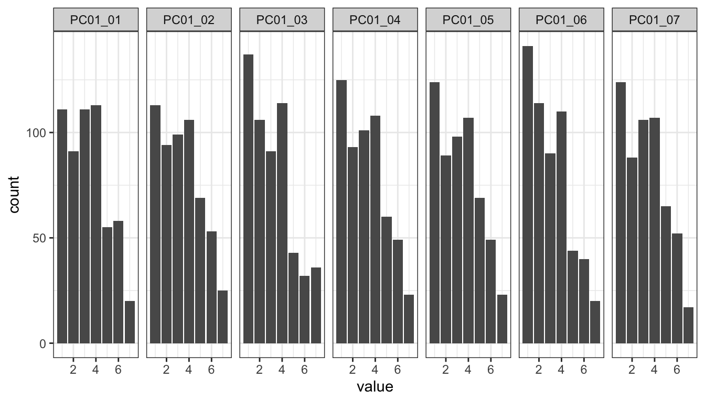
des_pricon <- select(d, starts_with("PC01")) %>% apply(1, mean, na.rm = TRUE) %>% as.data.frame() %>% summarise(m = mean(.,
na.rm = TRUE), sd = sd(., na.rm = TRUE))name <- "pricon"
model <- "
pri_con =~ PC01_01 + PC01_02 + PC01_03 + PC01_04 + PC01_05 + PC01_06 + PC01_07
"
fit <- lavaan::sem(model = model, data = d, estimator = "MLR", missing = "ML")Model fit:
(factor_val <- fit_tab(fit, reliability = TRUE, scaled = TRUE)) chisq df pvalue cfi tli rmsea srmr omega alpha ave
1 16.1 14 0.307 0.999 0.998 0.0164 0.0104 0.947 0.944 0.724assign(paste0(name, "_factor_val"), factor_val)Factor loadings:
inspect(fit, what = "std")$lambda pri_cn
PC01_01 0.931
PC01_02 0.901
PC01_03 0.547
PC01_04 0.890
PC01_05 0.908
PC01_06 0.795
PC01_07 0.928Shows that PC01_03 doesn’t load well. As it’s an inverted item that’s not surprising. Also from a theoretic perspective it’s suboptimal, because it doesn’t explicitly focus on privacy, but just concerns in general. Will be deleted.
model <- "
pri_con =~ PC01_01 + PC01_02 + PC01_04 + PC01_05 + PC01_06 + PC01_07
"
fit <- lavaan::sem(model = model, data = d, estimator = "MLR", missing = "ML")Model fit:
(factor_val <- fit_tab(fit, reliability = TRUE, scaled = TRUE)) chisq df pvalue cfi tli rmsea srmr omega alpha ave
1 11 9 0.273 0.998 0.997 0.0201 0.00963 0.96 0.959 0.799assign(paste0(name, "_factor_val"), factor_val)Factor loadings:
inspect(fit, what = "std")$lambda pri_cn
PC01_01 0.931
PC01_02 0.901
PC01_04 0.891
PC01_05 0.909
PC01_06 0.796
PC01_07 0.926Updated version shows good fit.
Using the participation platform …
ggplot(gather(select(d, starts_with("GR02"))), mapping = aes(x = value)) + geom_bar() + facet_wrap(~key, nrow = 1) + theme_bw()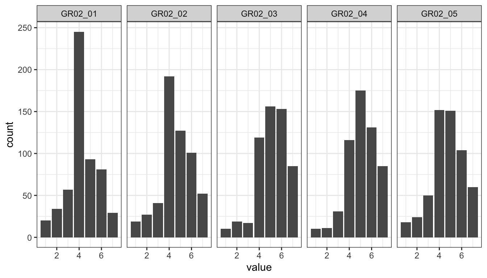
des_grats_gen <- select(d, starts_with("GR02")) %>% apply(1, mean, na.rm = TRUE) %>% as.data.frame() %>% summarise(m = mean(.,
na.rm = TRUE), sd = sd(., na.rm = TRUE))name <- "grats_general"
model <- "
grats_gen =~ GR02_01 + GR02_02 + GR02_03 + GR02_04 + GR02_05
"
fit <- lavaan::sem(model = model, data = d, estimator = "MLR", missing = "ML")Model fit:
(factor_val <- fit_tab(fit, reliability = TRUE, scaled = TRUE)) chisq df pvalue cfi tli rmsea srmr omega alpha ave
1 34 5 2.35e-06 0.976 0.951 0.102 0.0193 0.934 0.934 0.741assign(paste0(name, "_factor_val"), factor_val)Factor loadings:
inspect(fit, what = "std")$lambda grts_g
GR02_01 0.853
GR02_02 0.908
GR02_03 0.851
GR02_04 0.837
GR02_05 0.848Using the participation platform it has been possible for me …
Information
Relevance
Political participation
Idealism
Extrinsic benefits
ggplot(gather(select(d, starts_with("GR01"))), mapping = aes(x = value)) + geom_bar() + facet_wrap(~key, nrow = 2) + theme_bw()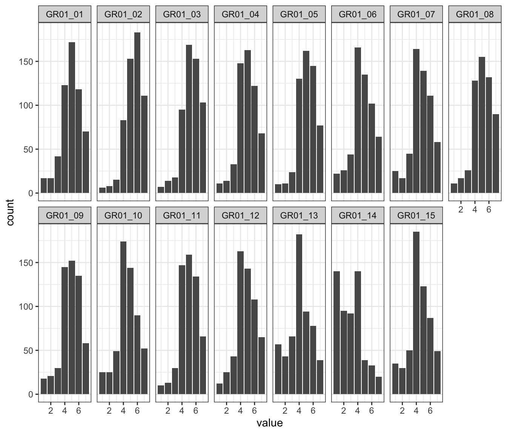
des_grats_spec <- select(d, starts_with("GR01")) %>% apply(1, mean, na.rm = TRUE) %>% as.data.frame() %>% summarise(m = mean(.,
na.rm = TRUE), sd = sd(., na.rm = TRUE))name <- "grats_specific"
model <- "
grats_inf =~ GR01_01 + GR01_02 + GR01_03
grats_rel =~ GR01_04 + GR01_05 + GR01_06
grats_par =~ GR01_07 + GR01_08 + GR01_09
grats_ide =~ GR01_10 + GR01_11 + GR01_12
grats_ext =~ GR01_13 + GR01_14 + GR01_15
grats_spec =~ grats_inf + grats_rel + grats_par + grats_ide + grats_ext
"
fit <- lavaan::sem(model = model, data = d, estimator = "MLR", missing = "ML")Model fit:
(factor_val <- fit_tab(fit, reliability = TRUE, scaled = TRUE)) chisq df pvalue cfi tli rmsea srmr omega alpha ave
1 270 85 0 0.941 0.928 0.0624 0.0527 0.946 0.933 0.586assign(paste0(name, "_factor_val"), factor_val)Factor loadings:
inspect(fit, what = "std")$lambda grts_n grts_r grts_p grts_d grts_x grts_s
GR01_01 0.688 0.000 0.000 0.000 0.000 0
GR01_02 0.819 0.000 0.000 0.000 0.000 0
GR01_03 0.851 0.000 0.000 0.000 0.000 0
GR01_04 0.000 0.891 0.000 0.000 0.000 0
GR01_05 0.000 0.852 0.000 0.000 0.000 0
GR01_06 0.000 0.704 0.000 0.000 0.000 0
GR01_07 0.000 0.000 0.826 0.000 0.000 0
GR01_08 0.000 0.000 0.811 0.000 0.000 0
GR01_09 0.000 0.000 0.816 0.000 0.000 0
GR01_10 0.000 0.000 0.000 0.796 0.000 0
GR01_11 0.000 0.000 0.000 0.882 0.000 0
GR01_12 0.000 0.000 0.000 0.762 0.000 0
GR01_13 0.000 0.000 0.000 0.000 0.519 0
GR01_14 0.000 0.000 0.000 0.000 0.513 0
GR01_15 0.000 0.000 0.000 0.000 0.848 0Using the participation platform …
ggplot(gather(select(d, starts_with("PD01"))), mapping = aes(x = value)) + geom_bar() + facet_wrap(~key, nrow = 1) + theme_bw()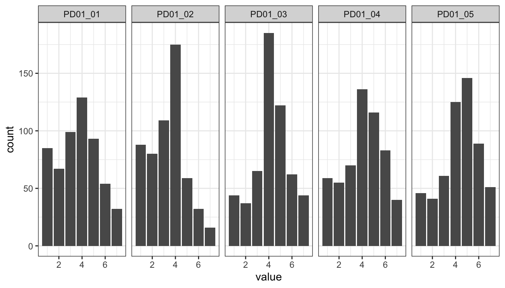
des_pridel <- select(d, starts_with("PD01")) %>% apply(1, mean, na.rm = TRUE) %>% as.data.frame() %>% summarise(m = mean(.,
na.rm = TRUE), sd = sd(., na.rm = TRUE))name <- "pridel"
model <- "
pri_delib =~ PD01_01 + PD01_02 + PD01_03 + PD01_04 + PD01_05
"
fit <- lavaan::sem(model = model, data = d, estimator = "MLR", missing = "ML")Model fit:
(factor_val <- fit_tab(fit, reliability = TRUE, scaled = TRUE)) chisq df pvalue cfi tli rmsea srmr omega alpha ave
1 15.6 5 0.00825 0.98 0.96 0.0614 0.0235 0.848 0.843 0.532assign(paste0(name, "_factor_val"), factor_val)Factor loadings:
inspect(fit, what = "std")$lambda pr_dlb
PD01_01 0.849
PD01_02 0.653
PD01_03 0.691
PD01_04 0.752
PD01_05 0.656 1. The other users seemed trustworthy.
5. The operators of the participation platform seemed trustworthy.
9. The website seemed trustworthy.
ggplot(gather(select(d, TR01_01, TR01_05, TR01_09)), mapping = aes(x = value)) + geom_bar() + facet_wrap(~key, nrow = 1) +
theme_bw()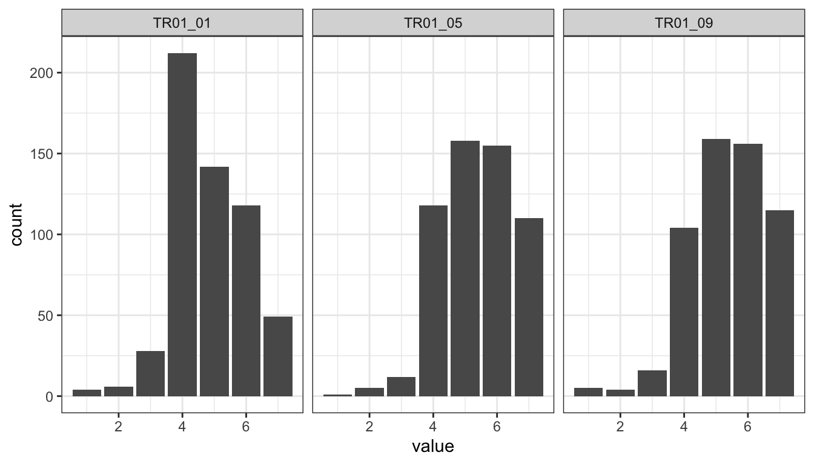
des_trust_gen <- select(d, TR01_01, TR01_05, TR01_09) %>% apply(1, mean, na.rm = TRUE) %>% as.data.frame() %>% summarise(m = mean(.,
na.rm = TRUE), sd = sd(., na.rm = TRUE))name <- "trust_gen"
model <- "
trust =~ TR01_01 + a*TR01_05 + a*TR01_09
"
fit <- lavaan::sem(model = model, data = d, estimator = "MLR", missing = "ML")Model fit:
(factor_val <- fit_tab(fit, reliability = TRUE, scaled = TRUE)) chisq df pvalue cfi tli rmsea srmr omega alpha ave
1 2.07 1 0.15 0.998 0.993 0.0438 0.0125 0.873 0.864 0.701assign(paste0(name, "_factor_val"), factor_val)Factor loadings:
inspect(fit, what = "std")$lambda trust
TR01_01 0.660
TR01_05 0.923
TR01_09 0.898Note that we constrained Items 5 and Item 9 to be equal. Explanation: First, they are theoretically related. Second, not constraining would yield to just-identified model, for which model fit cannot be interpreted meaningfully.
Community
Provider
Information System
ggplot(gather(select(d, TR01_02:TR01_04, TR01_06:TR01_08, TR01_10:TR01_12)), mapping = aes(x = value)) + geom_bar() + facet_wrap(~key,
nrow = 1) + theme_bw()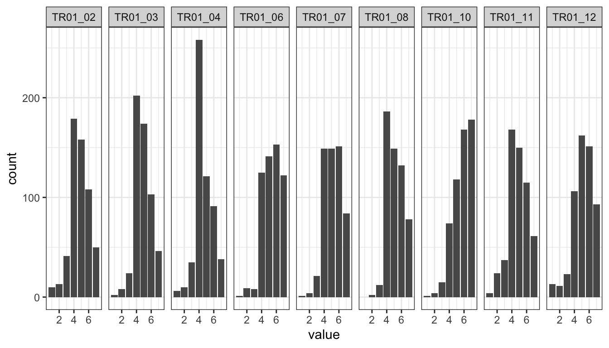
des_trust_spec <- select(d, TR01_02:TR01_04, TR01_06:TR01_08, TR01_10:TR01_12) %>% apply(1, mean, na.rm = TRUE) %>% as.data.frame() %>%
summarise(m = mean(., na.rm = TRUE), sd = sd(., na.rm = TRUE))name <- "trust_spec"
model <- "
trust_community =~ TR01_02 + TR01_03 + TR01_04
trust_provider =~ TR01_06 + TR01_07 + TR01_08
trust_system =~ TR01_10 + TR01_11 + TR01_12
trust =~ trust_community + trust_provider + trust_system
"
fit <- lavaan::sem(model = model, data = d, estimator = "MLR", missing = "ML")Model fit:
(factor_val <- fit_tab(fit, reliability = TRUE, scaled = TRUE)) chisq df pvalue cfi tli rmsea srmr omega alpha ave
1 89.1 24 2.02e-09 0.963 0.944 0.0697 0.0351 0.93 0.921 0.613assign(paste0(name, "_factor_val"), factor_val)Factor loadings:
inspect(fit, what = "std")$lambda trst_c trst_p trst_s trust
TR01_02 0.814 0.000 0.000 0
TR01_03 0.765 0.000 0.000 0
TR01_04 0.822 0.000 0.000 0
TR01_06 0.000 0.884 0.000 0
TR01_07 0.000 0.779 0.000 0
TR01_08 0.000 0.793 0.000 0
TR01_10 0.000 0.000 0.690 0
TR01_11 0.000 0.000 0.662 0
TR01_12 0.000 0.000 0.817 0Because there was Heywoodcase, we now also run a model in which the subdimensions provider and system are combined.
name <- "trust_spec"
model <- "
trust_community =~ TR01_02 + TR01_03 + TR01_04
trust_provider =~ TR01_06 + TR01_07 + TR01_08 + TR01_10 + TR01_11 + TR01_12
trust =~ b*trust_community + b*trust_provider
"
fit <- lavaan::sem(model = model, data = d, estimator = "MLR", missing = "ML")Model fit:
(factor_val <- fit_tab(fit, reliability = TRUE, scaled = TRUE)) chisq df pvalue cfi tli rmsea srmr omega alpha ave
1 99.5 26 1.57e-10 0.958 0.942 0.0711 0.0369 0.931 0.921 0.62assign(paste0(name, "_factor_val"), factor_val)Factor loadings:
inspect(fit, what = "std")$lambda trst_c trst_p trust
TR01_02 0.808 0.000 0
TR01_03 0.773 0.000 0
TR01_04 0.821 0.000 0
TR01_06 0.000 0.877 0
TR01_07 0.000 0.777 0
TR01_08 0.000 0.797 0
TR01_10 0.000 0.705 0
TR01_11 0.000 0.667 0
TR01_12 0.000 0.840 0Warning disappears, results show adequate fit.
ggplot(gather(select(d, starts_with("SE01"))), mapping = aes(x = value)) + geom_bar() + facet_wrap(~key, nrow = 1) + theme_bw()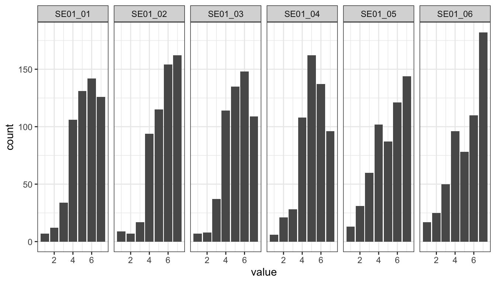
des_selfeff <- select(d, starts_with("SE01")) %>% apply(1, mean, na.rm = TRUE) %>% as.data.frame() %>% summarise(m = mean(.,
na.rm = TRUE), sd = sd(., na.rm = TRUE))name <- "self-eff"
model <- "
self_eff =~ SE01_01 + SE01_02 + SE01_03 + SE01_04 + SE01_05 + SE01_06
"
fit <- lavaan::sem(model = model, data = d, estimator = "MLR", missing = "ML")Model fit:
(factor_val <- fit_tab(fit, reliability = TRUE, scaled = TRUE)) chisq df pvalue cfi tli rmsea srmr omega alpha ave
1 96.1 9 1.11e-16 0.86 0.766 0.132 0.0671 0.851 0.854 0.49assign(paste0(name, "_factor_val"), factor_val)Factor loadings:
inspect(fit, what = "std")$lambda slf_ff
SE01_01 0.842
SE01_02 0.689
SE01_03 0.764
SE01_04 0.801
SE01_05 0.528
SE01_06 0.633Shows significant misfit. We will delete inverted items, while allowing covariations between Items 1 and 2 (tech-oriented) and Items 3 and 4 (topic-oriented).
name <- "selfeff"
model <- "
self_eff_pos =~ SE01_01 + SE01_02 + SE01_03 + SE01_04
SE01_01 ~~ x*SE01_02
SE01_03 ~~ x*SE01_04
"
fit <- lavaan::sem(model = model, data = d, estimator = "MLR", missing = "ML")Model fit:
(factor_val <- fit_tab(fit, reliability = TRUE, scaled = TRUE)) chisq df pvalue cfi tli rmsea srmr omega alpha ave
1 3.23 1 0.0721 0.993 0.957 0.0633 0.0136 0.833 0.862 0.592assign(paste0(name, "_factor_val"), factor_val)Factor loadings:
inspect(fit, what = "std")$lambda slf_f_
SE01_01 0.828
SE01_02 0.675
SE01_03 0.779
SE01_04 0.787Adapted version shows better and adequate fit.
ggplot(gather(select(d, COMM)), mapping = aes(x = value)) + geom_density() + facet_wrap(~key, nrow = 1) + theme_bw()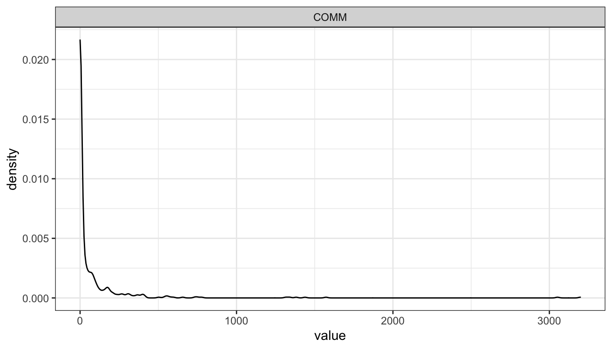
We see that Communication is severely skewed. Will hence be log-scaled for SEMs.
ggplot(gather(select(d, COMM_log)), mapping = aes(x = value)) + geom_density() + facet_wrap(~key, nrow = 1) + theme_bw()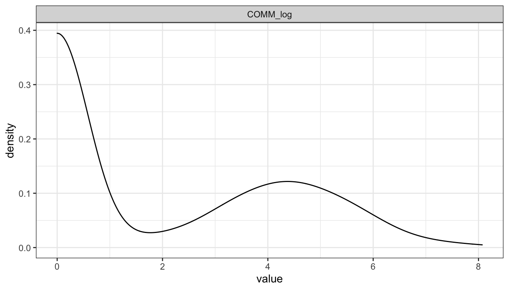
In what follows, please find the results of all variables combined in one model. This model will be used to extract factor scores.
model_baseline <- "
pri_con =~ PC01_01 + PC01_02 + PC01_04 + PC01_05 + PC01_06 + PC01_07
grats_gen =~ GR02_01 + GR02_02 + GR02_03 + GR02_04 + GR02_05
grats_inf =~ GR01_01 + GR01_02 + GR01_03
grats_rel =~ GR01_04 + GR01_05 + GR01_06
grats_par =~ GR01_07 + GR01_08 + GR01_09
grats_ide =~ GR01_10 + GR01_11 + GR01_12
grats_ext =~ GR01_13 + GR01_14 + GR01_15
grats_spec =~ grats_inf + grats_rel + grats_par + grats_ide + grats_ext
pri_delib =~ PD01_01 + PD01_02 + PD01_03 + PD01_04 + PD01_05
trust_gen =~ TR01_01 + TR01_05 + TR01_09
trust_community =~ TR01_02 + TR01_03 + TR01_04
trust_provider =~ TR01_06 + TR01_07 + TR01_08 + TR01_10 + TR01_11 + TR01_12
trust_spec =~ trust_community + trust_provider
self_eff =~ SE01_01 + SE01_02 + SE01_03 + SE01_04
SE01_01 ~~ x*SE01_02
SE01_03 ~~ x*SE01_04
comm_log =~ COMM_log
comm_log ~~ a1*pri_con + b1*grats_gen + c1*pri_delib + d1*self_eff + e1*trust_spec + f1*trust_gen + g1*grats_spec
"
fit_baseline <- lavaan::sem(model_baseline, data = d, missing = "ML")
summary(fit_baseline, standardized = TRUE, fit.measures = TRUE)lavaan 0.6-8 ended normally after 179 iterations
Estimator ML
Optimization method NLMINB
Number of model parameters 180
Number of equality constraints 1
Number of observations 559
Number of missing patterns 3
Model Test User Model:
Test statistic 3218.628
Degrees of freedom 1045
P-value (Chi-square) 0.000
Model Test Baseline Model:
Test statistic 22544.020
Degrees of freedom 1128
P-value 0.000
User Model versus Baseline Model:
Comparative Fit Index (CFI) 0.899
Tucker-Lewis Index (TLI) 0.890
Loglikelihood and Information Criteria:
Loglikelihood user model (H0) -37703.096
Loglikelihood unrestricted model (H1) -36093.783
Akaike (AIC) 75764.193
Bayesian (BIC) 76538.574
Sample-size adjusted Bayesian (BIC) 75970.341
Root Mean Square Error of Approximation:
RMSEA 0.061
90 Percent confidence interval - lower 0.059
90 Percent confidence interval - upper 0.063
P-value RMSEA <= 0.05 0.000
Standardized Root Mean Square Residual:
SRMR 0.065
Parameter Estimates:
Standard errors Standard
Information Observed
Observed information based on Hessian
Latent Variables:
Estimate Std.Err z-value P(>|z|) Std.lv Std.all
pri_con =~
PC01_01 1.000 1.602 0.929
PC01_02 0.994 0.027 36.765 0.000 1.592 0.901
PC01_04 0.977 0.027 35.599 0.000 1.565 0.892
PC01_05 1.002 0.026 38.005 0.000 1.605 0.910
PC01_06 0.855 0.032 26.996 0.000 1.369 0.798
PC01_07 0.996 0.025 40.258 0.000 1.595 0.925
grats_gen =~
GR02_01 1.000 1.130 0.842
GR02_02 1.119 0.040 28.018 0.000 1.265 0.893
GR02_03 1.029 0.040 25.981 0.000 1.163 0.869
GR02_04 0.989 0.039 25.057 0.000 1.117 0.850
GR02_05 1.071 0.042 25.331 0.000 1.211 0.845
grats_inf =~
GR01_01 1.000 0.978 0.696
GR01_02 1.017 0.062 16.518 0.000 0.996 0.816
GR01_03 1.113 0.066 16.802 0.000 1.089 0.847
grats_rel =~
GR01_04 1.000 1.175 0.891
GR01_05 0.943 0.034 27.537 0.000 1.108 0.857
GR01_06 0.878 0.046 19.093 0.000 1.032 0.698
grats_par =~
GR01_07 1.000 1.192 0.819
GR01_08 0.938 0.042 22.085 0.000 1.119 0.816
GR01_09 0.961 0.043 22.317 0.000 1.146 0.819
grats_ide =~
GR01_10 1.000 1.149 0.791
GR01_11 0.999 0.043 23.253 0.000 1.148 0.884
GR01_12 0.927 0.048 19.459 0.000 1.065 0.764
grats_ext =~
GR01_13 1.000 0.851 0.519
GR01_14 1.003 0.108 9.321 0.000 0.853 0.510
GR01_15 1.526 0.144 10.609 0.000 1.298 0.850
grats_spec =~
grats_inf 1.000 0.843 0.843
grats_rel 1.314 0.089 14.744 0.000 0.922 0.922
grats_par 1.379 0.097 14.187 0.000 0.954 0.954
grats_ide 1.306 0.095 13.803 0.000 0.938 0.938
grats_ext 0.806 0.088 9.173 0.000 0.781 0.781
pri_delib =~
PD01_01 1.000 1.493 0.866
PD01_02 0.676 0.041 16.551 0.000 1.010 0.658
PD01_03 0.704 0.043 16.326 0.000 1.052 0.676
PD01_04 0.848 0.044 19.138 0.000 1.267 0.743
PD01_05 0.718 0.045 15.897 0.000 1.072 0.648
trust_gen =~
TR01_01 1.000 0.824 0.715
TR01_05 1.236 0.063 19.681 0.000 1.019 0.886
TR01_09 1.331 0.066 20.020 0.000 1.097 0.908
trust_community =~
TR01_02 1.000 1.020 0.805
TR01_03 0.828 0.044 18.964 0.000 0.844 0.768
TR01_04 0.938 0.045 21.037 0.000 0.957 0.830
trust_provider =~
TR01_06 1.000 1.036 0.863
TR01_07 0.861 0.038 22.577 0.000 0.892 0.770
TR01_08 0.862 0.036 24.083 0.000 0.893 0.806
TR01_10 0.802 0.040 19.829 0.000 0.831 0.706
TR01_11 0.826 0.046 17.809 0.000 0.856 0.660
TR01_12 1.105 0.041 26.805 0.000 1.145 0.852
trust_spec =~
trust_communty 1.000 0.855 0.855
trust_provider 1.157 0.062 18.791 0.000 0.974 0.974
self_eff =~
SE01_01 1.000 1.135 0.822
SE01_02 0.808 0.046 17.407 0.000 0.918 0.680
SE01_03 0.923 0.048 19.105 0.000 1.048 0.781
SE01_04 0.940 0.047 19.950 0.000 1.067 0.791
comm_log =~
COMM_log 1.000 2.311 1.000
Covariances:
Estimate Std.Err z-value P(>|z|) Std.lv Std.all
.SE01_01 ~~
.SE01_02 (x) 0.115 0.029 3.999 0.000 0.115 0.148
.SE01_03 ~~
.SE01_04 (x) 0.115 0.029 3.999 0.000 0.115 0.167
pri_con ~~
comm_log (a1) -0.559 0.161 -3.460 0.001 -0.151 -0.151
grats_gen ~~
comm_log (b1) 0.298 0.115 2.588 0.010 0.114 0.114
pri_delib ~~
comm_log (c1) -0.653 0.160 -4.090 0.000 -0.189 -0.189
self_eff ~~
comm_log (d1) 1.016 0.132 7.711 0.000 0.387 0.387
trust_spec ~~
comm_log (e1) 0.346 0.093 3.737 0.000 0.172 0.172
trust_gen ~~
comm_log (f1) 0.326 0.087 3.753 0.000 0.171 0.171
grats_spec ~~
comm_log (g1) 0.426 0.089 4.770 0.000 0.224 0.224
pri_con ~~
grats_gen -0.284 0.082 -3.460 0.001 -0.157 -0.157
grats_spc -0.109 0.060 -1.823 0.068 -0.083 -0.083
pri_delib 1.356 0.131 10.331 0.000 0.567 0.567
trust_gen -0.555 0.069 -8.090 0.000 -0.420 -0.420
trust_spc -0.410 0.068 -6.006 0.000 -0.294 -0.294
self_eff -0.384 0.088 -4.351 0.000 -0.211 -0.211
grats_gen ~~
grats_spc 0.734 0.071 10.355 0.000 0.787 0.787
pri_delib -0.073 0.080 -0.912 0.362 -0.043 -0.043
trust_gen 0.570 0.057 9.966 0.000 0.612 0.612
trust_spc 0.761 0.068 11.193 0.000 0.772 0.772
self_eff 0.464 0.066 6.997 0.000 0.362 0.362
grats_spec ~~
pri_delib 0.011 0.059 0.192 0.847 0.009 0.009
trust_gen 0.448 0.050 9.021 0.000 0.659 0.659
trust_spc 0.570 0.059 9.631 0.000 0.793 0.793
self_eff 0.496 0.059 8.427 0.000 0.530 0.530
pri_delib ~~
trust_gen -0.312 0.063 -4.952 0.000 -0.253 -0.253
trust_spc -0.132 0.064 -2.055 0.040 -0.101 -0.101
self_eff -0.335 0.087 -3.865 0.000 -0.197 -0.197
trust_gen ~~
trust_spc 0.686 0.062 11.135 0.000 0.955 0.955
self_eff 0.493 0.056 8.859 0.000 0.527 0.527
trust_spec ~~
self_eff 0.538 0.059 9.058 0.000 0.544 0.544
Intercepts:
Estimate Std.Err z-value P(>|z|) Std.lv Std.all
.PC01_01 3.293 0.073 45.160 0.000 3.293 1.910
.PC01_02 3.327 0.075 44.525 0.000 3.327 1.883
.PC01_04 3.222 0.074 43.395 0.000 3.222 1.835
.PC01_05 3.263 0.075 43.748 0.000 3.263 1.850
.PC01_06 3.004 0.073 41.410 0.000 3.004 1.751
.PC01_07 3.224 0.073 44.188 0.000 3.224 1.869
.GR02_01 4.281 0.057 75.413 0.000 4.281 3.190
.GR02_02 4.596 0.060 76.742 0.000 4.596 3.246
.GR02_03 5.131 0.057 90.627 0.000 5.131 3.833
.GR02_04 5.089 0.056 91.559 0.000 5.089 3.873
.GR02_05 4.692 0.061 77.446 0.000 4.692 3.276
.GR01_01 4.878 0.059 82.009 0.000 4.878 3.469
.GR01_02 5.436 0.052 105.390 0.000 5.436 4.458
.GR01_03 5.283 0.054 97.076 0.000 5.283 4.106
.GR01_04 4.925 0.056 88.264 0.000 4.925 3.733
.GR01_05 5.086 0.055 93.032 0.000 5.086 3.935
.GR01_06 4.660 0.063 74.538 0.000 4.660 3.153
.GR01_07 4.682 0.062 76.077 0.000 4.682 3.218
.GR01_08 5.066 0.058 87.374 0.000 5.066 3.696
.GR01_09 4.841 0.059 81.781 0.000 4.841 3.459
.GR01_10 4.547 0.061 74.048 0.000 4.547 3.132
.GR01_11 4.964 0.055 90.449 0.000 4.964 3.826
.GR01_12 4.760 0.059 80.678 0.000 4.760 3.412
.GR01_13 4.079 0.069 58.780 0.000 4.079 2.486
.GR01_14 3.039 0.071 42.918 0.000 3.039 1.815
.GR01_15 4.410 0.065 68.283 0.000 4.410 2.888
.PD01_01 3.658 0.073 50.136 0.000 3.658 2.121
.PD01_02 3.352 0.065 51.628 0.000 3.352 2.184
.PD01_03 4.191 0.066 63.662 0.000 4.191 2.693
.PD01_04 4.081 0.072 56.578 0.000 4.081 2.393
.PD01_05 4.351 0.070 62.149 0.000 4.351 2.629
.TR01_01 4.846 0.049 99.398 0.000 4.846 4.204
.TR01_05 5.383 0.049 110.607 0.000 5.383 4.678
.TR01_09 5.390 0.051 105.542 0.000 5.390 4.464
.TR01_02 4.764 0.054 88.923 0.000 4.764 3.761
.TR01_03 4.844 0.046 104.195 0.000 4.844 4.407
.TR01_04 4.615 0.049 94.568 0.000 4.615 4.000
.TR01_06 5.403 0.051 106.478 0.000 5.403 4.504
.TR01_07 5.200 0.049 106.180 0.000 5.200 4.491
.TR01_08 5.129 0.047 109.404 0.000 5.129 4.627
.TR01_10 5.725 0.050 114.939 0.000 5.725 4.864
.TR01_11 4.834 0.055 88.152 0.000 4.834 3.728
.TR01_12 5.179 0.057 91.088 0.000 5.179 3.853
.SE01_01 5.277 0.058 90.261 0.000 5.277 3.820
.SE01_02 5.523 0.057 96.672 0.000 5.523 4.092
.SE01_03 5.224 0.057 92.031 0.000 5.224 3.895
.SE01_04 5.138 0.057 89.909 0.000 5.138 3.805
.COMM_log 1.834 0.098 18.765 0.000 1.834 0.794
pri_con 0.000 0.000 0.000
grats_gen 0.000 0.000 0.000
.grats_inf 0.000 0.000 0.000
.grats_rel 0.000 0.000 0.000
.grats_par 0.000 0.000 0.000
.grats_ide 0.000 0.000 0.000
.grats_ext 0.000 0.000 0.000
grats_spec 0.000 0.000 0.000
pri_delib 0.000 0.000 0.000
trust_gen 0.000 0.000 0.000
.trust_communty 0.000 0.000 0.000
.trust_provider 0.000 0.000 0.000
trust_spec 0.000 0.000 0.000
self_eff 0.000 0.000 0.000
comm_log 0.000 0.000 0.000
Variances:
Estimate Std.Err z-value P(>|z|) Std.lv Std.all
.PC01_01 0.406 0.032 12.789 0.000 0.406 0.137
.PC01_02 0.587 0.042 14.012 0.000 0.587 0.188
.PC01_04 0.631 0.044 14.286 0.000 0.631 0.205
.PC01_05 0.534 0.039 13.742 0.000 0.534 0.172
.PC01_06 1.066 0.068 15.606 0.000 1.066 0.362
.PC01_07 0.430 0.033 13.038 0.000 0.430 0.145
.GR02_01 0.524 0.038 13.966 0.000 0.524 0.291
.GR02_02 0.405 0.033 12.350 0.000 0.405 0.202
.GR02_03 0.438 0.033 13.195 0.000 0.438 0.245
.GR02_04 0.479 0.035 13.834 0.000 0.479 0.278
.GR02_05 0.587 0.042 14.024 0.000 0.587 0.286
.GR01_01 1.021 0.072 14.108 0.000 1.021 0.516
.GR01_02 0.496 0.042 11.731 0.000 0.496 0.334
.GR01_03 0.469 0.045 10.367 0.000 0.469 0.283
.GR01_04 0.360 0.034 10.462 0.000 0.360 0.207
.GR01_05 0.443 0.036 12.232 0.000 0.443 0.265
.GR01_06 1.120 0.074 15.176 0.000 1.120 0.513
.GR01_07 0.695 0.052 13.414 0.000 0.695 0.328
.GR01_08 0.628 0.047 13.435 0.000 0.628 0.334
.GR01_09 0.646 0.049 13.308 0.000 0.646 0.330
.GR01_10 0.788 0.056 14.001 0.000 0.788 0.374
.GR01_11 0.367 0.034 10.633 0.000 0.367 0.218
.GR01_12 0.811 0.056 14.455 0.000 0.811 0.417
.GR01_13 1.967 0.131 14.977 0.000 1.967 0.731
.GR01_14 2.075 0.138 15.090 0.000 2.075 0.740
.GR01_15 0.645 0.097 6.657 0.000 0.645 0.277
.PD01_01 0.746 0.082 9.141 0.000 0.746 0.251
.PD01_02 1.337 0.090 14.865 0.000 1.337 0.567
.PD01_03 1.316 0.092 14.321 0.000 1.316 0.543
.PD01_04 1.303 0.096 13.631 0.000 1.303 0.448
.PD01_05 1.590 0.107 14.855 0.000 1.590 0.580
.TR01_01 0.649 0.044 14.903 0.000 0.649 0.489
.TR01_05 0.285 0.024 11.823 0.000 0.285 0.216
.TR01_09 0.255 0.025 10.301 0.000 0.255 0.175
.TR01_02 0.564 0.045 12.521 0.000 0.564 0.352
.TR01_03 0.496 0.037 13.456 0.000 0.496 0.410
.TR01_04 0.415 0.036 11.551 0.000 0.415 0.312
.TR01_06 0.366 0.027 13.475 0.000 0.366 0.255
.TR01_07 0.546 0.036 15.269 0.000 0.546 0.407
.TR01_08 0.431 0.029 14.853 0.000 0.431 0.351
.TR01_10 0.695 0.044 15.686 0.000 0.695 0.502
.TR01_11 0.949 0.059 15.971 0.000 0.949 0.564
.TR01_12 0.496 0.035 14.031 0.000 0.496 0.275
.SE01_01 0.620 0.053 11.711 0.000 0.620 0.325
.SE01_02 0.980 0.067 14.736 0.000 0.980 0.538
.SE01_03 0.701 0.056 12.593 0.000 0.701 0.390
.SE01_04 0.684 0.054 12.759 0.000 0.684 0.375
.COMM_log 0.000 0.000 0.000
pri_con 2.567 0.177 14.474 0.000 1.000 1.000
grats_gen 1.277 0.105 12.147 0.000 1.000 1.000
.grats_inf 0.277 0.038 7.348 0.000 0.290 0.290
.grats_rel 0.207 0.033 6.236 0.000 0.150 0.150
.grats_par 0.129 0.031 4.099 0.000 0.091 0.091
.grats_ide 0.159 0.031 5.125 0.000 0.121 0.121
.grats_ext 0.282 0.054 5.181 0.000 0.389 0.389
grats_spec 0.680 0.092 7.416 0.000 1.000 1.000
pri_delib 2.230 0.185 12.030 0.000 1.000 1.000
trust_gen 0.679 0.072 9.424 0.000 1.000 1.000
.trust_communty 0.281 0.036 7.845 0.000 0.270 0.270
.trust_provider 0.056 0.022 2.593 0.010 0.052 0.052
trust_spec 0.760 0.082 9.226 0.000 1.000 1.000
self_eff 1.289 0.116 11.141 0.000 1.000 1.000
comm_log 5.341 0.319 16.718 0.000 1.000 1.000We first report the factor validity of all variables combined.
# extract model predicted values for items & calc means
d_fs <- lavPredict(fit_baseline, type = "ov") %>% as.data.frame() %>% mutate(version = d$version, grats_gen_fs = rowMeans(select(.,
starts_with("GR02"))), grats_spec_fs = rowMeans(select(., starts_with("GR01"))), pri_con_fs = rowMeans(select(., starts_with("PC01"))),
trust_gen_fs = rowMeans(select(., TR01_01, TR01_05, TR01_09)), trust_spec_fs = rowMeans(select(., TR01_02:TR01_04, TR01_06:TR01_12)),
pri_del_fs = rowMeans(select(., starts_with("PD01"))), self_eff_fs = rowMeans(select(., starts_with("SE01")))) %>% select(version,
pri_con_fs, grats_gen_fs, grats_spec_fs, pri_del_fs, self_eff_fs, trust_gen_fs, trust_spec_fs, COMM_log)
# combine d with d factor scores
d %<>% cbind(select(d_fs, -version, -COMM_log))
# add centered predictors for interaction analyses later
d %<>% mutate(pri_con_fs_c = scale(pri_con_fs, scale = FALSE), grats_spec_fs_c = scale(grats_spec_fs, scale = FALSE), pri_del_fs_c = scale(pri_del_fs,
scale = FALSE), trust_gen_fs_c = scale(trust_gen_fs, scale = FALSE), self_eff_fs_c = scale(self_eff_fs, scale = FALSE),
con_x_del = pri_con_fs_c * pri_del_fs_c, grats_x_del = grats_spec_fs_c * pri_del_fs_c)
# rename for plotting
d_fs %<>% set_names(c("version", var_names_breaks))
# means of model predicted values
des <- rbind(des_pricon, des_grats_gen, des_grats_spec, des_pridel, des_selfeff, des_trust_gen, des_trust_spec)
factor_val_tab <- rbind(pricon_factor_val, grats_general_factor_val, grats_specific_factor_val, pridel_factor_val, selfeff_factor_val,
trust_gen_factor_val, trust_spec_factor_val) %$% cbind(des[-c(8), ], .) %>% set_rownames(var_names[-c(8)])
factor_val_tab %>% kable() %>% kable_styling("striped") %>% scroll_box(width = "100%")| m | sd | chisq | df | pvalue | cfi | tli | rmsea | srmr | omega | alpha | ave | |
|---|---|---|---|---|---|---|---|---|---|---|---|---|
| Privacy concerns | 3.21 | 1.514 | 11.04 | 9 | 0.273 | 0.998 | 0.997 | 0.020 | 0.010 | 0.960 | 0.959 | 0.799 |
| General gratifications | 4.76 | 1.219 | 34.03 | 5 | 0.000 | 0.976 | 0.951 | 0.102 | 0.019 | 0.934 | 0.934 | 0.741 |
| Specific gratifications | 4.71 | 1.019 | 269.77 | 85 | 0.000 | 0.941 | 0.928 | 0.062 | 0.053 | 0.946 | 0.933 | 0.586 |
| Privacy deliberation | 3.93 | 1.285 | 15.55 | 5 | 0.008 | 0.980 | 0.960 | 0.061 | 0.024 | 0.848 | 0.843 | 0.532 |
| Self-efficacy | 5.25 | 1.118 | 3.23 | 1 | 0.072 | 0.993 | 0.957 | 0.063 | 0.014 | 0.833 | 0.862 | 0.592 |
| General trust | 5.21 | 1.039 | 2.07 | 1 | 0.150 | 0.998 | 0.993 | 0.044 | 0.012 | 0.873 | 0.864 | 0.701 |
| Specific trust | 5.08 | 0.942 | 99.48 | 26 | 0.000 | 0.958 | 0.942 | 0.071 | 0.037 | 0.931 | 0.921 | 0.620 |
In what follows, we report zero-order correlations, distributions, and scatterplots of the variables’ factor scores.
corr_plot <- ggpairs(select(d_fs, -version), upper = list(continuous = cor_plot), lower = list(continuous = wrap(td::scat_plot,
coords = c(1, 7, 0, 7)))) + theme_bw()
print(corr_plot)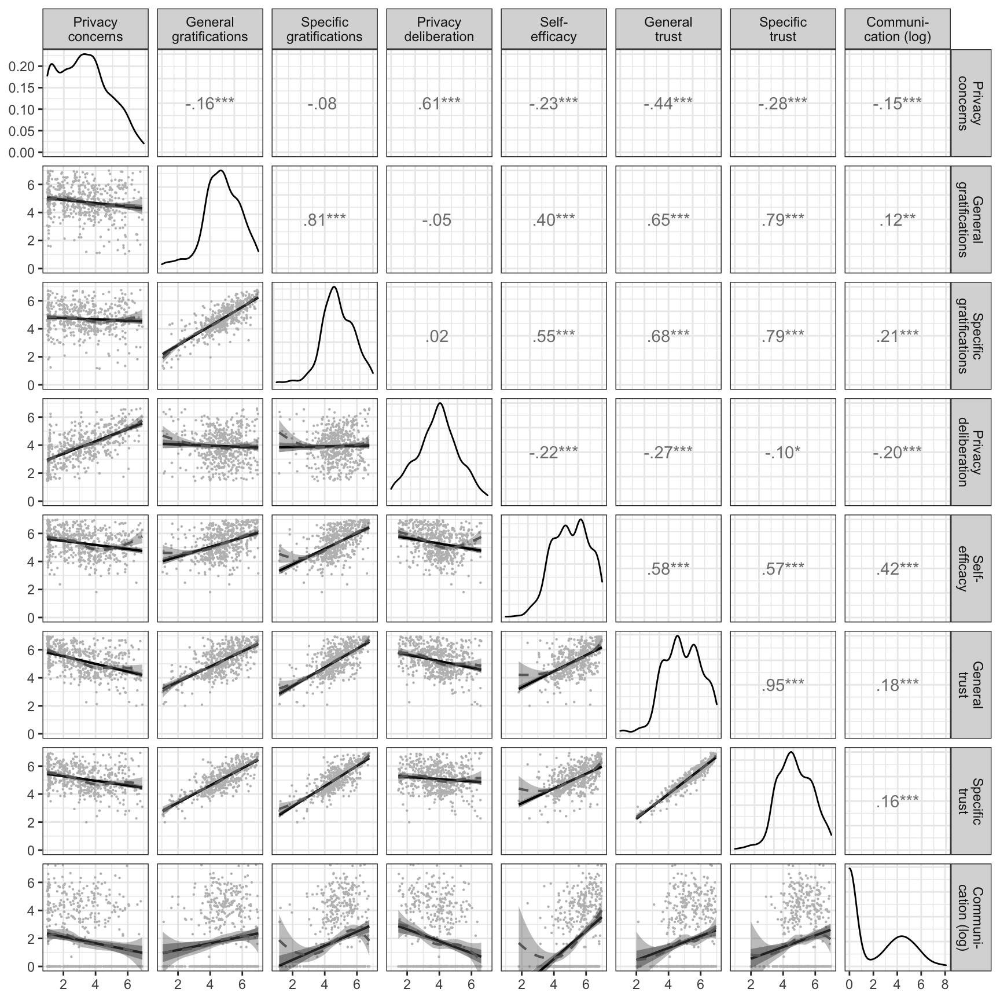
ggsave("figures/results/cor_plot.png")In what follows, we report power analyses for our study. Please note that we conduct a rudimentary power-analysis, assuming bivariate correlations. To explain, at the time we were not yet aware of the existence of power analyses for multivariate structural equation models.
We first estimate the sample size necessary to find small effects in 95% of all cases.
# estimate pwr-samplesize
n_desired <- pwr.r.test(r = r_sesoi, sig.level = alpha, power = power_desired, alternative = "greater") %T>% print %$% n %>%
round(0)
approximate correlation power calculation (arctangh transformation)
n = 1077
r = 0.1
sig.level = 0.05
power = 0.95
alternative = greaterWe then compute the power we have achieved with our finale sample size to detect small effects.
# compute pwr-achieved
power_achieved <- pwr.r.test(n = n_final, r = r_sesoi, sig.level = alpha, alternative = "greater") %T>% print %$% power %>%
round(2)
approximate correlation power calculation (arctangh transformation)
n = 559
r = 0.1
sig.level = 0.05
power = 0.765
alternative = greaterWe finally compute what effect size we are likely to find in 95% of all cases given our final sample size.
# estimate pwr-sensitivity
r_sensitive <- pwr.r.test(n = n_final, power = power_desired, sig.level = alpha, alternative = "greater") %T>% print %$%
r %>% round(2)
approximate correlation power calculation (arctangh transformation)
n = 559
r = 0.138
sig.level = 0.05
power = 0.95
alternative = greater# create subset of data with all items that were used
d_sub <- d[, c("COMM", "GR02_01", "GR02_02", "GR02_03", "GR02_04", "GR02_05", "PC01_01", "PC01_02", "PC01_04", "PC01_05",
"PC01_06", "PC01_07", "TR01_02", "TR01_03", "TR01_04", "TR01_06", "TR01_07", "TR01_08", "TR01_10", "TR01_11", "TR01_12",
"PD01_01", "PD01_02", "PD01_03", "PD01_04", "PD01_05", "SE01_01", "SE01_02", "SE01_03", "SE01_04", "male", "age", "edu")]
# test multivariate normal distribution
mvn_result <- mvn(d_sub, mvnTest = "mardia")
mvn_result$multivariateNormality Test Statistic p value Result
1 Mardia Skewness 23098.0657251329 0 NO
2 Mardia Kurtosis 102.62697121647 0 NO
3 MVN <NA> <NA> NOShows that multivariate normal distribution is violated. We hence use maximum likelihood estimation with robust standard errors and a Satorra-Bentler scaled test statistic.
[Note: These lines stopped working after some time, potentially due to changes in package.]
In what follows we test for influential cases in the baseline model, to detect potentially corrupt data (e.g., people who provided response patterns). Specifically, we compute Cook’s distance.
cooks_dis <- gCD(d, model_baseline)
plot(cooks_dis)The following ten cases have a particularly strong influence on the baseline model.
infl_cases <- invisible(rownames(print(cooks_dis)))Let’s inspect these cases.
infl_cases_tokens <- d[infl_cases, "case_token"] %>% as_vector()
d %>% filter(case_token %in% infl_cases_tokens) %>% select(case_token, GR01_01:SE01_06, topics_entered:reactions, -SO01_01,
TIME_SUM_t1, TIME_SUM_t2) %>% kable() %>% kable_styling("striped") %>% scroll_box(width = "100%")These data do not reveal potential cases of response patterns. Indeed, answer times suggest that respondents were diligent.
model <- "
pri_con =~ PC01_01 + PC01_02 + PC01_04 + PC01_05 + PC01_06 + PC01_07
grats_gen =~ GR02_01 + GR02_02 + GR02_03 + GR02_04 + GR02_05
pri_delib =~ PD01_01 + PD01_02 + PD01_03 + PD01_04 + PD01_05
self_eff =~ SE01_01 + SE01_02 + SE01_03 + SE01_04
SE01_01 ~~ x*SE01_02
SE01_03 ~~ x*SE01_04
trust_community =~ TR01_02 + TR01_03 + TR01_04
trust_provider =~ TR01_06 + TR01_07 + TR01_08 + TR01_10 + TR01_11 + TR01_12
trust_spec =~ trust_community + trust_provider
COMM_log ~ a1*pri_con + b1*grats_gen + c1*pri_delib + d1*self_eff + e1*trust_spec
# Covariates
COMM_log + GR02_01 + GR02_02 + GR02_03 + GR02_04 + GR02_05 + PC01_01 + PC01_02 + PC01_04 + PC01_05 + PC01_06 + PC01_07 + TR01_02 + TR01_03 + TR01_04 + TR01_06 + TR01_07 + TR01_08 + TR01_10 + TR01_11 + TR01_12 + PD01_01 + PD01_02 + PD01_03 + PD01_04 + PD01_05 + SE01_01 + SE01_02 + SE01_03 + SE01_04 ~ male + age + edu
# Covariances
male ~~ age + edu
age ~~ edu
"
fit_prereg <- lavaan::sem(model, data = d, estimator = "MLR", missing = "ML")
summary(fit_prereg, fit = TRUE, std = TRUE)lavaan 0.6-8 ended normally after 352 iterations
Estimator ML
Optimization method NLMINB
Number of model parameters 207
Number of equality constraints 1
Number of observations 559
Number of missing patterns 4
Model Test User Model:
Standard Robust
Test Statistic 1247.877 954.969
Degrees of freedom 388 388
P-value (Chi-square) 0.000 0.000
Scaling correction factor 1.307
Yuan-Bentler correction (Mplus variant)
Model Test Baseline Model:
Test statistic 13379.428 10044.844
Degrees of freedom 528 528
P-value 0.000 0.000
Scaling correction factor 1.332
User Model versus Baseline Model:
Comparative Fit Index (CFI) 0.933 0.940
Tucker-Lewis Index (TLI) 0.909 0.919
Robust Comparative Fit Index (CFI) 0.942
Robust Tucker-Lewis Index (TLI) 0.920
Loglikelihood and Information Criteria:
Loglikelihood user model (H0) -27313.967 -27313.967
Scaling correction factor 1.239
for the MLR correction
Loglikelihood unrestricted model (H1) -26690.028 -26690.028
Scaling correction factor 1.285
for the MLR correction
Akaike (AIC) 55039.934 55039.934
Bayesian (BIC) 55931.120 55931.120
Sample-size adjusted Bayesian (BIC) 55277.177 55277.177
Root Mean Square Error of Approximation:
RMSEA 0.063 0.051
90 Percent confidence interval - lower 0.059 0.048
90 Percent confidence interval - upper 0.067 0.055
P-value RMSEA <= 0.05 0.000 0.297
Robust RMSEA 0.058
90 Percent confidence interval - lower 0.054
90 Percent confidence interval - upper 0.063
Standardized Root Mean Square Residual:
SRMR 0.049 0.049
Parameter Estimates:
Standard errors Sandwich
Information bread Observed
Observed information based on Hessian
Latent Variables:
Estimate Std.Err z-value P(>|z|) Std.lv Std.all
pri_con =~
PC01_01 1.000 1.597 0.926
PC01_02 0.990 0.027 36.339 0.000 1.581 0.895
PC01_04 0.972 0.027 35.765 0.000 1.551 0.884
PC01_05 1.002 0.024 42.568 0.000 1.600 0.907
PC01_06 0.855 0.038 22.736 0.000 1.364 0.796
PC01_07 0.994 0.023 43.870 0.000 1.588 0.920
grats_gen =~
GR02_01 1.000 1.133 0.844
GR02_02 1.118 0.033 33.657 0.000 1.267 0.895
GR02_03 1.019 0.047 21.496 0.000 1.154 0.862
GR02_04 0.983 0.048 20.438 0.000 1.114 0.848
GR02_05 1.072 0.040 27.046 0.000 1.214 0.848
pri_delib =~
PD01_01 1.000 1.472 0.853
PD01_02 0.669 0.048 13.884 0.000 0.986 0.642
PD01_03 0.709 0.055 12.916 0.000 1.043 0.670
PD01_04 0.842 0.047 17.843 0.000 1.240 0.727
PD01_05 0.717 0.050 14.331 0.000 1.055 0.638
self_eff =~
SE01_01 1.000 1.117 0.809
SE01_02 0.812 0.057 14.328 0.000 0.907 0.672
SE01_03 0.933 0.046 20.299 0.000 1.042 0.777
SE01_04 0.952 0.043 22.312 0.000 1.064 0.788
trust_community =~
TR01_02 1.000 1.022 0.807
TR01_03 0.822 0.052 15.895 0.000 0.840 0.764
TR01_04 0.920 0.047 19.759 0.000 0.940 0.815
trust_provider =~
TR01_06 1.000 1.045 0.871
TR01_07 0.857 0.039 21.960 0.000 0.896 0.773
TR01_08 0.837 0.040 21.101 0.000 0.874 0.789
TR01_10 0.790 0.038 20.866 0.000 0.825 0.701
TR01_11 0.822 0.052 15.934 0.000 0.859 0.663
TR01_12 1.099 0.038 28.688 0.000 1.148 0.854
trust_spec =~
trust_communty 1.000 0.877 0.877
trust_provider 1.112 0.078 14.281 0.000 0.954 0.954
Regressions:
Estimate Std.Err z-value P(>|z|) Std.lv Std.all
COMM_log ~
pri_con (a1) -0.052 0.080 -0.643 0.520 -0.083 -0.036
grats_gen (b1) 0.080 0.169 0.473 0.636 0.090 0.039
pri_delib (c1) -0.156 0.093 -1.678 0.093 -0.230 -0.100
self_eff (d1) 0.809 0.150 5.380 0.000 0.904 0.391
trust_spc (e1) -0.255 0.276 -0.922 0.357 -0.228 -0.099
male 0.020 0.199 0.098 0.922 0.020 0.004
age 0.005 0.006 0.805 0.421 0.005 0.033
edu 0.230 0.117 1.967 0.049 0.230 0.084
GR02_01 ~
male -0.127 0.115 -1.098 0.272 -0.127 -0.047
age 0.000 0.004 0.089 0.929 0.000 0.004
edu 0.006 0.068 0.082 0.935 0.006 0.004
GR02_02 ~
male -0.068 0.120 -0.564 0.573 -0.068 -0.024
age 0.006 0.004 1.538 0.124 0.006 0.068
edu -0.078 0.071 -1.107 0.268 -0.078 -0.047
GR02_03 ~
male -0.027 0.116 -0.230 0.818 -0.027 -0.010
age 0.001 0.004 0.303 0.762 0.001 0.013
edu -0.080 0.067 -1.199 0.231 -0.080 -0.050
GR02_04 ~
male 0.027 0.113 0.240 0.811 0.027 0.010
age 0.005 0.004 1.296 0.195 0.005 0.057
edu -0.070 0.067 -1.035 0.301 -0.070 -0.045
GR02_05 ~
male -0.141 0.123 -1.140 0.254 -0.141 -0.049
age -0.004 0.004 -0.878 0.380 -0.004 -0.039
edu 0.014 0.072 0.193 0.847 0.014 0.008
PC01_01 ~
male -0.184 0.151 -1.218 0.223 -0.184 -0.053
age -0.004 0.005 -0.830 0.407 -0.004 -0.037
edu 0.114 0.087 1.309 0.190 0.114 0.056
PC01_02 ~
male -0.304 0.154 -1.976 0.048 -0.304 -0.086
age -0.008 0.005 -1.674 0.094 -0.008 -0.072
edu 0.051 0.089 0.577 0.564 0.051 0.025
PC01_04 ~
male -0.226 0.152 -1.486 0.137 -0.226 -0.064
age -0.010 0.005 -1.990 0.047 -0.010 -0.086
edu 0.117 0.089 1.320 0.187 0.117 0.056
PC01_05 ~
male -0.100 0.154 -0.649 0.516 -0.100 -0.028
age -0.006 0.005 -1.174 0.240 -0.006 -0.051
edu 0.094 0.090 1.049 0.294 0.094 0.045
PC01_06 ~
male -0.110 0.150 -0.734 0.463 -0.110 -0.032
age -0.005 0.005 -1.065 0.287 -0.005 -0.046
edu 0.047 0.087 0.540 0.589 0.047 0.023
PC01_07 ~
male -0.176 0.150 -1.172 0.241 -0.176 -0.051
age -0.007 0.005 -1.347 0.178 -0.007 -0.059
edu 0.086 0.087 0.987 0.324 0.086 0.042
TR01_02 ~
male -0.296 0.108 -2.742 0.006 -0.296 -0.117
age -0.004 0.004 -1.101 0.271 -0.004 -0.049
edu 0.005 0.061 0.076 0.940 0.005 0.003
TR01_03 ~
male -0.139 0.095 -1.464 0.143 -0.139 -0.063
age -0.002 0.003 -0.558 0.577 -0.002 -0.025
edu 0.021 0.053 0.385 0.700 0.021 0.016
TR01_04 ~
male -0.133 0.099 -1.343 0.179 -0.133 -0.058
age -0.004 0.003 -1.201 0.230 -0.004 -0.054
edu -0.006 0.060 -0.098 0.922 -0.006 -0.004
TR01_06 ~
male -0.086 0.104 -0.825 0.409 -0.086 -0.036
age 0.000 0.003 0.114 0.909 0.000 0.005
edu -0.053 0.058 -0.903 0.366 -0.053 -0.037
TR01_07 ~
male -0.043 0.099 -0.429 0.668 -0.043 -0.018
age 0.001 0.003 0.357 0.721 0.001 0.016
edu 0.014 0.058 0.241 0.810 0.014 0.010
TR01_08 ~
male 0.048 0.096 0.497 0.619 0.048 0.021
age -0.004 0.003 -1.235 0.217 -0.004 -0.053
edu 0.021 0.056 0.370 0.712 0.021 0.016
TR01_10 ~
male 0.093 0.100 0.925 0.355 0.093 0.039
age -0.004 0.003 -1.167 0.243 -0.004 -0.050
edu -0.058 0.058 -0.993 0.321 -0.058 -0.041
TR01_11 ~
male 0.028 0.112 0.255 0.799 0.028 0.011
age 0.003 0.004 0.831 0.406 0.003 0.036
edu -0.096 0.065 -1.473 0.141 -0.096 -0.062
TR01_12 ~
male -0.120 0.115 -1.039 0.299 -0.120 -0.045
age -0.002 0.004 -0.401 0.688 -0.002 -0.018
edu -0.148 0.068 -2.182 0.029 -0.148 -0.092
PD01_01 ~
male -0.176 0.148 -1.194 0.232 -0.176 -0.051
age -0.015 0.005 -3.274 0.001 -0.015 -0.137
edu -0.027 0.085 -0.321 0.748 -0.027 -0.013
PD01_02 ~
male -0.118 0.131 -0.900 0.368 -0.118 -0.038
age -0.014 0.004 -3.439 0.001 -0.014 -0.141
edu 0.030 0.077 0.384 0.701 0.030 0.016
PD01_03 ~
male -0.321 0.132 -2.425 0.015 -0.321 -0.103
age -0.004 0.004 -1.025 0.306 -0.004 -0.044
edu 0.065 0.080 0.811 0.418 0.065 0.035
PD01_04 ~
male -0.411 0.144 -2.846 0.004 -0.411 -0.120
age -0.009 0.005 -1.904 0.057 -0.009 -0.082
edu 0.102 0.085 1.207 0.228 0.102 0.051
PD01_05 ~
male -0.205 0.142 -1.441 0.150 -0.205 -0.062
age -0.012 0.004 -2.698 0.007 -0.012 -0.111
edu -0.002 0.084 -0.018 0.985 -0.002 -0.001
SE01_01 ~
male 0.121 0.118 1.024 0.306 0.121 0.044
age 0.000 0.004 0.019 0.985 0.000 0.001
edu 0.207 0.068 3.054 0.002 0.207 0.126
SE01_02 ~
male 0.060 0.112 0.541 0.589 0.060 0.022
age -0.013 0.004 -3.586 0.000 -0.013 -0.151
edu 0.194 0.066 2.945 0.003 0.194 0.121
SE01_03 ~
male 0.196 0.114 1.709 0.088 0.196 0.073
age 0.001 0.004 0.258 0.797 0.001 0.011
edu 0.139 0.067 2.073 0.038 0.139 0.087
SE01_04 ~
male 0.055 0.115 0.477 0.633 0.055 0.020
age 0.007 0.004 2.059 0.039 0.007 0.086
edu 0.122 0.066 1.844 0.065 0.122 0.076
Covariances:
Estimate Std.Err z-value P(>|z|) Std.lv Std.all
.SE01_01 ~~
.SE01_02 (x) 0.107 0.044 2.428 0.015 0.107 0.141
.SE01_03 ~~
.SE01_04 (x) 0.107 0.044 2.428 0.015 0.107 0.158
male ~~
age 0.757 0.328 2.312 0.021 0.757 0.097
edu 0.052 0.018 2.966 0.003 0.052 0.125
age ~~
edu -1.018 0.547 -1.862 0.063 -1.018 -0.078
pri_con ~~
grats_gen -0.279 0.096 -2.912 0.004 -0.154 -0.154
pri_delib 1.320 0.130 10.118 0.000 0.562 0.562
self_eff -0.383 0.091 -4.206 0.000 -0.215 -0.215
trust_spec -0.418 0.074 -5.647 0.000 -0.293 -0.293
grats_gen ~~
pri_delib -0.068 0.103 -0.661 0.509 -0.041 -0.041
self_eff 0.466 0.067 6.987 0.000 0.369 0.369
trust_spec 0.798 0.086 9.328 0.000 0.786 0.786
pri_delib ~~
self_eff -0.324 0.094 -3.442 0.001 -0.197 -0.197
trust_spec -0.139 0.085 -1.625 0.104 -0.105 -0.105
self_eff ~~
trust_spec 0.556 0.060 9.279 0.000 0.556 0.556
Intercepts:
Estimate Std.Err z-value P(>|z|) Std.lv Std.all
.PC01_01 3.360 0.292 11.525 0.000 3.360 1.949
.PC01_02 3.760 0.304 12.368 0.000 3.760 2.128
.PC01_04 3.562 0.297 11.993 0.000 3.562 2.029
.PC01_05 3.405 0.304 11.199 0.000 3.405 1.931
.PC01_06 3.207 0.288 11.128 0.000 3.207 1.870
.PC01_07 3.452 0.294 11.749 0.000 3.452 2.001
.GR02_01 4.318 0.224 19.261 0.000 4.318 3.217
.GR02_02 4.489 0.244 18.372 0.000 4.489 3.170
.GR02_03 5.239 0.221 23.652 0.000 5.239 3.914
.GR02_04 4.983 0.221 22.508 0.000 4.983 3.792
.GR02_05 4.902 0.254 19.325 0.000 4.902 3.422
.PD01_01 4.495 0.290 15.524 0.000 4.495 2.605
.PD01_02 4.000 0.248 16.125 0.000 4.000 2.605
.PD01_03 4.432 0.269 16.447 0.000 4.432 2.847
.PD01_04 4.507 0.295 15.294 0.000 4.507 2.643
.PD01_05 4.999 0.276 18.098 0.000 4.999 3.020
.SE01_01 4.832 0.249 19.391 0.000 4.832 3.500
.SE01_02 5.738 0.234 24.495 0.000 5.738 4.252
.SE01_03 4.827 0.226 21.362 0.000 4.827 3.601
.SE01_04 4.541 0.234 19.413 0.000 4.541 3.365
.TR01_02 5.084 0.219 23.244 0.000 5.084 4.014
.TR01_03 4.956 0.189 26.210 0.000 4.956 4.509
.TR01_04 4.877 0.200 24.388 0.000 4.877 4.227
.TR01_06 5.524 0.204 27.020 0.000 5.524 4.605
.TR01_07 5.142 0.197 26.056 0.000 5.142 4.441
.TR01_08 5.240 0.189 27.798 0.000 5.240 4.728
.TR01_10 5.960 0.193 30.945 0.000 5.960 5.063
.TR01_11 4.860 0.218 22.299 0.000 4.860 3.749
.TR01_12 5.584 0.231 24.200 0.000 5.584 4.154
.COMM_log 1.169 0.380 3.078 0.002 1.169 0.506
male 0.493 0.021 23.296 0.000 0.493 0.986
age 46.132 0.658 70.151 0.000 46.132 2.967
edu 1.852 0.036 51.966 0.000 1.852 2.198
pri_con 0.000 0.000 0.000
grats_gen 0.000 0.000 0.000
pri_delib 0.000 0.000 0.000
self_eff 0.000 0.000 0.000
.trust_communty 0.000 0.000 0.000
.trust_provider 0.000 0.000 0.000
trust_spec 0.000 0.000 0.000
Variances:
Estimate Std.Err z-value P(>|z|) Std.lv Std.all
.PC01_01 0.402 0.050 8.071 0.000 0.402 0.135
.PC01_02 0.579 0.102 5.653 0.000 0.579 0.185
.PC01_04 0.626 0.077 8.137 0.000 0.626 0.203
.PC01_05 0.533 0.064 8.354 0.000 0.533 0.171
.PC01_06 1.068 0.115 9.249 0.000 1.068 0.363
.PC01_07 0.430 0.065 6.589 0.000 0.430 0.145
.GR02_01 0.514 0.053 9.662 0.000 0.514 0.285
.GR02_02 0.385 0.039 9.882 0.000 0.385 0.192
.GR02_03 0.454 0.073 6.196 0.000 0.454 0.253
.GR02_04 0.477 0.048 9.925 0.000 0.477 0.276
.GR02_05 0.569 0.062 9.177 0.000 0.569 0.277
.PD01_01 0.741 0.111 6.684 0.000 0.741 0.249
.PD01_02 1.331 0.127 10.457 0.000 1.331 0.565
.PD01_03 1.301 0.128 10.189 0.000 1.301 0.537
.PD01_04 1.297 0.147 8.852 0.000 1.297 0.446
.PD01_05 1.577 0.128 12.368 0.000 1.577 0.576
.SE01_01 0.621 0.087 7.114 0.000 0.621 0.326
.SE01_02 0.923 0.118 7.815 0.000 0.923 0.507
.SE01_03 0.686 0.096 7.164 0.000 0.686 0.381
.SE01_04 0.665 0.077 8.600 0.000 0.665 0.365
.TR01_02 0.533 0.067 7.923 0.000 0.533 0.332
.TR01_03 0.497 0.055 9.051 0.000 0.497 0.411
.TR01_04 0.439 0.045 9.679 0.000 0.439 0.329
.TR01_06 0.343 0.035 9.926 0.000 0.343 0.239
.TR01_07 0.538 0.052 10.308 0.000 0.538 0.401
.TR01_08 0.460 0.041 11.159 0.000 0.460 0.375
.TR01_10 0.698 0.056 12.550 0.000 0.698 0.504
.TR01_11 0.933 0.079 11.773 0.000 0.933 0.555
.TR01_12 0.468 0.052 8.966 0.000 0.468 0.259
.COMM_log 4.447 0.218 20.404 0.000 4.447 0.833
male 0.250 0.000 817.007 0.000 0.250 1.000
age 241.746 9.947 24.303 0.000 241.746 1.000
edu 0.710 0.021 34.591 0.000 0.710 1.000
pri_con 2.549 0.144 17.665 0.000 1.000 1.000
grats_gen 1.283 0.114 11.243 0.000 1.000 1.000
pri_delib 2.168 0.157 13.774 0.000 1.000 1.000
self_eff 1.248 0.113 11.022 0.000 1.000 1.000
.trust_communty 0.242 0.044 5.506 0.000 0.232 0.232
.trust_provider 0.099 0.043 2.320 0.020 0.091 0.091
trust_spec 0.802 0.099 8.113 0.000 1.000 1.000rsquare_fit_prereg <- inspect(fit_prereg, what = "rsquare")["comm"]Results show that there’s only one significant predictor of Communication, being self-efficacy. The other predictors are in the direction as planned, albeit not significant. Trust, however, shows the inverse relation as effect, that is, more trust, less communication.
Building on the preregistered model, instead of general gratifications and specific trust, we now use specific gratifications and general trust.
model <- "
pri_con =~ PC01_01 + PC01_02 + PC01_04 + PC01_05 + PC01_06 + PC01_07
grats_inf =~ GR01_01 + GR01_02 + GR01_03
grats_rel =~ GR01_04 + GR01_05 + GR01_06
grats_par =~ GR01_07 + GR01_08 + GR01_09
grats_ide =~ GR01_10 + GR01_11 + GR01_12
grats_ext =~ GR01_13 + GR01_14 + GR01_15
grats_spec =~ grats_inf + grats_rel + grats_par + grats_ide + grats_ext
pri_delib =~ PD01_01 + PD01_02 + PD01_03 + PD01_04 + PD01_05
self_eff =~ SE01_01 + SE01_02 + SE01_03 + SE01_04
SE01_01 ~~ x*SE01_02
SE01_03 ~~ x*SE01_04
trust_gen =~ TR01_01 + TR01_05 + TR01_09
COMM_log ~ a1*pri_con + b1*grats_spec + c1*pri_delib + d1*self_eff + e1*trust_gen
# Covariates
COMM_log + GR01_01 + GR01_02 + GR01_03 + GR01_04 + GR01_05 + GR01_06 + GR01_07 + GR01_08 + GR01_09 + GR01_10 + GR01_11 + GR01_12 + GR01_13 + GR01_14 + GR01_15 + PC01_01 + PC01_02 + PC01_04 + PC01_05 + PC01_06 + PC01_07 + PD01_01 + PD01_02 + PD01_03 + PD01_04 + PD01_05 + SE01_01 + SE01_02 + SE01_03 + SE01_04 + TR01_01 + TR01_05 + TR01_09 ~ male + age + edu
# Covariances
male ~~ age + edu
age ~~ edu
"
fit_adapted <- lavaan::sem(model, data = d, estimator = "MLR", missing = "ML")
summary(fit_adapted, fit = TRUE, std = TRUE)lavaan 0.6-8 ended normally after 369 iterations
Estimator ML
Optimization method NLMINB
Number of model parameters 234
Number of equality constraints 1
Number of observations 559
Number of missing patterns 3
Model Test User Model:
Standard Robust
Test Statistic 1495.146 1134.779
Degrees of freedom 507 507
P-value (Chi-square) 0.000 0.000
Scaling correction factor 1.318
Yuan-Bentler correction (Mplus variant)
Model Test Baseline Model:
Test statistic 14374.964 10749.028
Degrees of freedom 666 666
P-value 0.000 0.000
Scaling correction factor 1.337
User Model versus Baseline Model:
Comparative Fit Index (CFI) 0.928 0.938
Tucker-Lewis Index (TLI) 0.905 0.918
Robust Comparative Fit Index (CFI) 0.939
Robust Tucker-Lewis Index (TLI) 0.919
Loglikelihood and Information Criteria:
Loglikelihood user model (H0) -31468.591 -31468.591
Scaling correction factor 1.247
for the MLR correction
Loglikelihood unrestricted model (H1) -30721.018 -30721.018
Scaling correction factor 1.297
for the MLR correction
Akaike (AIC) 63403.182 63403.182
Bayesian (BIC) 64411.175 64411.175
Sample-size adjusted Bayesian (BIC) 63671.521 63671.521
Root Mean Square Error of Approximation:
RMSEA 0.059 0.047
90 Percent confidence interval - lower 0.056 0.044
90 Percent confidence interval - upper 0.063 0.050
P-value RMSEA <= 0.05 0.000 0.935
Robust RMSEA 0.054
90 Percent confidence interval - lower 0.050
90 Percent confidence interval - upper 0.058
Standardized Root Mean Square Residual:
SRMR 0.059 0.059
Parameter Estimates:
Standard errors Sandwich
Information bread Observed
Observed information based on Hessian
Latent Variables:
Estimate Std.Err z-value P(>|z|) Std.lv Std.all
pri_con =~
PC01_01 1.000 1.596 0.926
PC01_02 0.990 0.027 36.548 0.000 1.580 0.894
PC01_04 0.972 0.027 36.027 0.000 1.551 0.884
PC01_05 1.003 0.024 42.640 0.000 1.600 0.908
PC01_06 0.855 0.037 22.830 0.000 1.365 0.796
PC01_07 0.995 0.023 44.073 0.000 1.588 0.921
grats_inf =~
GR01_01 1.000 0.954 0.679
GR01_02 1.037 0.076 13.709 0.000 0.989 0.811
GR01_03 1.134 0.078 14.538 0.000 1.082 0.841
grats_rel =~
GR01_04 1.000 1.178 0.893
GR01_05 0.939 0.038 24.935 0.000 1.106 0.855
GR01_06 0.876 0.046 18.897 0.000 1.031 0.698
grats_par =~
GR01_07 1.000 1.186 0.815
GR01_08 0.941 0.039 23.839 0.000 1.116 0.814
GR01_09 0.962 0.038 25.242 0.000 1.142 0.816
grats_ide =~
GR01_10 1.000 1.142 0.786
GR01_11 1.007 0.042 24.173 0.000 1.150 0.886
GR01_12 0.928 0.041 22.520 0.000 1.060 0.760
grats_ext =~
GR01_13 1.000 0.831 0.506
GR01_14 1.020 0.103 9.920 0.000 0.847 0.506
GR01_15 1.560 0.187 8.358 0.000 1.295 0.848
grats_spec =~
grats_inf 1.000 0.846 0.846
grats_rel 1.347 0.107 12.571 0.000 0.923 0.923
grats_par 1.421 0.118 12.020 0.000 0.967 0.967
grats_ide 1.311 0.108 12.116 0.000 0.927 0.927
grats_ext 0.797 0.106 7.539 0.000 0.775 0.775
pri_delib =~
PD01_01 1.000 1.481 0.858
PD01_02 0.667 0.048 13.857 0.000 0.988 0.643
PD01_03 0.699 0.054 12.830 0.000 1.035 0.665
PD01_04 0.838 0.047 17.814 0.000 1.240 0.727
PD01_05 0.707 0.050 14.185 0.000 1.046 0.632
self_eff =~
SE01_01 1.000 1.121 0.811
SE01_02 0.809 0.057 14.151 0.000 0.907 0.672
SE01_03 0.926 0.045 20.547 0.000 1.038 0.774
SE01_04 0.952 0.043 22.244 0.000 1.067 0.790
trust_gen =~
TR01_01 1.000 0.770 0.668
TR01_05 1.327 0.070 19.022 0.000 1.021 0.888
TR01_09 1.453 0.080 18.113 0.000 1.118 0.926
Regressions:
Estimate Std.Err z-value P(>|z|) Std.lv Std.all
COMM_log ~
pri_con (a1) -0.091 0.081 -1.123 0.261 -0.146 -0.063
grats_spc (b1) 0.396 0.202 1.959 0.050 0.320 0.138
pri_delib (c1) -0.196 0.094 -2.088 0.037 -0.291 -0.126
self_eff (d1) 0.721 0.144 4.987 0.000 0.807 0.349
trust_gen (e1) -0.483 0.224 -2.162 0.031 -0.372 -0.161
male 0.018 0.199 0.092 0.927 0.018 0.004
age 0.005 0.006 0.806 0.420 0.005 0.033
edu 0.231 0.117 1.968 0.049 0.231 0.084
GR01_01 ~
male -0.342 0.121 -2.832 0.005 -0.342 -0.121
age -0.005 0.004 -1.339 0.181 -0.005 -0.060
edu 0.002 0.072 0.031 0.975 0.002 0.001
GR01_02 ~
male -0.142 0.103 -1.378 0.168 -0.142 -0.058
age -0.007 0.003 -2.119 0.034 -0.007 -0.088
edu -0.034 0.060 -0.567 0.571 -0.034 -0.024
GR01_03 ~
male -0.186 0.109 -1.704 0.088 -0.186 -0.072
age -0.006 0.004 -1.692 0.091 -0.006 -0.075
edu -0.080 0.063 -1.261 0.207 -0.080 -0.052
GR01_04 ~
male -0.004 0.113 -0.038 0.970 -0.004 -0.002
age 0.001 0.004 0.255 0.798 0.001 0.011
edu -0.019 0.066 -0.289 0.772 -0.019 -0.012
GR01_05 ~
male -0.069 0.112 -0.614 0.539 -0.069 -0.027
age -0.001 0.004 -0.206 0.837 -0.001 -0.009
edu 0.027 0.064 0.423 0.672 0.027 0.018
GR01_06 ~
male 0.030 0.124 0.241 0.810 0.030 0.010
age -0.011 0.004 -2.572 0.010 -0.011 -0.111
edu -0.086 0.074 -1.158 0.247 -0.086 -0.049
GR01_07 ~
male 0.075 0.124 0.602 0.547 0.075 0.026
age -0.006 0.004 -1.396 0.163 -0.006 -0.060
edu 0.005 0.072 0.076 0.939 0.005 0.003
GR01_08 ~
male 0.006 0.116 0.051 0.960 0.006 0.002
age -0.005 0.004 -1.128 0.260 -0.005 -0.051
edu 0.115 0.068 1.707 0.088 0.115 0.071
GR01_09 ~
male 0.090 0.119 0.756 0.449 0.090 0.032
age -0.004 0.004 -0.957 0.339 -0.004 -0.041
edu 0.116 0.069 1.692 0.091 0.116 0.070
GR01_10 ~
male -0.019 0.125 -0.156 0.876 -0.019 -0.007
age -0.008 0.004 -1.997 0.046 -0.008 -0.089
edu -0.019 0.074 -0.263 0.793 -0.019 -0.011
GR01_11 ~
male -0.083 0.111 -0.749 0.454 -0.083 -0.032
age -0.001 0.004 -0.320 0.749 -0.001 -0.014
edu -0.051 0.064 -0.790 0.430 -0.051 -0.033
GR01_12 ~
male -0.218 0.120 -1.820 0.069 -0.218 -0.078
age -0.004 0.004 -1.015 0.310 -0.004 -0.043
edu -0.047 0.071 -0.663 0.507 -0.047 -0.028
GR01_13 ~
male -0.180 0.138 -1.310 0.190 -0.180 -0.055
age -0.023 0.004 -5.516 0.000 -0.023 -0.219
edu 0.077 0.081 0.958 0.338 0.077 0.040
GR01_14 ~
male -0.302 0.145 -2.089 0.037 -0.302 -0.090
age -0.007 0.005 -1.535 0.125 -0.007 -0.065
edu 0.028 0.084 0.335 0.737 0.028 0.014
GR01_15 ~
male 0.047 0.132 0.360 0.719 0.047 0.016
age -0.005 0.004 -1.216 0.224 -0.005 -0.053
edu 0.024 0.078 0.311 0.756 0.024 0.013
PC01_01 ~
male -0.182 0.151 -1.207 0.227 -0.182 -0.053
age -0.004 0.005 -0.831 0.406 -0.004 -0.037
edu 0.114 0.087 1.308 0.191 0.114 0.056
PC01_02 ~
male -0.302 0.153 -1.967 0.049 -0.302 -0.085
age -0.008 0.005 -1.676 0.094 -0.008 -0.072
edu 0.051 0.089 0.576 0.565 0.051 0.024
PC01_04 ~
male -0.225 0.152 -1.476 0.140 -0.225 -0.064
age -0.010 0.005 -1.991 0.046 -0.010 -0.086
edu 0.117 0.089 1.319 0.187 0.117 0.056
PC01_05 ~
male -0.098 0.154 -0.639 0.523 -0.098 -0.028
age -0.006 0.005 -1.176 0.240 -0.006 -0.051
edu 0.094 0.090 1.047 0.295 0.094 0.045
PC01_06 ~
male -0.108 0.150 -0.724 0.469 -0.108 -0.032
age -0.005 0.005 -1.066 0.286 -0.005 -0.046
edu 0.047 0.087 0.539 0.590 0.047 0.023
PC01_07 ~
male -0.174 0.150 -1.161 0.245 -0.174 -0.050
age -0.007 0.005 -1.349 0.177 -0.007 -0.059
edu 0.086 0.087 0.985 0.324 0.086 0.042
PD01_01 ~
male -0.177 0.148 -1.196 0.232 -0.177 -0.051
age -0.015 0.005 -3.274 0.001 -0.015 -0.137
edu -0.027 0.085 -0.321 0.748 -0.027 -0.013
PD01_02 ~
male -0.119 0.131 -0.904 0.366 -0.119 -0.039
age -0.014 0.004 -3.438 0.001 -0.014 -0.141
edu 0.030 0.077 0.385 0.700 0.030 0.016
PD01_03 ~
male -0.321 0.132 -2.425 0.015 -0.321 -0.103
age -0.004 0.004 -1.025 0.305 -0.004 -0.044
edu 0.065 0.080 0.811 0.417 0.065 0.035
PD01_04 ~
male -0.411 0.144 -2.846 0.004 -0.411 -0.120
age -0.009 0.005 -1.905 0.057 -0.009 -0.082
edu 0.103 0.085 1.208 0.227 0.103 0.051
PD01_05 ~
male -0.204 0.142 -1.439 0.150 -0.204 -0.062
age -0.012 0.004 -2.698 0.007 -0.012 -0.111
edu -0.002 0.084 -0.018 0.986 -0.002 -0.001
SE01_01 ~
male 0.118 0.118 1.000 0.317 0.118 0.043
age 0.000 0.004 0.010 0.992 0.000 0.000
edu 0.206 0.068 3.033 0.002 0.206 0.126
SE01_02 ~
male 0.058 0.112 0.520 0.603 0.058 0.022
age -0.013 0.004 -3.593 0.000 -0.013 -0.151
edu 0.193 0.066 2.930 0.003 0.193 0.121
SE01_03 ~
male 0.193 0.114 1.686 0.092 0.193 0.072
age 0.001 0.004 0.250 0.803 0.001 0.011
edu 0.138 0.067 2.054 0.040 0.138 0.086
SE01_04 ~
male 0.052 0.115 0.453 0.650 0.052 0.019
age 0.007 0.004 2.050 0.040 0.007 0.086
edu 0.121 0.066 1.825 0.068 0.121 0.076
TR01_01 ~
male -0.155 0.099 -1.565 0.117 -0.155 -0.067
age -0.003 0.003 -0.804 0.422 -0.003 -0.037
edu 0.023 0.060 0.391 0.696 0.023 0.017
TR01_05 ~
male 0.076 0.100 0.763 0.445 0.076 0.033
age -0.004 0.003 -1.201 0.230 -0.004 -0.052
edu 0.084 0.059 1.428 0.153 0.084 0.061
TR01_09 ~
male 0.065 0.104 0.621 0.535 0.065 0.027
age -0.007 0.004 -1.926 0.054 -0.007 -0.087
edu -0.021 0.060 -0.353 0.724 -0.021 -0.015
Covariances:
Estimate Std.Err z-value P(>|z|) Std.lv Std.all
.SE01_01 ~~
.SE01_02 (x) 0.108 0.044 2.455 0.014 0.108 0.143
.SE01_03 ~~
.SE01_04 (x) 0.108 0.044 2.455 0.014 0.108 0.159
male ~~
age 0.757 0.328 2.309 0.021 0.757 0.097
edu 0.053 0.018 2.976 0.003 0.053 0.125
age ~~
edu -1.018 0.547 -1.862 0.063 -1.018 -0.078
pri_con ~~
grats_spec -0.116 0.069 -1.693 0.090 -0.090 -0.090
pri_delib 1.329 0.130 10.239 0.000 0.562 0.562
self_eff -0.387 0.091 -4.243 0.000 -0.217 -0.217
trust_gen -0.528 0.066 -8.022 0.000 -0.429 -0.429
grats_spec ~~
pri_delib -0.006 0.074 -0.075 0.940 -0.005 -0.005
self_eff 0.489 0.060 8.134 0.000 0.540 0.540
trust_gen 0.403 0.058 6.912 0.000 0.648 0.648
pri_delib ~~
self_eff -0.328 0.095 -3.459 0.001 -0.198 -0.198
trust_gen -0.314 0.072 -4.328 0.000 -0.275 -0.275
self_eff ~~
trust_gen 0.453 0.056 8.116 0.000 0.525 0.525
Intercepts:
Estimate Std.Err z-value P(>|z|) Std.lv Std.all
.PC01_01 3.360 0.292 11.523 0.000 3.360 1.948
.PC01_02 3.759 0.304 12.367 0.000 3.759 2.128
.PC01_04 3.562 0.297 11.992 0.000 3.562 2.029
.PC01_05 3.404 0.304 11.198 0.000 3.404 1.931
.PC01_06 3.206 0.288 11.127 0.000 3.206 1.870
.PC01_07 3.451 0.294 11.748 0.000 3.451 2.001
.GR01_01 5.292 0.247 21.418 0.000 5.292 3.763
.GR01_02 5.889 0.205 28.666 0.000 5.889 4.828
.GR01_03 5.807 0.221 26.311 0.000 5.807 4.514
.GR01_04 4.919 0.210 23.372 0.000 4.919 3.729
.GR01_05 5.104 0.217 23.529 0.000 5.104 3.949
.GR01_06 5.294 0.252 21.016 0.000 5.294 3.581
.GR01_07 4.893 0.236 20.768 0.000 4.893 3.363
.GR01_08 5.058 0.238 21.227 0.000 5.058 3.689
.GR01_09 4.751 0.237 20.070 0.000 4.751 3.395
.GR01_10 4.975 0.255 19.496 0.000 4.975 3.426
.GR01_11 5.154 0.227 22.695 0.000 5.154 3.972
.GR01_12 5.133 0.233 21.999 0.000 5.133 3.679
.GR01_13 5.092 0.259 19.660 0.000 5.092 3.104
.GR01_14 3.458 0.280 12.333 0.000 3.458 2.065
.GR01_15 4.580 0.266 17.230 0.000 4.580 3.000
.PD01_01 4.495 0.290 15.524 0.000 4.495 2.605
.PD01_02 4.000 0.248 16.126 0.000 4.000 2.605
.PD01_03 4.431 0.269 16.447 0.000 4.431 2.847
.PD01_04 4.506 0.295 15.293 0.000 4.506 2.643
.PD01_05 4.999 0.276 18.098 0.000 4.999 3.020
.SE01_01 4.836 0.249 19.397 0.000 4.836 3.501
.SE01_02 5.741 0.234 24.503 0.000 5.741 4.253
.SE01_03 4.831 0.226 21.362 0.000 4.831 3.603
.SE01_04 4.545 0.234 19.419 0.000 4.545 3.367
.TR01_01 5.006 0.210 23.849 0.000 5.006 4.343
.TR01_05 5.369 0.200 26.807 0.000 5.369 4.666
.TR01_09 5.711 0.213 26.831 0.000 5.711 4.730
.COMM_log 1.169 0.380 3.079 0.002 1.169 0.506
male 0.493 0.021 23.285 0.000 0.493 0.986
age 46.132 0.658 70.151 0.000 46.132 2.967
edu 1.852 0.036 51.966 0.000 1.852 2.198
pri_con 0.000 0.000 0.000
.grats_inf 0.000 0.000 0.000
.grats_rel 0.000 0.000 0.000
.grats_par 0.000 0.000 0.000
.grats_ide 0.000 0.000 0.000
.grats_ext 0.000 0.000 0.000
grats_spec 0.000 0.000 0.000
pri_delib 0.000 0.000 0.000
self_eff 0.000 0.000 0.000
trust_gen 0.000 0.000 0.000
Variances:
Estimate Std.Err z-value P(>|z|) Std.lv Std.all
.PC01_01 0.403 0.050 8.117 0.000 0.403 0.136
.PC01_02 0.581 0.102 5.685 0.000 0.581 0.186
.PC01_04 0.628 0.077 8.154 0.000 0.628 0.204
.PC01_05 0.531 0.064 8.325 0.000 0.531 0.171
.PC01_06 1.065 0.115 9.251 0.000 1.065 0.362
.PC01_07 0.430 0.066 6.557 0.000 0.430 0.144
.GR01_01 1.028 0.107 9.636 0.000 1.028 0.520
.GR01_02 0.489 0.066 7.424 0.000 0.489 0.329
.GR01_03 0.459 0.068 6.722 0.000 0.459 0.277
.GR01_04 0.353 0.043 8.162 0.000 0.353 0.203
.GR01_05 0.447 0.056 7.968 0.000 0.447 0.267
.GR01_06 1.091 0.108 10.077 0.000 1.091 0.499
.GR01_07 0.701 0.071 9.818 0.000 0.701 0.331
.GR01_08 0.619 0.068 9.061 0.000 0.619 0.329
.GR01_09 0.639 0.070 9.067 0.000 0.639 0.326
.GR01_10 0.788 0.071 11.099 0.000 0.788 0.374
.GR01_11 0.357 0.054 6.578 0.000 0.357 0.212
.GR01_12 0.804 0.076 10.575 0.000 0.804 0.413
.GR01_13 1.851 0.149 12.443 0.000 1.851 0.688
.GR01_14 2.049 0.124 16.542 0.000 2.049 0.731
.GR01_15 0.646 0.115 5.611 0.000 0.646 0.277
.PD01_01 0.716 0.108 6.621 0.000 0.716 0.241
.PD01_02 1.327 0.128 10.403 0.000 1.327 0.563
.PD01_03 1.319 0.128 10.267 0.000 1.319 0.544
.PD01_04 1.297 0.146 8.881 0.000 1.297 0.446
.PD01_05 1.597 0.129 12.366 0.000 1.597 0.583
.SE01_01 0.616 0.087 7.112 0.000 0.616 0.323
.SE01_02 0.926 0.118 7.841 0.000 0.926 0.508
.SE01_03 0.695 0.094 7.368 0.000 0.695 0.387
.SE01_04 0.660 0.077 8.539 0.000 0.660 0.362
.TR01_01 0.728 0.060 12.105 0.000 0.728 0.548
.TR01_05 0.270 0.032 8.556 0.000 0.270 0.204
.TR01_09 0.196 0.037 5.335 0.000 0.196 0.134
.COMM_log 4.397 0.209 21.032 0.000 4.397 0.823
male 0.250 0.000 809.584 0.000 0.250 1.000
age 241.748 9.947 24.303 0.000 241.748 1.000
edu 0.710 0.021 34.591 0.000 0.710 1.000
pri_con 2.548 0.144 17.689 0.000 1.000 1.000
.grats_inf 0.259 0.042 6.228 0.000 0.284 0.284
.grats_rel 0.204 0.048 4.290 0.000 0.147 0.147
.grats_par 0.090 0.049 1.834 0.067 0.064 0.064
.grats_ide 0.183 0.046 3.967 0.000 0.140 0.140
.grats_ext 0.276 0.070 3.965 0.000 0.400 0.400
grats_spec 0.652 0.117 5.553 0.000 1.000 1.000
pri_delib 2.192 0.157 14.000 0.000 1.000 1.000
self_eff 1.256 0.113 11.133 0.000 1.000 1.000
trust_gen 0.593 0.071 8.301 0.000 1.000 1.000rsquare_fit_adapted <- inspect(fit_adapted, what = "rsquare")["comm"]Effects become a bit larger and significant, which seems to make sense. However, this also includes trust, which is a significant negative predictor of communication.
We now estimate an interaction model, as suggested by an anomymous reviewer. To estimate the interaction we’ll use factor scores.
model <- "
self_eff =~ SE01_01 + SE01_02 + SE01_03 + SE01_04
SE01_01 ~~ x*SE01_02
SE01_03 ~~ x*SE01_04
trust_gen =~ TR01_01 + TR01_05 + TR01_09
COMM_log ~ a1*pri_con_fs_c + b1*grats_spec_fs_c + c1*pri_del_fs_c + con_x_del + grats_x_del + d1*self_eff + e1*trust_gen
# Covariates
COMM_log + SE01_01 + SE01_02 + SE01_03 + SE01_04 + TR01_01 + TR01_05 + TR01_09 + pri_con_fs_c + grats_spec_fs_c + pri_del_fs_c + con_x_del ~ male + age + edu
# Covariances
pri_con_fs_c ~~ grats_spec_fs_c + pri_del_fs_c + con_x_del + grats_x_del + self_eff + trust_gen
grats_spec_fs_c ~~ pri_del_fs_c + con_x_del + grats_x_del + self_eff + trust_gen
pri_del_fs_c ~~ con_x_del + grats_x_del + self_eff + trust_gen
con_x_del ~~ grats_x_del + self_eff + trust_gen
grats_x_del ~~ self_eff + trust_gen
self_eff ~~ trust_gen
male ~~ age + edu
age ~~ edu
"
fit_inter <- lavaan::sem(model, data = d, estimator = "MLR", missing = "ML", missing = "ML")
summary(fit_inter, fit = TRUE, std = TRUE)lavaan 0.6-8 ended normally after 171 iterations
Estimator ML
Optimization method NLMINB
Number of model parameters 108
Number of equality constraints 1
Number of observations 559
Number of missing patterns 3
Model Test User Model:
Standard Robust
Test Statistic 144.512 105.917
Degrees of freedom 45 45
P-value (Chi-square) 0.000 0.000
Scaling correction factor 1.364
Yuan-Bentler correction (Mplus variant)
Model Test Baseline Model:
Test statistic 3297.411 2304.500
Degrees of freedom 120 120
P-value 0.000 0.000
Scaling correction factor 1.431
User Model versus Baseline Model:
Comparative Fit Index (CFI) 0.969 0.972
Tucker-Lewis Index (TLI) 0.916 0.926
Robust Comparative Fit Index (CFI) 0.973
Robust Tucker-Lewis Index (TLI) 0.929
Loglikelihood and Information Criteria:
Loglikelihood user model (H0) -14337.664 -14337.664
Scaling correction factor 1.349
for the MLR correction
Loglikelihood unrestricted model (H1) -14265.407 -14265.407
Scaling correction factor 1.363
for the MLR correction
Akaike (AIC) 28889.327 28889.327
Bayesian (BIC) 29352.225 29352.225
Sample-size adjusted Bayesian (BIC) 29012.555 29012.555
Root Mean Square Error of Approximation:
RMSEA 0.063 0.049
90 Percent confidence interval - lower 0.052 0.039
90 Percent confidence interval - upper 0.075 0.060
P-value RMSEA <= 0.05 0.031 0.533
Robust RMSEA 0.057
90 Percent confidence interval - lower 0.043
90 Percent confidence interval - upper 0.072
Standardized Root Mean Square Residual:
SRMR 0.025 0.025
Parameter Estimates:
Standard errors Sandwich
Information bread Observed
Observed information based on Hessian
Latent Variables:
Estimate Std.Err z-value P(>|z|) Std.lv Std.all
self_eff =~
SE01_01 1.000 1.114 0.806
SE01_02 0.824 0.057 14.339 0.000 0.918 0.680
SE01_03 0.936 0.045 21.011 0.000 1.043 0.778
SE01_04 0.955 0.042 22.888 0.000 1.063 0.788
trust_gen =~
TR01_01 1.000 0.773 0.671
TR01_05 1.319 0.069 19.022 0.000 1.020 0.887
TR01_09 1.446 0.080 18.155 0.000 1.118 0.927
Regressions:
Estimate Std.Err z-value P(>|z|) Std.lv Std.all
COMM_log ~
pr_cn_fs_ (a1) -0.019 0.084 -0.220 0.826 -0.019 -0.012
grts_sp__ (b1) 0.303 0.146 2.083 0.037 0.303 0.127
pr_dl_fs_ (c1) -0.321 0.108 -2.985 0.003 -0.321 -0.153
con_x_del -0.109 0.046 -2.354 0.019 -0.109 -0.089
grts_x_dl -0.154 0.064 -2.401 0.016 -0.154 -0.086
self_eff (d1) 0.745 0.142 5.247 0.000 0.830 0.359
trust_gen (e1) -0.389 0.224 -1.732 0.083 -0.300 -0.130
male -0.025 0.191 -0.132 0.895 -0.025 -0.005
age 0.001 0.006 0.193 0.847 0.001 0.008
edu 0.275 0.112 2.446 0.014 0.275 0.100
SE01_01 ~
male 0.122 0.118 1.032 0.302 0.122 0.044
age -0.000 0.004 -0.025 0.980 -0.000 -0.001
edu 0.209 0.068 3.048 0.002 0.209 0.127
SE01_02 ~
male 0.061 0.112 0.546 0.585 0.061 0.023
age -0.013 0.004 -3.645 0.000 -0.013 -0.152
edu 0.196 0.066 2.962 0.003 0.196 0.122
SE01_03 ~
male 0.196 0.114 1.716 0.086 0.196 0.073
age 0.001 0.004 0.214 0.830 0.001 0.009
edu 0.140 0.068 2.072 0.038 0.140 0.088
SE01_04 ~
male 0.056 0.115 0.484 0.628 0.056 0.021
age 0.007 0.004 2.009 0.045 0.007 0.084
edu 0.124 0.067 1.850 0.064 0.124 0.077
TR01_01 ~
male -0.163 0.098 -1.655 0.098 -0.163 -0.071
age -0.002 0.003 -0.703 0.482 -0.002 -0.032
edu 0.015 0.059 0.256 0.798 0.015 0.011
TR01_05 ~
male 0.066 0.100 0.659 0.510 0.066 0.029
age -0.003 0.003 -1.057 0.291 -0.003 -0.046
edu 0.073 0.059 1.248 0.212 0.073 0.054
TR01_09 ~
male 0.053 0.104 0.511 0.609 0.053 0.022
age -0.006 0.003 -1.801 0.072 -0.006 -0.080
edu -0.033 0.060 -0.547 0.584 -0.033 -0.023
pri_con_fs_c ~
male -0.188 0.133 -1.410 0.158 -0.188 -0.061
age -0.006 0.004 -1.394 0.163 -0.006 -0.061
edu 0.078 0.078 0.998 0.318 0.078 0.043
grats_spec_fs_c ~
male -0.067 0.082 -0.820 0.412 -0.067 -0.035
age -0.003 0.003 -1.365 0.172 -0.003 -0.055
edu -0.009 0.047 -0.190 0.850 -0.009 -0.008
pri_del_fs_c ~
male -0.208 0.094 -2.212 0.027 -0.208 -0.094
age -0.009 0.003 -3.051 0.002 -0.009 -0.128
edu 0.009 0.056 0.161 0.872 0.009 0.007
con_x_del ~
male -0.123 0.167 -0.739 0.460 -0.123 -0.033
age -0.009 0.006 -1.544 0.123 -0.009 -0.070
edu 0.169 0.099 1.702 0.089 0.169 0.075
Covariances:
Estimate Std.Err z-value P(>|z|) Std.lv Std.all
.SE01_01 ~~
.SE01_02 (x) 0.104 0.044 2.357 0.018 0.104 0.137
.SE01_03 ~~
.SE01_04 (x) 0.104 0.044 2.357 0.018 0.104 0.154
.pri_con_fs_c ~~
.grts_spc__ -0.121 0.072 -1.684 0.092 -0.121 -0.082
.pr_dl_fs_c 1.006 0.078 12.865 0.000 1.006 0.609
.con_x_del 0.457 0.183 2.500 0.012 0.457 0.161
grats_x_dl 0.106 0.117 0.909 0.363 0.106 0.054
self_eff ~~
.pr_cn_fs_c -0.371 0.084 -4.399 0.000 -0.333 -0.219
trust_gen ~~
.pr_cn_fs_c -0.513 0.061 -8.377 0.000 -0.664 -0.437
.grats_spec_fs_c ~~
.pr_dl_fs_c 0.009 0.055 0.163 0.870 0.009 0.009
.con_x_del 0.104 0.105 0.988 0.323 0.104 0.057
grats_x_dl 0.167 0.121 1.384 0.166 0.167 0.135
self_eff ~~
.grts_spc__ 0.561 0.056 9.938 0.000 0.504 0.522
trust_gen ~~
.grts_spc__ 0.483 0.052 9.288 0.000 0.624 0.647
.pri_del_fs_c ~~
.con_x_del -0.009 0.144 -0.064 0.949 -0.009 -0.005
grats_x_dl 0.096 0.109 0.878 0.380 0.096 0.068
self_eff ~~
.pr_dl_fs_c -0.254 0.063 -4.036 0.000 -0.228 -0.209
trust_gen ~~
.pr_dl_fs_c -0.243 0.046 -5.296 0.000 -0.314 -0.289
.con_x_del ~~
grats_x_dl -0.015 0.218 -0.069 0.945 -0.015 -0.006
self_eff ~~
.con_x_del 0.377 0.109 3.445 0.001 0.339 0.181
trust_gen ~~
.con_x_del 0.059 0.092 0.643 0.520 0.076 0.041
self_eff ~~
grats_x_dl -0.049 0.084 -0.588 0.556 -0.044 -0.034
trust_gen ~~
grats_x_dl 0.141 0.084 1.675 0.094 0.182 0.141
self_eff ~~
trust_gen 0.452 0.056 8.073 0.000 0.525 0.525
male ~~
age 0.757 0.328 2.310 0.021 0.757 0.097
edu 0.053 0.018 2.971 0.003 0.053 0.125
age ~~
edu -1.018 0.547 -1.862 0.063 -1.018 -0.078
Intercepts:
Estimate Std.Err z-value P(>|z|) Std.lv Std.all
.SE01_01 4.836 0.250 19.346 0.000 4.836 3.499
.SE01_02 5.741 0.234 24.504 0.000 5.741 4.250
.SE01_03 4.830 0.227 21.295 0.000 4.830 3.602
.SE01_04 4.545 0.235 19.344 0.000 4.545 3.367
.TR01_01 5.007 0.205 24.392 0.000 5.007 4.344
.TR01_05 5.370 0.197 27.317 0.000 5.370 4.671
.TR01_09 5.712 0.208 27.438 0.000 5.712 4.733
.COMM_log 1.401 0.370 3.785 0.000 1.401 0.606
.pri_con_fs_c 0.224 0.259 0.865 0.387 0.224 0.147
.grats_spc_fs_c 0.208 0.153 1.355 0.175 0.208 0.215
.pri_del_fs_c 0.504 0.183 2.753 0.006 0.504 0.457
.con_x_del 1.174 0.334 3.512 0.000 1.174 0.623
grats_x_del 0.022 0.055 0.397 0.691 0.022 0.017
male 0.493 0.021 23.290 0.000 0.493 0.986
age 46.132 0.658 70.151 0.000 46.132 2.967
edu 1.852 0.036 51.966 0.000 1.852 2.198
self_eff 0.000 0.000 0.000
trust_gen 0.000 0.000 0.000
Variances:
Estimate Std.Err z-value P(>|z|) Std.lv Std.all
.SE01_01 0.632 0.089 7.125 0.000 0.632 0.331
.SE01_02 0.906 0.116 7.826 0.000 0.906 0.497
.SE01_03 0.684 0.091 7.546 0.000 0.684 0.380
.SE01_04 0.667 0.078 8.601 0.000 0.667 0.366
.TR01_01 0.722 0.060 12.092 0.000 0.722 0.544
.TR01_05 0.273 0.031 8.703 0.000 0.273 0.207
.TR01_09 0.196 0.035 5.647 0.000 0.196 0.134
.COMM_log 4.318 0.210 20.531 0.000 4.318 0.807
.pri_con_fs_c 2.309 0.106 21.859 0.000 2.309 0.990
.grats_spc_fs_c 0.930 0.067 13.839 0.000 0.930 0.995
.pri_del_fs_c 1.184 0.066 17.947 0.000 1.184 0.972
.con_x_del 3.512 0.301 11.685 0.000 3.512 0.988
grats_x_del 1.663 0.241 6.889 0.000 1.663 1.000
male 0.250 0.000 820.690 0.000 0.250 1.000
age 241.746 9.947 24.303 0.000 241.746 1.000
edu 0.710 0.021 34.591 0.000 0.710 1.000
self_eff 1.240 0.113 10.994 0.000 1.000 1.000
trust_gen 0.598 0.071 8.368 0.000 1.000 1.000rsquare_fit_inter <- inspect(fit_inter, what = "rsquare")["comm"]Results are interesting. Both interaction effects are significant. If Deliberation increases, the effect of concerns on communication increase (net effect). If Deliberation increases, the effect of gratifications on communication decrease. Hence, could imply that if people think more, concerns more relevant than benefits.
We now use only two variables, namely specific gratifications and privacy concerns.
model <- "
pri_con =~ PC01_01 + PC01_02 + PC01_04 + PC01_05 + PC01_06 + PC01_07
grats_inf =~ GR01_01 + GR01_02 + GR01_03
grats_rel =~ GR01_04 + GR01_05 + GR01_06
grats_par =~ GR01_07 + GR01_08 + GR01_09
grats_ide =~ GR01_10 + GR01_11 + GR01_12
grats_ext =~ GR01_13 + GR01_14 + GR01_15
grats_spec =~ grats_inf + grats_rel + grats_par + grats_ide + grats_ext
COMM_log ~ a1*pri_con + b1*grats_spec
# Covariates
COMM_log + GR01_01 + GR01_02 + GR01_03 + GR01_04 + GR01_05 + GR01_06 + GR01_07 + GR01_08 + GR01_09 + GR01_10 + GR01_11 + GR01_12 + GR01_13 + GR01_14 + GR01_15 + PC01_01 + PC01_02 + PC01_04 + PC01_05 + PC01_06 + PC01_07 ~ male + age + edu
# Covariances
male ~~ age + edu
age ~~ edu
"
fit_simple <- lavaan::sem(model, data = d, estimator = "MLR", missing = "ML")
summary(fit_simple, fit = TRUE, std = TRUE)lavaan 0.6-8 ended normally after 280 iterations
Estimator ML
Optimization method NLMINB
Number of model parameters 148
Number of observations 559
Number of missing patterns 2
Model Test User Model:
Standard Robust
Test Statistic 710.652 490.297
Degrees of freedom 202 202
P-value (Chi-square) 0.000 0.000
Scaling correction factor 1.449
Yuan-Bentler correction (Mplus variant)
Model Test Baseline Model:
Test statistic 9673.089 6763.541
Degrees of freedom 300 300
P-value 0.000 0.000
Scaling correction factor 1.430
User Model versus Baseline Model:
Comparative Fit Index (CFI) 0.946 0.955
Tucker-Lewis Index (TLI) 0.919 0.934
Robust Comparative Fit Index (CFI) 0.955
Robust Tucker-Lewis Index (TLI) 0.933
Loglikelihood and Information Criteria:
Loglikelihood user model (H0) -21601.797 -21601.797
Scaling correction factor 1.232
for the MLR correction
Loglikelihood unrestricted model (H1) -21246.471 -21246.471
Scaling correction factor 1.358
for the MLR correction
Akaike (AIC) 43499.594 43499.594
Bayesian (BIC) 44139.865 44139.865
Sample-size adjusted Bayesian (BIC) 43670.041 43670.041
Root Mean Square Error of Approximation:
RMSEA 0.067 0.051
90 Percent confidence interval - lower 0.062 0.046
90 Percent confidence interval - upper 0.073 0.055
P-value RMSEA <= 0.05 0.000 0.419
Robust RMSEA 0.061
90 Percent confidence interval - lower 0.054
90 Percent confidence interval - upper 0.068
Standardized Root Mean Square Residual:
SRMR 0.051 0.051
Parameter Estimates:
Standard errors Sandwich
Information bread Observed
Observed information based on Hessian
Latent Variables:
Estimate Std.Err z-value P(>|z|) Std.lv Std.all
pri_con =~
PC01_01 1.000 1.599 0.928
PC01_02 0.988 0.027 36.201 0.000 1.581 0.895
PC01_04 0.968 0.027 35.665 0.000 1.549 0.882
PC01_05 0.999 0.023 42.571 0.000 1.598 0.906
PC01_06 0.851 0.038 22.647 0.000 1.361 0.794
PC01_07 0.994 0.023 43.615 0.000 1.590 0.922
grats_inf =~
GR01_01 1.000 0.953 0.678
GR01_02 1.038 0.077 13.405 0.000 0.989 0.811
GR01_03 1.138 0.081 14.121 0.000 1.084 0.843
grats_rel =~
GR01_04 1.000 1.180 0.894
GR01_05 0.933 0.037 24.892 0.000 1.101 0.852
GR01_06 0.878 0.047 18.820 0.000 1.035 0.700
grats_par =~
GR01_07 1.000 1.196 0.822
GR01_08 0.927 0.040 23.167 0.000 1.109 0.809
GR01_09 0.952 0.039 24.544 0.000 1.139 0.814
grats_ide =~
GR01_10 1.000 1.149 0.791
GR01_11 0.998 0.042 23.538 0.000 1.147 0.884
GR01_12 0.919 0.042 22.054 0.000 1.056 0.757
grats_ext =~
GR01_13 1.000 0.821 0.500
GR01_14 1.030 0.104 9.853 0.000 0.845 0.505
GR01_15 1.587 0.188 8.442 0.000 1.302 0.853
grats_spec =~
grats_inf 1.000 0.829 0.829
grats_rel 1.379 0.115 12.031 0.000 0.923 0.923
grats_par 1.472 0.131 11.234 0.000 0.972 0.972
grats_ide 1.352 0.119 11.338 0.000 0.929 0.929
grats_ext 0.818 0.111 7.384 0.000 0.787 0.787
Regressions:
Estimate Std.Err z-value P(>|z|) Std.lv Std.all
COMM_log ~
pri_con (a1) -0.193 0.061 -3.139 0.002 -0.309 -0.134
grats_spc (b1) 0.633 0.145 4.367 0.000 0.500 0.216
male 0.018 0.199 0.089 0.929 0.018 0.004
age 0.005 0.006 0.806 0.420 0.005 0.033
edu 0.231 0.117 1.968 0.049 0.231 0.084
GR01_01 ~
male -0.342 0.121 -2.830 0.005 -0.342 -0.121
age -0.005 0.004 -1.339 0.180 -0.005 -0.060
edu 0.002 0.072 0.031 0.975 0.002 0.001
GR01_02 ~
male -0.141 0.103 -1.373 0.170 -0.141 -0.058
age -0.007 0.003 -2.119 0.034 -0.007 -0.088
edu -0.034 0.060 -0.567 0.571 -0.034 -0.024
GR01_03 ~
male -0.186 0.109 -1.710 0.087 -0.186 -0.072
age -0.006 0.004 -1.691 0.091 -0.006 -0.075
edu -0.080 0.063 -1.261 0.207 -0.080 -0.052
GR01_04 ~
male -0.004 0.113 -0.036 0.971 -0.004 -0.002
age 0.001 0.004 0.255 0.799 0.001 0.011
edu -0.019 0.066 -0.290 0.772 -0.019 -0.012
GR01_05 ~
male -0.068 0.112 -0.612 0.541 -0.068 -0.026
age -0.001 0.004 -0.206 0.837 -0.001 -0.009
edu 0.027 0.064 0.423 0.672 0.027 0.018
GR01_06 ~
male 0.030 0.124 0.242 0.809 0.030 0.010
age -0.011 0.004 -2.572 0.010 -0.011 -0.111
edu -0.086 0.074 -1.158 0.247 -0.086 -0.049
GR01_07 ~
male 0.075 0.124 0.603 0.547 0.075 0.026
age -0.006 0.004 -1.396 0.163 -0.006 -0.060
edu 0.005 0.072 0.076 0.940 0.005 0.003
GR01_08 ~
male 0.006 0.116 0.052 0.958 0.006 0.002
age -0.005 0.004 -1.128 0.259 -0.005 -0.051
edu 0.115 0.068 1.707 0.088 0.115 0.071
GR01_09 ~
male 0.090 0.119 0.757 0.449 0.090 0.032
age -0.004 0.004 -0.957 0.339 -0.004 -0.041
edu 0.116 0.069 1.692 0.091 0.116 0.070
GR01_10 ~
male -0.019 0.125 -0.155 0.877 -0.019 -0.007
age -0.008 0.004 -1.997 0.046 -0.008 -0.089
edu -0.019 0.074 -0.263 0.793 -0.019 -0.011
GR01_11 ~
male -0.083 0.111 -0.747 0.455 -0.083 -0.032
age -0.001 0.004 -0.320 0.749 -0.001 -0.014
edu -0.051 0.064 -0.790 0.430 -0.051 -0.033
GR01_12 ~
male -0.218 0.120 -1.818 0.069 -0.218 -0.078
age -0.004 0.004 -1.016 0.310 -0.004 -0.043
edu -0.047 0.071 -0.663 0.507 -0.047 -0.028
GR01_13 ~
male -0.180 0.138 -1.311 0.190 -0.180 -0.055
age -0.023 0.004 -5.516 0.000 -0.023 -0.219
edu 0.077 0.081 0.958 0.338 0.077 0.040
GR01_14 ~
male -0.303 0.145 -2.091 0.037 -0.303 -0.090
age -0.007 0.005 -1.534 0.125 -0.007 -0.065
edu 0.028 0.084 0.336 0.737 0.028 0.014
GR01_15 ~
male 0.048 0.132 0.360 0.719 0.048 0.016
age -0.005 0.004 -1.216 0.224 -0.005 -0.053
edu 0.024 0.078 0.311 0.756 0.024 0.013
PC01_01 ~
male -0.181 0.151 -1.202 0.229 -0.181 -0.053
age -0.004 0.005 -0.832 0.405 -0.004 -0.037
edu 0.114 0.087 1.307 0.191 0.114 0.056
PC01_02 ~
male -0.301 0.154 -1.962 0.050 -0.301 -0.085
age -0.008 0.005 -1.676 0.094 -0.008 -0.072
edu 0.051 0.089 0.575 0.565 0.051 0.024
PC01_04 ~
male -0.224 0.152 -1.472 0.141 -0.224 -0.064
age -0.010 0.005 -1.992 0.046 -0.010 -0.086
edu 0.117 0.089 1.319 0.187 0.117 0.056
PC01_05 ~
male -0.097 0.154 -0.634 0.526 -0.097 -0.028
age -0.006 0.005 -1.176 0.239 -0.006 -0.051
edu 0.094 0.090 1.047 0.295 0.094 0.045
PC01_06 ~
male -0.108 0.150 -0.720 0.472 -0.108 -0.031
age -0.005 0.005 -1.066 0.286 -0.005 -0.046
edu 0.047 0.087 0.538 0.590 0.047 0.023
PC01_07 ~
male -0.173 0.150 -1.157 0.247 -0.173 -0.050
age -0.007 0.005 -1.349 0.177 -0.007 -0.059
edu 0.086 0.087 0.985 0.325 0.086 0.042
Covariances:
Estimate Std.Err z-value P(>|z|) Std.lv Std.all
male ~~
age 0.756 0.328 2.308 0.021 0.756 0.097
edu 0.053 0.018 2.979 0.003 0.053 0.125
age ~~
edu -1.018 0.547 -1.862 0.063 -1.018 -0.078
pri_con ~~
grats_spec -0.114 0.067 -1.688 0.091 -0.090 -0.090
Intercepts:
Estimate Std.Err z-value P(>|z|) Std.lv Std.all
.PC01_01 3.359 0.292 11.523 0.000 3.359 1.948
.PC01_02 3.759 0.304 12.367 0.000 3.759 2.128
.PC01_04 3.562 0.297 11.991 0.000 3.562 2.029
.PC01_05 3.404 0.304 11.198 0.000 3.404 1.930
.PC01_06 3.206 0.288 11.127 0.000 3.206 1.870
.PC01_07 3.451 0.294 11.748 0.000 3.451 2.001
.GR01_01 5.292 0.247 21.418 0.000 5.292 3.763
.GR01_02 5.888 0.205 28.666 0.000 5.888 4.828
.GR01_03 5.807 0.221 26.311 0.000 5.807 4.514
.GR01_04 4.919 0.210 23.372 0.000 4.919 3.729
.GR01_05 5.104 0.217 23.529 0.000 5.104 3.949
.GR01_06 5.294 0.252 21.017 0.000 5.294 3.581
.GR01_07 4.893 0.236 20.768 0.000 4.893 3.363
.GR01_08 5.057 0.238 21.227 0.000 5.057 3.689
.GR01_09 4.751 0.237 20.071 0.000 4.751 3.395
.GR01_10 4.975 0.255 19.496 0.000 4.975 3.426
.GR01_11 5.154 0.227 22.696 0.000 5.154 3.972
.GR01_12 5.133 0.233 21.999 0.000 5.133 3.679
.GR01_13 5.092 0.259 19.660 0.000 5.092 3.104
.GR01_14 3.458 0.280 12.333 0.000 3.458 2.065
.GR01_15 4.580 0.266 17.230 0.000 4.580 3.000
.COMM_log 1.169 0.380 3.080 0.002 1.169 0.506
male 0.493 0.021 23.281 0.000 0.493 0.986
age 46.132 0.658 70.151 0.000 46.132 2.967
edu 1.852 0.036 51.966 0.000 1.852 2.198
pri_con 0.000 0.000 0.000
.grats_inf 0.000 0.000 0.000
.grats_rel 0.000 0.000 0.000
.grats_par 0.000 0.000 0.000
.grats_ide 0.000 0.000 0.000
.grats_ext 0.000 0.000 0.000
grats_spec 0.000 0.000 0.000
Variances:
Estimate Std.Err z-value P(>|z|) Std.lv Std.all
.PC01_01 0.393 0.050 7.910 0.000 0.393 0.132
.PC01_02 0.579 0.104 5.590 0.000 0.579 0.186
.PC01_04 0.634 0.078 8.084 0.000 0.634 0.206
.PC01_05 0.539 0.065 8.265 0.000 0.539 0.173
.PC01_06 1.077 0.117 9.219 0.000 1.077 0.366
.PC01_07 0.423 0.064 6.633 0.000 0.423 0.142
.GR01_01 1.031 0.108 9.513 0.000 1.031 0.521
.GR01_02 0.491 0.066 7.476 0.000 0.491 0.330
.GR01_03 0.455 0.069 6.568 0.000 0.455 0.275
.GR01_04 0.348 0.043 8.145 0.000 0.348 0.200
.GR01_05 0.457 0.056 8.093 0.000 0.457 0.273
.GR01_06 1.083 0.108 10.009 0.000 1.083 0.496
.GR01_07 0.678 0.070 9.758 0.000 0.678 0.320
.GR01_08 0.634 0.068 9.274 0.000 0.634 0.337
.GR01_09 0.646 0.071 9.037 0.000 0.646 0.330
.GR01_10 0.772 0.069 11.111 0.000 0.772 0.366
.GR01_11 0.364 0.055 6.577 0.000 0.364 0.216
.GR01_12 0.812 0.077 10.577 0.000 0.812 0.417
.GR01_13 1.868 0.147 12.729 0.000 1.868 0.694
.GR01_14 2.052 0.123 16.746 0.000 2.052 0.732
.GR01_15 0.628 0.113 5.568 0.000 0.628 0.269
.COMM_log 4.926 0.207 23.764 0.000 4.926 0.922
male 0.250 0.000 815.894 0.000 0.250 1.000
age 241.747 9.947 24.303 0.000 241.747 1.000
edu 0.710 0.021 34.591 0.000 0.710 1.000
pri_con 2.558 0.144 17.756 0.000 1.000 1.000
.grats_inf 0.285 0.045 6.367 0.000 0.313 0.313
.grats_rel 0.205 0.049 4.162 0.000 0.148 0.148
.grats_par 0.080 0.052 1.538 0.124 0.056 0.056
.grats_ide 0.181 0.047 3.828 0.000 0.137 0.137
.grats_ext 0.256 0.065 3.915 0.000 0.380 0.380
grats_spec 0.624 0.119 5.261 0.000 1.000 1.000rsquare_fit_simple <- inspect(fit_simple, what = "rsquare")["comm"]Works as hypothesized.
model_comp_tab <- data.frame(preregistered = fitmeasures(fit_prereg, c("BIC", "AIC")), adapted = fitmeasures(fit_adapted,
c("BIC", "AIC")), simple = fitmeasures(fit_simple, c("BIC", "AIC"))) %>% t() %T>% print() bic aic
preregistered 55931 55040
adapted 64411 63403
simple 44140 43500# extract coeffs
d_coeffs_baseline <- coeffs_tab(fit_baseline, c("a1", "b1", "c1", "d1", "e1", "f1", "g1")) %>% mutate(Model = rep("Bivariate\nrelations",
7), Predictor = c("Privacy\nconcern", "Grats.\ngeneral", "Privacy\ndelib.", "Self-\nefficacy", "Trust\nspecific", "Trust\ngeneral",
"Grats.\nspecific"))
d_coeffs_prereg <- coeffs_tab(fit_prereg, c("a1", "b1", "c1", "d1", "e1")) %>% mutate(Model = rep("Preregistered\nmodel",
5), Predictor = c("Privacy\nconcern", "Grats.\ngeneral", "Privacy\ndelib.", "Self-\nefficacy", "Trust\nspecific"))
d_coeffs_adapted <- coeffs_tab(fit_adapted, c("a1", "b1", "c1", "d1", "e1")) %>% mutate(Model = rep("Adapted\nmodel", 5),
Predictor = c("Privacy\nconcern", "Grats.\nspecific", "Privacy\ndelib.", "Self-\nefficacy", "Trust\ngeneral"))
d_coeffs_simple <- coeffs_tab(fit_simple, c("a1", "b1")) %>% mutate(Model = rep("Simple\nmodel", 2), Predictor = c("Privacy\nconcern",
"Grats.\nspecific"))
d_coeffs <- rbind(d_coeffs_baseline, d_coeffs_prereg, d_coeffs_adapted, d_coeffs_simple) %>% mutate(Predictor = factor(Predictor,
c("Trust\ngeneral", "Trust\nspecific", "Self-\nefficacy", "Privacy\ndelib.", "Privacy\nconcern", "Grats.\nspecific",
"Grats.\ngeneral")), Model = factor(Model, c("Bivariate\nrelations", "Preregistered\nmodel", "Adapted\nmodel", "Simple\nmodel")))
# plot coeffs
fig_coeffs <- ggplot(d_coeffs, aes(x = b, y = Predictor)) + geom_vline(xintercept = 0, lwd = 0.75, colour = "darkgrey") +
geom_point(size = 2) + geom_errorbarh(aes(xmin = ll, xmax = ul), lwd = 0.75, colour = "grey", height = 0.2) + geom_errorbarh(aes(xmin = ll,
xmax = ul), lwd = 0.75, colour = "black", height = 0.2) + facet_grid(~Model) + guides(color = FALSE, shape = FALSE) +
theme_bw() + theme(axis.title.x = element_blank(), axis.title.y = element_blank(), plot.title = element_text(hjust = 0.5),
panel.spacing = unit(0.9, "lines"), text = element_text(size = 12)) + coord_cartesian(xlim = c(-1.3, 1.3))
ggsave("figures/results/coeffs.png")
fig_coeffs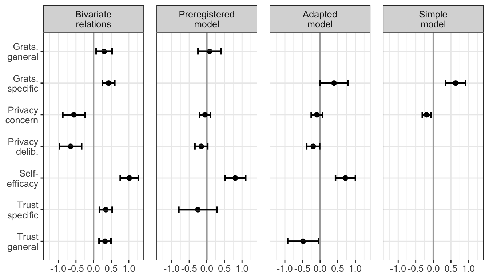
Because the dependent variable is a zero-inflated Poisson distribution, we’ll also run Bayesian models, which can explicitly account for this distribution.
fit_brms <- brm(COMM ~ pri_con_fs + grats_spec_fs + pri_del_fs + self_eff_fs + trust_gen_fs, data = d, family = zero_inflated_poisson())Running /Library/Frameworks/R.framework/Resources/bin/R CMD SHLIB foo.c
clang -I"/Library/Frameworks/R.framework/Resources/include" -DNDEBUG -I"/Library/Frameworks/R.framework/Versions/4.0/Resources/library/Rcpp/include/" -I"/Library/Frameworks/R.framework/Versions/4.0/Resources/library/RcppEigen/include/" -I"/Library/Frameworks/R.framework/Versions/4.0/Resources/library/RcppEigen/include/unsupported" -I"/Library/Frameworks/R.framework/Versions/4.0/Resources/library/BH/include" -I"/Library/Frameworks/R.framework/Versions/4.0/Resources/library/StanHeaders/include/src/" -I"/Library/Frameworks/R.framework/Versions/4.0/Resources/library/StanHeaders/include/" -I"/Library/Frameworks/R.framework/Versions/4.0/Resources/library/RcppParallel/include/" -I"/Library/Frameworks/R.framework/Versions/4.0/Resources/library/rstan/include" -DEIGEN_NO_DEBUG -DBOOST_DISABLE_ASSERTS -DBOOST_PENDING_INTEGER_LOG2_HPP -DSTAN_THREADS -DBOOST_NO_AUTO_PTR -include '/Library/Frameworks/R.framework/Versions/4.0/Resources/library/StanHeaders/include/stan/math/prim/mat/fun/Eigen.hpp' -D_REENTRANT -DRCPP_PARALLEL_USE_TBB=1 -I/usr/local/include -fPIC -Wall -g -O2 -c foo.c -o foo.o
In file included from <built-in>:1:
In file included from /Library/Frameworks/R.framework/Versions/4.0/Resources/library/StanHeaders/include/stan/math/prim/mat/fun/Eigen.hpp:13:
In file included from /Library/Frameworks/R.framework/Versions/4.0/Resources/library/RcppEigen/include/Eigen/Dense:1:
In file included from /Library/Frameworks/R.framework/Versions/4.0/Resources/library/RcppEigen/include/Eigen/Core:88:
/Library/Frameworks/R.framework/Versions/4.0/Resources/library/RcppEigen/include/Eigen/src/Core/util/Macros.h:628:1: error: unknown type name 'namespace'
namespace Eigen {
^
/Library/Frameworks/R.framework/Versions/4.0/Resources/library/RcppEigen/include/Eigen/src/Core/util/Macros.h:628:16: error: expected ';' after top level declarator
namespace Eigen {
^
;
In file included from <built-in>:1:
In file included from /Library/Frameworks/R.framework/Versions/4.0/Resources/library/StanHeaders/include/stan/math/prim/mat/fun/Eigen.hpp:13:
In file included from /Library/Frameworks/R.framework/Versions/4.0/Resources/library/RcppEigen/include/Eigen/Dense:1:
/Library/Frameworks/R.framework/Versions/4.0/Resources/library/RcppEigen/include/Eigen/Core:96:10: fatal error: 'complex' file not found
#include <complex>
^~~~~~~~~
3 errors generated.
make: *** [foo.o] Error 1
SAMPLING FOR MODEL 'ff6dde114d7563d08a5c6ba5771bba58' NOW (CHAIN 1).
Chain 1:
Chain 1: Gradient evaluation took 0.000214 seconds
Chain 1: 1000 transitions using 10 leapfrog steps per transition would take 2.14 seconds.
Chain 1: Adjust your expectations accordingly!
Chain 1:
Chain 1:
Chain 1: Iteration: 1 / 2000 [ 0%] (Warmup)
Chain 1: Iteration: 200 / 2000 [ 10%] (Warmup)
Chain 1: Iteration: 400 / 2000 [ 20%] (Warmup)
Chain 1: Iteration: 600 / 2000 [ 30%] (Warmup)
Chain 1: Iteration: 800 / 2000 [ 40%] (Warmup)
Chain 1: Iteration: 1000 / 2000 [ 50%] (Warmup)
Chain 1: Iteration: 1001 / 2000 [ 50%] (Sampling)
Chain 1: Iteration: 1200 / 2000 [ 60%] (Sampling)
Chain 1: Iteration: 1400 / 2000 [ 70%] (Sampling)
Chain 1: Iteration: 1600 / 2000 [ 80%] (Sampling)
Chain 1: Iteration: 1800 / 2000 [ 90%] (Sampling)
Chain 1: Iteration: 2000 / 2000 [100%] (Sampling)
Chain 1:
Chain 1: Elapsed Time: 1.50407 seconds (Warm-up)
Chain 1: 1.49011 seconds (Sampling)
Chain 1: 2.99418 seconds (Total)
Chain 1:
SAMPLING FOR MODEL 'ff6dde114d7563d08a5c6ba5771bba58' NOW (CHAIN 2).
Chain 2:
Chain 2: Gradient evaluation took 0.000108 seconds
Chain 2: 1000 transitions using 10 leapfrog steps per transition would take 1.08 seconds.
Chain 2: Adjust your expectations accordingly!
Chain 2:
Chain 2:
Chain 2: Iteration: 1 / 2000 [ 0%] (Warmup)
Chain 2: Iteration: 200 / 2000 [ 10%] (Warmup)
Chain 2: Iteration: 400 / 2000 [ 20%] (Warmup)
Chain 2: Iteration: 600 / 2000 [ 30%] (Warmup)
Chain 2: Iteration: 800 / 2000 [ 40%] (Warmup)
Chain 2: Iteration: 1000 / 2000 [ 50%] (Warmup)
Chain 2: Iteration: 1001 / 2000 [ 50%] (Sampling)
Chain 2: Iteration: 1200 / 2000 [ 60%] (Sampling)
Chain 2: Iteration: 1400 / 2000 [ 70%] (Sampling)
Chain 2: Iteration: 1600 / 2000 [ 80%] (Sampling)
Chain 2: Iteration: 1800 / 2000 [ 90%] (Sampling)
Chain 2: Iteration: 2000 / 2000 [100%] (Sampling)
Chain 2:
Chain 2: Elapsed Time: 1.57924 seconds (Warm-up)
Chain 2: 1.3394 seconds (Sampling)
Chain 2: 2.91864 seconds (Total)
Chain 2:
SAMPLING FOR MODEL 'ff6dde114d7563d08a5c6ba5771bba58' NOW (CHAIN 3).
Chain 3:
Chain 3: Gradient evaluation took 0.000105 seconds
Chain 3: 1000 transitions using 10 leapfrog steps per transition would take 1.05 seconds.
Chain 3: Adjust your expectations accordingly!
Chain 3:
Chain 3:
Chain 3: Iteration: 1 / 2000 [ 0%] (Warmup)
Chain 3: Iteration: 200 / 2000 [ 10%] (Warmup)
Chain 3: Iteration: 400 / 2000 [ 20%] (Warmup)
Chain 3: Iteration: 600 / 2000 [ 30%] (Warmup)
Chain 3: Iteration: 800 / 2000 [ 40%] (Warmup)
Chain 3: Iteration: 1000 / 2000 [ 50%] (Warmup)
Chain 3: Iteration: 1001 / 2000 [ 50%] (Sampling)
Chain 3: Iteration: 1200 / 2000 [ 60%] (Sampling)
Chain 3: Iteration: 1400 / 2000 [ 70%] (Sampling)
Chain 3: Iteration: 1600 / 2000 [ 80%] (Sampling)
Chain 3: Iteration: 1800 / 2000 [ 90%] (Sampling)
Chain 3: Iteration: 2000 / 2000 [100%] (Sampling)
Chain 3:
Chain 3: Elapsed Time: 1.58002 seconds (Warm-up)
Chain 3: 1.42571 seconds (Sampling)
Chain 3: 3.00573 seconds (Total)
Chain 3:
SAMPLING FOR MODEL 'ff6dde114d7563d08a5c6ba5771bba58' NOW (CHAIN 4).
Chain 4:
Chain 4: Gradient evaluation took 0.000106 seconds
Chain 4: 1000 transitions using 10 leapfrog steps per transition would take 1.06 seconds.
Chain 4: Adjust your expectations accordingly!
Chain 4:
Chain 4:
Chain 4: Iteration: 1 / 2000 [ 0%] (Warmup)
Chain 4: Iteration: 200 / 2000 [ 10%] (Warmup)
Chain 4: Iteration: 400 / 2000 [ 20%] (Warmup)
Chain 4: Iteration: 600 / 2000 [ 30%] (Warmup)
Chain 4: Iteration: 800 / 2000 [ 40%] (Warmup)
Chain 4: Iteration: 1000 / 2000 [ 50%] (Warmup)
Chain 4: Iteration: 1001 / 2000 [ 50%] (Sampling)
Chain 4: Iteration: 1200 / 2000 [ 60%] (Sampling)
Chain 4: Iteration: 1400 / 2000 [ 70%] (Sampling)
Chain 4: Iteration: 1600 / 2000 [ 80%] (Sampling)
Chain 4: Iteration: 1800 / 2000 [ 90%] (Sampling)
Chain 4: Iteration: 2000 / 2000 [100%] (Sampling)
Chain 4:
Chain 4: Elapsed Time: 1.37559 seconds (Warm-up)
Chain 4: 1.43627 seconds (Sampling)
Chain 4: 2.81186 seconds (Total)
Chain 4: d_predicted <- predict(fit_brms) %>% as.data.frame()
summary(fit_brms) Family: zero_inflated_poisson
Links: mu = log; zi = identity
Formula: COMM ~ pri_con_fs + grats_spec_fs + pri_del_fs + self_eff_fs + trust_gen_fs
Data: d (Number of observations: 559)
Samples: 4 chains, each with iter = 2000; warmup = 1000; thin = 1;
total post-warmup samples = 4000
Population-Level Effects:
Estimate Est.Error l-95% CI u-95% CI Rhat Bulk_ESS Tail_ESS
Intercept 2.35 0.06 2.24 2.47 1.00 3840 3247
pri_con_fs -0.03 0.00 -0.04 -0.02 1.00 3648 2773
grats_spec_fs 0.39 0.01 0.37 0.40 1.00 3124 3149
pri_del_fs -0.15 0.01 -0.16 -0.14 1.00 4018 3254
self_eff_fs 0.81 0.01 0.80 0.83 1.00 3115 2748
trust_gen_fs -0.61 0.01 -0.63 -0.59 1.00 3063 2612
Family Specific Parameters:
Estimate Est.Error l-95% CI u-95% CI Rhat Bulk_ESS Tail_ESS
zi 0.58 0.02 0.54 0.62 1.00 4150 2548
Samples were drawn using sampling(NUTS). For each parameter, Bulk_ESS
and Tail_ESS are effective sample size measures, and Rhat is the potential
scale reduction factor on split chains (at convergence, Rhat = 1).Shows very similar results compared to SEM. Again, trust a negative predictor.
Let’s also look at how values are predicted to see how model performs.
d_predicted <- predict(fit_brms) %>% as.data.frame()
ggplot(d_predicted, aes(Estimate)) + geom_density()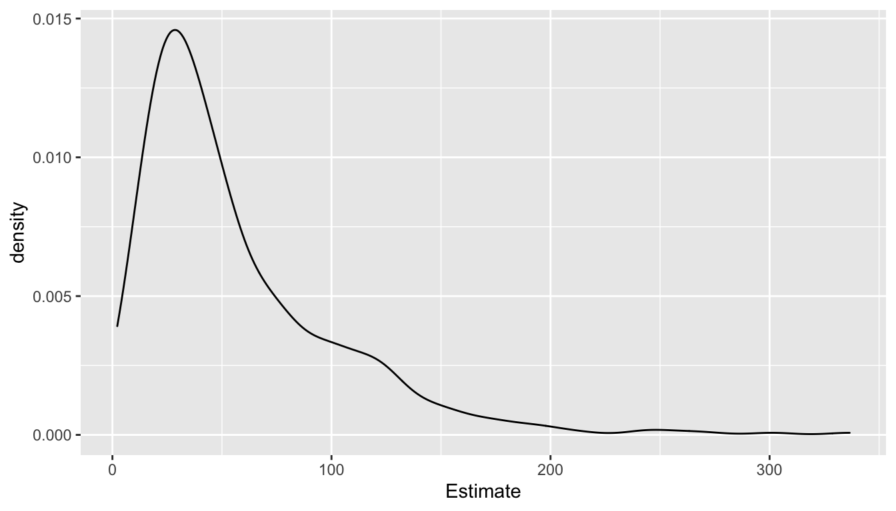
Let’s also plot actual values.
# plot actual values
ggplot(d, aes(COMM)) + geom_density()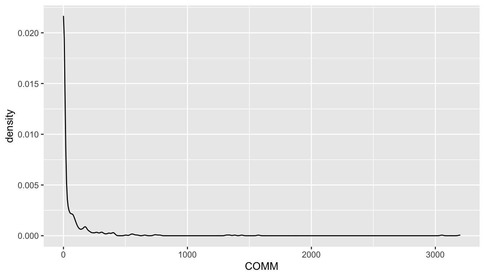
Model-predicted values don’t closely match actual values.
Because trust has a negative coefficient, which seems generally implausible, we also run a model without trust.
fit_brms <- brm(COMM ~ pri_con_fs + grats_spec_fs + pri_del_fs + self_eff_fs, data = d, family = zero_inflated_poisson())Running /Library/Frameworks/R.framework/Resources/bin/R CMD SHLIB foo.c
clang -I"/Library/Frameworks/R.framework/Resources/include" -DNDEBUG -I"/Library/Frameworks/R.framework/Versions/4.0/Resources/library/Rcpp/include/" -I"/Library/Frameworks/R.framework/Versions/4.0/Resources/library/RcppEigen/include/" -I"/Library/Frameworks/R.framework/Versions/4.0/Resources/library/RcppEigen/include/unsupported" -I"/Library/Frameworks/R.framework/Versions/4.0/Resources/library/BH/include" -I"/Library/Frameworks/R.framework/Versions/4.0/Resources/library/StanHeaders/include/src/" -I"/Library/Frameworks/R.framework/Versions/4.0/Resources/library/StanHeaders/include/" -I"/Library/Frameworks/R.framework/Versions/4.0/Resources/library/RcppParallel/include/" -I"/Library/Frameworks/R.framework/Versions/4.0/Resources/library/rstan/include" -DEIGEN_NO_DEBUG -DBOOST_DISABLE_ASSERTS -DBOOST_PENDING_INTEGER_LOG2_HPP -DSTAN_THREADS -DBOOST_NO_AUTO_PTR -include '/Library/Frameworks/R.framework/Versions/4.0/Resources/library/StanHeaders/include/stan/math/prim/mat/fun/Eigen.hpp' -D_REENTRANT -DRCPP_PARALLEL_USE_TBB=1 -I/usr/local/include -fPIC -Wall -g -O2 -c foo.c -o foo.o
In file included from <built-in>:1:
In file included from /Library/Frameworks/R.framework/Versions/4.0/Resources/library/StanHeaders/include/stan/math/prim/mat/fun/Eigen.hpp:13:
In file included from /Library/Frameworks/R.framework/Versions/4.0/Resources/library/RcppEigen/include/Eigen/Dense:1:
In file included from /Library/Frameworks/R.framework/Versions/4.0/Resources/library/RcppEigen/include/Eigen/Core:88:
/Library/Frameworks/R.framework/Versions/4.0/Resources/library/RcppEigen/include/Eigen/src/Core/util/Macros.h:628:1: error: unknown type name 'namespace'
namespace Eigen {
^
/Library/Frameworks/R.framework/Versions/4.0/Resources/library/RcppEigen/include/Eigen/src/Core/util/Macros.h:628:16: error: expected ';' after top level declarator
namespace Eigen {
^
;
In file included from <built-in>:1:
In file included from /Library/Frameworks/R.framework/Versions/4.0/Resources/library/StanHeaders/include/stan/math/prim/mat/fun/Eigen.hpp:13:
In file included from /Library/Frameworks/R.framework/Versions/4.0/Resources/library/RcppEigen/include/Eigen/Dense:1:
/Library/Frameworks/R.framework/Versions/4.0/Resources/library/RcppEigen/include/Eigen/Core:96:10: fatal error: 'complex' file not found
#include <complex>
^~~~~~~~~
3 errors generated.
make: *** [foo.o] Error 1
SAMPLING FOR MODEL 'ff6dde114d7563d08a5c6ba5771bba58' NOW (CHAIN 1).
Chain 1:
Chain 1: Gradient evaluation took 0.000161 seconds
Chain 1: 1000 transitions using 10 leapfrog steps per transition would take 1.61 seconds.
Chain 1: Adjust your expectations accordingly!
Chain 1:
Chain 1:
Chain 1: Iteration: 1 / 2000 [ 0%] (Warmup)
Chain 1: Iteration: 200 / 2000 [ 10%] (Warmup)
Chain 1: Iteration: 400 / 2000 [ 20%] (Warmup)
Chain 1: Iteration: 600 / 2000 [ 30%] (Warmup)
Chain 1: Iteration: 800 / 2000 [ 40%] (Warmup)
Chain 1: Iteration: 1000 / 2000 [ 50%] (Warmup)
Chain 1: Iteration: 1001 / 2000 [ 50%] (Sampling)
Chain 1: Iteration: 1200 / 2000 [ 60%] (Sampling)
Chain 1: Iteration: 1400 / 2000 [ 70%] (Sampling)
Chain 1: Iteration: 1600 / 2000 [ 80%] (Sampling)
Chain 1: Iteration: 1800 / 2000 [ 90%] (Sampling)
Chain 1: Iteration: 2000 / 2000 [100%] (Sampling)
Chain 1:
Chain 1: Elapsed Time: 1.28726 seconds (Warm-up)
Chain 1: 1.17511 seconds (Sampling)
Chain 1: 2.46236 seconds (Total)
Chain 1:
SAMPLING FOR MODEL 'ff6dde114d7563d08a5c6ba5771bba58' NOW (CHAIN 2).
Chain 2:
Chain 2: Gradient evaluation took 0.000106 seconds
Chain 2: 1000 transitions using 10 leapfrog steps per transition would take 1.06 seconds.
Chain 2: Adjust your expectations accordingly!
Chain 2:
Chain 2:
Chain 2: Iteration: 1 / 2000 [ 0%] (Warmup)
Chain 2: Iteration: 200 / 2000 [ 10%] (Warmup)
Chain 2: Iteration: 400 / 2000 [ 20%] (Warmup)
Chain 2: Iteration: 600 / 2000 [ 30%] (Warmup)
Chain 2: Iteration: 800 / 2000 [ 40%] (Warmup)
Chain 2: Iteration: 1000 / 2000 [ 50%] (Warmup)
Chain 2: Iteration: 1001 / 2000 [ 50%] (Sampling)
Chain 2: Iteration: 1200 / 2000 [ 60%] (Sampling)
Chain 2: Iteration: 1400 / 2000 [ 70%] (Sampling)
Chain 2: Iteration: 1600 / 2000 [ 80%] (Sampling)
Chain 2: Iteration: 1800 / 2000 [ 90%] (Sampling)
Chain 2: Iteration: 2000 / 2000 [100%] (Sampling)
Chain 2:
Chain 2: Elapsed Time: 1.30972 seconds (Warm-up)
Chain 2: 1.31789 seconds (Sampling)
Chain 2: 2.62761 seconds (Total)
Chain 2:
SAMPLING FOR MODEL 'ff6dde114d7563d08a5c6ba5771bba58' NOW (CHAIN 3).
Chain 3:
Chain 3: Gradient evaluation took 0.000107 seconds
Chain 3: 1000 transitions using 10 leapfrog steps per transition would take 1.07 seconds.
Chain 3: Adjust your expectations accordingly!
Chain 3:
Chain 3:
Chain 3: Iteration: 1 / 2000 [ 0%] (Warmup)
Chain 3: Iteration: 200 / 2000 [ 10%] (Warmup)
Chain 3: Iteration: 400 / 2000 [ 20%] (Warmup)
Chain 3: Iteration: 600 / 2000 [ 30%] (Warmup)
Chain 3: Iteration: 800 / 2000 [ 40%] (Warmup)
Chain 3: Iteration: 1000 / 2000 [ 50%] (Warmup)
Chain 3: Iteration: 1001 / 2000 [ 50%] (Sampling)
Chain 3: Iteration: 1200 / 2000 [ 60%] (Sampling)
Chain 3: Iteration: 1400 / 2000 [ 70%] (Sampling)
Chain 3: Iteration: 1600 / 2000 [ 80%] (Sampling)
Chain 3: Iteration: 1800 / 2000 [ 90%] (Sampling)
Chain 3: Iteration: 2000 / 2000 [100%] (Sampling)
Chain 3:
Chain 3: Elapsed Time: 1.26721 seconds (Warm-up)
Chain 3: 1.09984 seconds (Sampling)
Chain 3: 2.36705 seconds (Total)
Chain 3:
SAMPLING FOR MODEL 'ff6dde114d7563d08a5c6ba5771bba58' NOW (CHAIN 4).
Chain 4:
Chain 4: Gradient evaluation took 0.000106 seconds
Chain 4: 1000 transitions using 10 leapfrog steps per transition would take 1.06 seconds.
Chain 4: Adjust your expectations accordingly!
Chain 4:
Chain 4:
Chain 4: Iteration: 1 / 2000 [ 0%] (Warmup)
Chain 4: Iteration: 200 / 2000 [ 10%] (Warmup)
Chain 4: Iteration: 400 / 2000 [ 20%] (Warmup)
Chain 4: Iteration: 600 / 2000 [ 30%] (Warmup)
Chain 4: Iteration: 800 / 2000 [ 40%] (Warmup)
Chain 4: Iteration: 1000 / 2000 [ 50%] (Warmup)
Chain 4: Iteration: 1001 / 2000 [ 50%] (Sampling)
Chain 4: Iteration: 1200 / 2000 [ 60%] (Sampling)
Chain 4: Iteration: 1400 / 2000 [ 70%] (Sampling)
Chain 4: Iteration: 1600 / 2000 [ 80%] (Sampling)
Chain 4: Iteration: 1800 / 2000 [ 90%] (Sampling)
Chain 4: Iteration: 2000 / 2000 [100%] (Sampling)
Chain 4:
Chain 4: Elapsed Time: 1.20946 seconds (Warm-up)
Chain 4: 1.2012 seconds (Sampling)
Chain 4: 2.41066 seconds (Total)
Chain 4: d_predicted <- predict(fit_brms) %>% as.data.frame()
summary(fit_brms) Family: zero_inflated_poisson
Links: mu = log; zi = identity
Formula: COMM ~ pri_con_fs + grats_spec_fs + pri_del_fs + self_eff_fs
Data: d (Number of observations: 559)
Samples: 4 chains, each with iter = 2000; warmup = 1000; thin = 1;
total post-warmup samples = 4000
Population-Level Effects:
Estimate Est.Error l-95% CI u-95% CI Rhat Bulk_ESS Tail_ESS
Intercept 1.19 0.06 1.09 1.30 1.00 3364 3033
pri_con_fs 0.10 0.00 0.09 0.11 1.00 3877 3009
grats_spec_fs 0.05 0.01 0.03 0.06 1.00 3377 2924
pri_del_fs -0.15 0.01 -0.16 -0.14 1.00 3583 2565
self_eff_fs 0.67 0.01 0.66 0.69 1.00 2578 2287
Family Specific Parameters:
Estimate Est.Error l-95% CI u-95% CI Rhat Bulk_ESS Tail_ESS
zi 0.58 0.02 0.54 0.62 1.00 3175 2854
Samples were drawn using sampling(NUTS). For each parameter, Bulk_ESS
and Tail_ESS are effective sample size measures, and Rhat is the potential
scale reduction factor on split chains (at convergence, Rhat = 1).Seems to make sense. Self-Efficacy a strong predictor of behavior.
fit_brms_simple <- brm(COMM ~ pri_con_fs + grats_spec_fs, data = d, family = zero_inflated_poisson())Running /Library/Frameworks/R.framework/Resources/bin/R CMD SHLIB foo.c
clang -I"/Library/Frameworks/R.framework/Resources/include" -DNDEBUG -I"/Library/Frameworks/R.framework/Versions/4.0/Resources/library/Rcpp/include/" -I"/Library/Frameworks/R.framework/Versions/4.0/Resources/library/RcppEigen/include/" -I"/Library/Frameworks/R.framework/Versions/4.0/Resources/library/RcppEigen/include/unsupported" -I"/Library/Frameworks/R.framework/Versions/4.0/Resources/library/BH/include" -I"/Library/Frameworks/R.framework/Versions/4.0/Resources/library/StanHeaders/include/src/" -I"/Library/Frameworks/R.framework/Versions/4.0/Resources/library/StanHeaders/include/" -I"/Library/Frameworks/R.framework/Versions/4.0/Resources/library/RcppParallel/include/" -I"/Library/Frameworks/R.framework/Versions/4.0/Resources/library/rstan/include" -DEIGEN_NO_DEBUG -DBOOST_DISABLE_ASSERTS -DBOOST_PENDING_INTEGER_LOG2_HPP -DSTAN_THREADS -DBOOST_NO_AUTO_PTR -include '/Library/Frameworks/R.framework/Versions/4.0/Resources/library/StanHeaders/include/stan/math/prim/mat/fun/Eigen.hpp' -D_REENTRANT -DRCPP_PARALLEL_USE_TBB=1 -I/usr/local/include -fPIC -Wall -g -O2 -c foo.c -o foo.o
In file included from <built-in>:1:
In file included from /Library/Frameworks/R.framework/Versions/4.0/Resources/library/StanHeaders/include/stan/math/prim/mat/fun/Eigen.hpp:13:
In file included from /Library/Frameworks/R.framework/Versions/4.0/Resources/library/RcppEigen/include/Eigen/Dense:1:
In file included from /Library/Frameworks/R.framework/Versions/4.0/Resources/library/RcppEigen/include/Eigen/Core:88:
/Library/Frameworks/R.framework/Versions/4.0/Resources/library/RcppEigen/include/Eigen/src/Core/util/Macros.h:628:1: error: unknown type name 'namespace'
namespace Eigen {
^
/Library/Frameworks/R.framework/Versions/4.0/Resources/library/RcppEigen/include/Eigen/src/Core/util/Macros.h:628:16: error: expected ';' after top level declarator
namespace Eigen {
^
;
In file included from <built-in>:1:
In file included from /Library/Frameworks/R.framework/Versions/4.0/Resources/library/StanHeaders/include/stan/math/prim/mat/fun/Eigen.hpp:13:
In file included from /Library/Frameworks/R.framework/Versions/4.0/Resources/library/RcppEigen/include/Eigen/Dense:1:
/Library/Frameworks/R.framework/Versions/4.0/Resources/library/RcppEigen/include/Eigen/Core:96:10: fatal error: 'complex' file not found
#include <complex>
^~~~~~~~~
3 errors generated.
make: *** [foo.o] Error 1
SAMPLING FOR MODEL 'ff6dde114d7563d08a5c6ba5771bba58' NOW (CHAIN 1).
Chain 1:
Chain 1: Gradient evaluation took 0.000152 seconds
Chain 1: 1000 transitions using 10 leapfrog steps per transition would take 1.52 seconds.
Chain 1: Adjust your expectations accordingly!
Chain 1:
Chain 1:
Chain 1: Iteration: 1 / 2000 [ 0%] (Warmup)
Chain 1: Iteration: 200 / 2000 [ 10%] (Warmup)
Chain 1: Iteration: 400 / 2000 [ 20%] (Warmup)
Chain 1: Iteration: 600 / 2000 [ 30%] (Warmup)
Chain 1: Iteration: 800 / 2000 [ 40%] (Warmup)
Chain 1: Iteration: 1000 / 2000 [ 50%] (Warmup)
Chain 1: Iteration: 1001 / 2000 [ 50%] (Sampling)
Chain 1: Iteration: 1200 / 2000 [ 60%] (Sampling)
Chain 1: Iteration: 1400 / 2000 [ 70%] (Sampling)
Chain 1: Iteration: 1600 / 2000 [ 80%] (Sampling)
Chain 1: Iteration: 1800 / 2000 [ 90%] (Sampling)
Chain 1: Iteration: 2000 / 2000 [100%] (Sampling)
Chain 1:
Chain 1: Elapsed Time: 0.842434 seconds (Warm-up)
Chain 1: 0.658347 seconds (Sampling)
Chain 1: 1.50078 seconds (Total)
Chain 1:
SAMPLING FOR MODEL 'ff6dde114d7563d08a5c6ba5771bba58' NOW (CHAIN 2).
Chain 2:
Chain 2: Gradient evaluation took 0.000113 seconds
Chain 2: 1000 transitions using 10 leapfrog steps per transition would take 1.13 seconds.
Chain 2: Adjust your expectations accordingly!
Chain 2:
Chain 2:
Chain 2: Iteration: 1 / 2000 [ 0%] (Warmup)
Chain 2: Iteration: 200 / 2000 [ 10%] (Warmup)
Chain 2: Iteration: 400 / 2000 [ 20%] (Warmup)
Chain 2: Iteration: 600 / 2000 [ 30%] (Warmup)
Chain 2: Iteration: 800 / 2000 [ 40%] (Warmup)
Chain 2: Iteration: 1000 / 2000 [ 50%] (Warmup)
Chain 2: Iteration: 1001 / 2000 [ 50%] (Sampling)
Chain 2: Iteration: 1200 / 2000 [ 60%] (Sampling)
Chain 2: Iteration: 1400 / 2000 [ 70%] (Sampling)
Chain 2: Iteration: 1600 / 2000 [ 80%] (Sampling)
Chain 2: Iteration: 1800 / 2000 [ 90%] (Sampling)
Chain 2: Iteration: 2000 / 2000 [100%] (Sampling)
Chain 2:
Chain 2: Elapsed Time: 0.891613 seconds (Warm-up)
Chain 2: 0.605925 seconds (Sampling)
Chain 2: 1.49754 seconds (Total)
Chain 2:
SAMPLING FOR MODEL 'ff6dde114d7563d08a5c6ba5771bba58' NOW (CHAIN 3).
Chain 3:
Chain 3: Gradient evaluation took 0.000127 seconds
Chain 3: 1000 transitions using 10 leapfrog steps per transition would take 1.27 seconds.
Chain 3: Adjust your expectations accordingly!
Chain 3:
Chain 3:
Chain 3: Iteration: 1 / 2000 [ 0%] (Warmup)
Chain 3: Iteration: 200 / 2000 [ 10%] (Warmup)
Chain 3: Iteration: 400 / 2000 [ 20%] (Warmup)
Chain 3: Iteration: 600 / 2000 [ 30%] (Warmup)
Chain 3: Iteration: 800 / 2000 [ 40%] (Warmup)
Chain 3: Iteration: 1000 / 2000 [ 50%] (Warmup)
Chain 3: Iteration: 1001 / 2000 [ 50%] (Sampling)
Chain 3: Iteration: 1200 / 2000 [ 60%] (Sampling)
Chain 3: Iteration: 1400 / 2000 [ 70%] (Sampling)
Chain 3: Iteration: 1600 / 2000 [ 80%] (Sampling)
Chain 3: Iteration: 1800 / 2000 [ 90%] (Sampling)
Chain 3: Iteration: 2000 / 2000 [100%] (Sampling)
Chain 3:
Chain 3: Elapsed Time: 0.82963 seconds (Warm-up)
Chain 3: 0.694818 seconds (Sampling)
Chain 3: 1.52445 seconds (Total)
Chain 3:
SAMPLING FOR MODEL 'ff6dde114d7563d08a5c6ba5771bba58' NOW (CHAIN 4).
Chain 4:
Chain 4: Gradient evaluation took 0.000101 seconds
Chain 4: 1000 transitions using 10 leapfrog steps per transition would take 1.01 seconds.
Chain 4: Adjust your expectations accordingly!
Chain 4:
Chain 4:
Chain 4: Iteration: 1 / 2000 [ 0%] (Warmup)
Chain 4: Iteration: 200 / 2000 [ 10%] (Warmup)
Chain 4: Iteration: 400 / 2000 [ 20%] (Warmup)
Chain 4: Iteration: 600 / 2000 [ 30%] (Warmup)
Chain 4: Iteration: 800 / 2000 [ 40%] (Warmup)
Chain 4: Iteration: 1000 / 2000 [ 50%] (Warmup)
Chain 4: Iteration: 1001 / 2000 [ 50%] (Sampling)
Chain 4: Iteration: 1200 / 2000 [ 60%] (Sampling)
Chain 4: Iteration: 1400 / 2000 [ 70%] (Sampling)
Chain 4: Iteration: 1600 / 2000 [ 80%] (Sampling)
Chain 4: Iteration: 1800 / 2000 [ 90%] (Sampling)
Chain 4: Iteration: 2000 / 2000 [100%] (Sampling)
Chain 4:
Chain 4: Elapsed Time: 0.806962 seconds (Warm-up)
Chain 4: 0.69919 seconds (Sampling)
Chain 4: 1.50615 seconds (Total)
Chain 4: summary(fit_brms_simple) Family: zero_inflated_poisson
Links: mu = log; zi = identity
Formula: COMM ~ pri_con_fs + grats_spec_fs
Data: d (Number of observations: 559)
Samples: 4 chains, each with iter = 2000; warmup = 1000; thin = 1;
total post-warmup samples = 4000
Population-Level Effects:
Estimate Est.Error l-95% CI u-95% CI Rhat Bulk_ESS Tail_ESS
Intercept 3.65 0.03 3.59 3.72 1.00 3458 2616
pri_con_fs -0.07 0.00 -0.08 -0.07 1.00 4456 2940
grats_spec_fs 0.35 0.01 0.34 0.36 1.00 3464 2914
Family Specific Parameters:
Estimate Est.Error l-95% CI u-95% CI Rhat Bulk_ESS Tail_ESS
zi 0.58 0.02 0.54 0.62 1.00 3304 2552
Samples were drawn using sampling(NUTS). For each parameter, Bulk_ESS
and Tail_ESS are effective sample size measures, and Rhat is the potential
scale reduction factor on split chains (at convergence, Rhat = 1).Also works, showing somewhat stronger effects.
fit_brms_simple_hurdle <- brm(bf(COMM ~ pri_con_fs + grats_spec_fs, hu ~ pri_con_fs + grats_spec_fs), data = d, family = hurdle_poisson())Running /Library/Frameworks/R.framework/Resources/bin/R CMD SHLIB foo.c
clang -I"/Library/Frameworks/R.framework/Resources/include" -DNDEBUG -I"/Library/Frameworks/R.framework/Versions/4.0/Resources/library/Rcpp/include/" -I"/Library/Frameworks/R.framework/Versions/4.0/Resources/library/RcppEigen/include/" -I"/Library/Frameworks/R.framework/Versions/4.0/Resources/library/RcppEigen/include/unsupported" -I"/Library/Frameworks/R.framework/Versions/4.0/Resources/library/BH/include" -I"/Library/Frameworks/R.framework/Versions/4.0/Resources/library/StanHeaders/include/src/" -I"/Library/Frameworks/R.framework/Versions/4.0/Resources/library/StanHeaders/include/" -I"/Library/Frameworks/R.framework/Versions/4.0/Resources/library/RcppParallel/include/" -I"/Library/Frameworks/R.framework/Versions/4.0/Resources/library/rstan/include" -DEIGEN_NO_DEBUG -DBOOST_DISABLE_ASSERTS -DBOOST_PENDING_INTEGER_LOG2_HPP -DSTAN_THREADS -DBOOST_NO_AUTO_PTR -include '/Library/Frameworks/R.framework/Versions/4.0/Resources/library/StanHeaders/include/stan/math/prim/mat/fun/Eigen.hpp' -D_REENTRANT -DRCPP_PARALLEL_USE_TBB=1 -I/usr/local/include -fPIC -Wall -g -O2 -c foo.c -o foo.o
In file included from <built-in>:1:
In file included from /Library/Frameworks/R.framework/Versions/4.0/Resources/library/StanHeaders/include/stan/math/prim/mat/fun/Eigen.hpp:13:
In file included from /Library/Frameworks/R.framework/Versions/4.0/Resources/library/RcppEigen/include/Eigen/Dense:1:
In file included from /Library/Frameworks/R.framework/Versions/4.0/Resources/library/RcppEigen/include/Eigen/Core:88:
/Library/Frameworks/R.framework/Versions/4.0/Resources/library/RcppEigen/include/Eigen/src/Core/util/Macros.h:628:1: error: unknown type name 'namespace'
namespace Eigen {
^
/Library/Frameworks/R.framework/Versions/4.0/Resources/library/RcppEigen/include/Eigen/src/Core/util/Macros.h:628:16: error: expected ';' after top level declarator
namespace Eigen {
^
;
In file included from <built-in>:1:
In file included from /Library/Frameworks/R.framework/Versions/4.0/Resources/library/StanHeaders/include/stan/math/prim/mat/fun/Eigen.hpp:13:
In file included from /Library/Frameworks/R.framework/Versions/4.0/Resources/library/RcppEigen/include/Eigen/Dense:1:
/Library/Frameworks/R.framework/Versions/4.0/Resources/library/RcppEigen/include/Eigen/Core:96:10: fatal error: 'complex' file not found
#include <complex>
^~~~~~~~~
3 errors generated.
make: *** [foo.o] Error 1
SAMPLING FOR MODEL 'f157c8fb1c22051058d62ec8076651f8' NOW (CHAIN 1).
Chain 1:
Chain 1: Gradient evaluation took 0.000211 seconds
Chain 1: 1000 transitions using 10 leapfrog steps per transition would take 2.11 seconds.
Chain 1: Adjust your expectations accordingly!
Chain 1:
Chain 1:
Chain 1: Iteration: 1 / 2000 [ 0%] (Warmup)
Chain 1: Iteration: 200 / 2000 [ 10%] (Warmup)
Chain 1: Iteration: 400 / 2000 [ 20%] (Warmup)
Chain 1: Iteration: 600 / 2000 [ 30%] (Warmup)
Chain 1: Iteration: 800 / 2000 [ 40%] (Warmup)
Chain 1: Iteration: 1000 / 2000 [ 50%] (Warmup)
Chain 1: Iteration: 1001 / 2000 [ 50%] (Sampling)
Chain 1: Iteration: 1200 / 2000 [ 60%] (Sampling)
Chain 1: Iteration: 1400 / 2000 [ 70%] (Sampling)
Chain 1: Iteration: 1600 / 2000 [ 80%] (Sampling)
Chain 1: Iteration: 1800 / 2000 [ 90%] (Sampling)
Chain 1: Iteration: 2000 / 2000 [100%] (Sampling)
Chain 1:
Chain 1: Elapsed Time: 1.43322 seconds (Warm-up)
Chain 1: 0.778388 seconds (Sampling)
Chain 1: 2.21161 seconds (Total)
Chain 1:
SAMPLING FOR MODEL 'f157c8fb1c22051058d62ec8076651f8' NOW (CHAIN 2).
Chain 2:
Chain 2: Gradient evaluation took 0.000269 seconds
Chain 2: 1000 transitions using 10 leapfrog steps per transition would take 2.69 seconds.
Chain 2: Adjust your expectations accordingly!
Chain 2:
Chain 2:
Chain 2: Iteration: 1 / 2000 [ 0%] (Warmup)
Chain 2: Iteration: 200 / 2000 [ 10%] (Warmup)
Chain 2: Iteration: 400 / 2000 [ 20%] (Warmup)
Chain 2: Iteration: 600 / 2000 [ 30%] (Warmup)
Chain 2: Iteration: 800 / 2000 [ 40%] (Warmup)
Chain 2: Iteration: 1000 / 2000 [ 50%] (Warmup)
Chain 2: Iteration: 1001 / 2000 [ 50%] (Sampling)
Chain 2: Iteration: 1200 / 2000 [ 60%] (Sampling)
Chain 2: Iteration: 1400 / 2000 [ 70%] (Sampling)
Chain 2: Iteration: 1600 / 2000 [ 80%] (Sampling)
Chain 2: Iteration: 1800 / 2000 [ 90%] (Sampling)
Chain 2: Iteration: 2000 / 2000 [100%] (Sampling)
Chain 2:
Chain 2: Elapsed Time: 1.54255 seconds (Warm-up)
Chain 2: 0.768876 seconds (Sampling)
Chain 2: 2.31143 seconds (Total)
Chain 2:
SAMPLING FOR MODEL 'f157c8fb1c22051058d62ec8076651f8' NOW (CHAIN 3).
Chain 3:
Chain 3: Gradient evaluation took 0.000109 seconds
Chain 3: 1000 transitions using 10 leapfrog steps per transition would take 1.09 seconds.
Chain 3: Adjust your expectations accordingly!
Chain 3:
Chain 3:
Chain 3: Iteration: 1 / 2000 [ 0%] (Warmup)
Chain 3: Iteration: 200 / 2000 [ 10%] (Warmup)
Chain 3: Iteration: 400 / 2000 [ 20%] (Warmup)
Chain 3: Iteration: 600 / 2000 [ 30%] (Warmup)
Chain 3: Iteration: 800 / 2000 [ 40%] (Warmup)
Chain 3: Iteration: 1000 / 2000 [ 50%] (Warmup)
Chain 3: Iteration: 1001 / 2000 [ 50%] (Sampling)
Chain 3: Iteration: 1200 / 2000 [ 60%] (Sampling)
Chain 3: Iteration: 1400 / 2000 [ 70%] (Sampling)
Chain 3: Iteration: 1600 / 2000 [ 80%] (Sampling)
Chain 3: Iteration: 1800 / 2000 [ 90%] (Sampling)
Chain 3: Iteration: 2000 / 2000 [100%] (Sampling)
Chain 3:
Chain 3: Elapsed Time: 1.4029 seconds (Warm-up)
Chain 3: 0.772516 seconds (Sampling)
Chain 3: 2.17541 seconds (Total)
Chain 3:
SAMPLING FOR MODEL 'f157c8fb1c22051058d62ec8076651f8' NOW (CHAIN 4).
Chain 4:
Chain 4: Gradient evaluation took 0.000119 seconds
Chain 4: 1000 transitions using 10 leapfrog steps per transition would take 1.19 seconds.
Chain 4: Adjust your expectations accordingly!
Chain 4:
Chain 4:
Chain 4: Iteration: 1 / 2000 [ 0%] (Warmup)
Chain 4: Iteration: 200 / 2000 [ 10%] (Warmup)
Chain 4: Iteration: 400 / 2000 [ 20%] (Warmup)
Chain 4: Iteration: 600 / 2000 [ 30%] (Warmup)
Chain 4: Iteration: 800 / 2000 [ 40%] (Warmup)
Chain 4: Iteration: 1000 / 2000 [ 50%] (Warmup)
Chain 4: Iteration: 1001 / 2000 [ 50%] (Sampling)
Chain 4: Iteration: 1200 / 2000 [ 60%] (Sampling)
Chain 4: Iteration: 1400 / 2000 [ 70%] (Sampling)
Chain 4: Iteration: 1600 / 2000 [ 80%] (Sampling)
Chain 4: Iteration: 1800 / 2000 [ 90%] (Sampling)
Chain 4: Iteration: 2000 / 2000 [100%] (Sampling)
Chain 4:
Chain 4: Elapsed Time: 1.29125 seconds (Warm-up)
Chain 4: 0.729754 seconds (Sampling)
Chain 4: 2.02101 seconds (Total)
Chain 4: summary(fit_brms_simple_hurdle) Family: hurdle_poisson
Links: mu = log; hu = logit
Formula: COMM ~ pri_con_fs + grats_spec_fs
hu ~ pri_con_fs + grats_spec_fs
Data: d (Number of observations: 559)
Samples: 4 chains, each with iter = 2000; warmup = 1000; thin = 1;
total post-warmup samples = 4000
Population-Level Effects:
Estimate Est.Error l-95% CI u-95% CI Rhat Bulk_ESS Tail_ESS
Intercept 3.65 0.03 3.59 3.72 1.00 5066 3035
hu_Intercept 1.74 0.51 0.75 2.74 1.00 5213 2956
pri_con_fs -0.07 0.00 -0.08 -0.07 1.00 5869 3235
grats_spec_fs 0.35 0.01 0.34 0.36 1.00 4991 2972
hu_pri_con_fs 0.18 0.06 0.06 0.30 1.00 5775 3010
hu_grats_spec_fs -0.42 0.10 -0.61 -0.23 1.00 5452 3165
Samples were drawn using sampling(NUTS). For each parameter, Bulk_ESS
and Tail_ESS are effective sample size measures, and Rhat is the potential
scale reduction factor on split chains (at convergence, Rhat = 1).Results don’t differ markedly.
fit_brms <- brm(COMM ~ pri_con_fs_c * grats_spec_fs_c, data = d, family = zero_inflated_poisson())Running /Library/Frameworks/R.framework/Resources/bin/R CMD SHLIB foo.c
clang -I"/Library/Frameworks/R.framework/Resources/include" -DNDEBUG -I"/Library/Frameworks/R.framework/Versions/4.0/Resources/library/Rcpp/include/" -I"/Library/Frameworks/R.framework/Versions/4.0/Resources/library/RcppEigen/include/" -I"/Library/Frameworks/R.framework/Versions/4.0/Resources/library/RcppEigen/include/unsupported" -I"/Library/Frameworks/R.framework/Versions/4.0/Resources/library/BH/include" -I"/Library/Frameworks/R.framework/Versions/4.0/Resources/library/StanHeaders/include/src/" -I"/Library/Frameworks/R.framework/Versions/4.0/Resources/library/StanHeaders/include/" -I"/Library/Frameworks/R.framework/Versions/4.0/Resources/library/RcppParallel/include/" -I"/Library/Frameworks/R.framework/Versions/4.0/Resources/library/rstan/include" -DEIGEN_NO_DEBUG -DBOOST_DISABLE_ASSERTS -DBOOST_PENDING_INTEGER_LOG2_HPP -DSTAN_THREADS -DBOOST_NO_AUTO_PTR -include '/Library/Frameworks/R.framework/Versions/4.0/Resources/library/StanHeaders/include/stan/math/prim/mat/fun/Eigen.hpp' -D_REENTRANT -DRCPP_PARALLEL_USE_TBB=1 -I/usr/local/include -fPIC -Wall -g -O2 -c foo.c -o foo.o
In file included from <built-in>:1:
In file included from /Library/Frameworks/R.framework/Versions/4.0/Resources/library/StanHeaders/include/stan/math/prim/mat/fun/Eigen.hpp:13:
In file included from /Library/Frameworks/R.framework/Versions/4.0/Resources/library/RcppEigen/include/Eigen/Dense:1:
In file included from /Library/Frameworks/R.framework/Versions/4.0/Resources/library/RcppEigen/include/Eigen/Core:88:
/Library/Frameworks/R.framework/Versions/4.0/Resources/library/RcppEigen/include/Eigen/src/Core/util/Macros.h:628:1: error: unknown type name 'namespace'
namespace Eigen {
^
/Library/Frameworks/R.framework/Versions/4.0/Resources/library/RcppEigen/include/Eigen/src/Core/util/Macros.h:628:16: error: expected ';' after top level declarator
namespace Eigen {
^
;
In file included from <built-in>:1:
In file included from /Library/Frameworks/R.framework/Versions/4.0/Resources/library/StanHeaders/include/stan/math/prim/mat/fun/Eigen.hpp:13:
In file included from /Library/Frameworks/R.framework/Versions/4.0/Resources/library/RcppEigen/include/Eigen/Dense:1:
/Library/Frameworks/R.framework/Versions/4.0/Resources/library/RcppEigen/include/Eigen/Core:96:10: fatal error: 'complex' file not found
#include <complex>
^~~~~~~~~
3 errors generated.
make: *** [foo.o] Error 1
SAMPLING FOR MODEL 'ff6dde114d7563d08a5c6ba5771bba58' NOW (CHAIN 1).
Chain 1:
Chain 1: Gradient evaluation took 0.000163 seconds
Chain 1: 1000 transitions using 10 leapfrog steps per transition would take 1.63 seconds.
Chain 1: Adjust your expectations accordingly!
Chain 1:
Chain 1:
Chain 1: Iteration: 1 / 2000 [ 0%] (Warmup)
Chain 1: Iteration: 200 / 2000 [ 10%] (Warmup)
Chain 1: Iteration: 400 / 2000 [ 20%] (Warmup)
Chain 1: Iteration: 600 / 2000 [ 30%] (Warmup)
Chain 1: Iteration: 800 / 2000 [ 40%] (Warmup)
Chain 1: Iteration: 1000 / 2000 [ 50%] (Warmup)
Chain 1: Iteration: 1001 / 2000 [ 50%] (Sampling)
Chain 1: Iteration: 1200 / 2000 [ 60%] (Sampling)
Chain 1: Iteration: 1400 / 2000 [ 70%] (Sampling)
Chain 1: Iteration: 1600 / 2000 [ 80%] (Sampling)
Chain 1: Iteration: 1800 / 2000 [ 90%] (Sampling)
Chain 1: Iteration: 2000 / 2000 [100%] (Sampling)
Chain 1:
Chain 1: Elapsed Time: 0.96897 seconds (Warm-up)
Chain 1: 0.757595 seconds (Sampling)
Chain 1: 1.72656 seconds (Total)
Chain 1:
SAMPLING FOR MODEL 'ff6dde114d7563d08a5c6ba5771bba58' NOW (CHAIN 2).
Chain 2:
Chain 2: Gradient evaluation took 0.000126 seconds
Chain 2: 1000 transitions using 10 leapfrog steps per transition would take 1.26 seconds.
Chain 2: Adjust your expectations accordingly!
Chain 2:
Chain 2:
Chain 2: Iteration: 1 / 2000 [ 0%] (Warmup)
Chain 2: Iteration: 200 / 2000 [ 10%] (Warmup)
Chain 2: Iteration: 400 / 2000 [ 20%] (Warmup)
Chain 2: Iteration: 600 / 2000 [ 30%] (Warmup)
Chain 2: Iteration: 800 / 2000 [ 40%] (Warmup)
Chain 2: Iteration: 1000 / 2000 [ 50%] (Warmup)
Chain 2: Iteration: 1001 / 2000 [ 50%] (Sampling)
Chain 2: Iteration: 1200 / 2000 [ 60%] (Sampling)
Chain 2: Iteration: 1400 / 2000 [ 70%] (Sampling)
Chain 2: Iteration: 1600 / 2000 [ 80%] (Sampling)
Chain 2: Iteration: 1800 / 2000 [ 90%] (Sampling)
Chain 2: Iteration: 2000 / 2000 [100%] (Sampling)
Chain 2:
Chain 2: Elapsed Time: 1.0374 seconds (Warm-up)
Chain 2: 0.780917 seconds (Sampling)
Chain 2: 1.81832 seconds (Total)
Chain 2:
SAMPLING FOR MODEL 'ff6dde114d7563d08a5c6ba5771bba58' NOW (CHAIN 3).
Chain 3:
Chain 3: Gradient evaluation took 0.000135 seconds
Chain 3: 1000 transitions using 10 leapfrog steps per transition would take 1.35 seconds.
Chain 3: Adjust your expectations accordingly!
Chain 3:
Chain 3:
Chain 3: Iteration: 1 / 2000 [ 0%] (Warmup)
Chain 3: Iteration: 200 / 2000 [ 10%] (Warmup)
Chain 3: Iteration: 400 / 2000 [ 20%] (Warmup)
Chain 3: Iteration: 600 / 2000 [ 30%] (Warmup)
Chain 3: Iteration: 800 / 2000 [ 40%] (Warmup)
Chain 3: Iteration: 1000 / 2000 [ 50%] (Warmup)
Chain 3: Iteration: 1001 / 2000 [ 50%] (Sampling)
Chain 3: Iteration: 1200 / 2000 [ 60%] (Sampling)
Chain 3: Iteration: 1400 / 2000 [ 70%] (Sampling)
Chain 3: Iteration: 1600 / 2000 [ 80%] (Sampling)
Chain 3: Iteration: 1800 / 2000 [ 90%] (Sampling)
Chain 3: Iteration: 2000 / 2000 [100%] (Sampling)
Chain 3:
Chain 3: Elapsed Time: 0.994952 seconds (Warm-up)
Chain 3: 0.843577 seconds (Sampling)
Chain 3: 1.83853 seconds (Total)
Chain 3:
SAMPLING FOR MODEL 'ff6dde114d7563d08a5c6ba5771bba58' NOW (CHAIN 4).
Chain 4:
Chain 4: Gradient evaluation took 0.000109 seconds
Chain 4: 1000 transitions using 10 leapfrog steps per transition would take 1.09 seconds.
Chain 4: Adjust your expectations accordingly!
Chain 4:
Chain 4:
Chain 4: Iteration: 1 / 2000 [ 0%] (Warmup)
Chain 4: Iteration: 200 / 2000 [ 10%] (Warmup)
Chain 4: Iteration: 400 / 2000 [ 20%] (Warmup)
Chain 4: Iteration: 600 / 2000 [ 30%] (Warmup)
Chain 4: Iteration: 800 / 2000 [ 40%] (Warmup)
Chain 4: Iteration: 1000 / 2000 [ 50%] (Warmup)
Chain 4: Iteration: 1001 / 2000 [ 50%] (Sampling)
Chain 4: Iteration: 1200 / 2000 [ 60%] (Sampling)
Chain 4: Iteration: 1400 / 2000 [ 70%] (Sampling)
Chain 4: Iteration: 1600 / 2000 [ 80%] (Sampling)
Chain 4: Iteration: 1800 / 2000 [ 90%] (Sampling)
Chain 4: Iteration: 2000 / 2000 [100%] (Sampling)
Chain 4:
Chain 4: Elapsed Time: 1.04481 seconds (Warm-up)
Chain 4: 0.767348 seconds (Sampling)
Chain 4: 1.81216 seconds (Total)
Chain 4: summary(fit_brms) Family: zero_inflated_poisson
Links: mu = log; zi = identity
Formula: COMM ~ pri_con_fs_c * grats_spec_fs_c
Data: d (Number of observations: 559)
Samples: 4 chains, each with iter = 2000; warmup = 1000; thin = 1;
total post-warmup samples = 4000
Population-Level Effects:
Estimate Est.Error l-95% CI u-95% CI Rhat Bulk_ESS Tail_ESS
Intercept 5.04 0.01 5.03 5.05 1.00 3049 2657
pri_con_fs_c -0.11 0.00 -0.12 -0.10 1.00 3422 2812
grats_spec_fs_c 0.38 0.01 0.37 0.39 1.00 2991 2666
pri_con_fs_c:grats_spec_fs_c 0.07 0.00 0.06 0.08 1.00 3366 3106
Family Specific Parameters:
Estimate Est.Error l-95% CI u-95% CI Rhat Bulk_ESS Tail_ESS
zi 0.58 0.02 0.54 0.62 1.00 3565 2835
Samples were drawn using sampling(NUTS). For each parameter, Bulk_ESS
and Tail_ESS are effective sample size measures, and Rhat is the potential
scale reduction factor on split chains (at convergence, Rhat = 1).The effect of concerns on communication become weaker if gratifications increase.
fit_brms <- brm(COMM ~ pri_con_fs_c * grats_spec_fs_c + pri_con_fs_c * pri_del_fs_c + grats_spec_fs_c * pri_del_fs_c, data = d,
family = zero_inflated_poisson())Running /Library/Frameworks/R.framework/Resources/bin/R CMD SHLIB foo.c
clang -I"/Library/Frameworks/R.framework/Resources/include" -DNDEBUG -I"/Library/Frameworks/R.framework/Versions/4.0/Resources/library/Rcpp/include/" -I"/Library/Frameworks/R.framework/Versions/4.0/Resources/library/RcppEigen/include/" -I"/Library/Frameworks/R.framework/Versions/4.0/Resources/library/RcppEigen/include/unsupported" -I"/Library/Frameworks/R.framework/Versions/4.0/Resources/library/BH/include" -I"/Library/Frameworks/R.framework/Versions/4.0/Resources/library/StanHeaders/include/src/" -I"/Library/Frameworks/R.framework/Versions/4.0/Resources/library/StanHeaders/include/" -I"/Library/Frameworks/R.framework/Versions/4.0/Resources/library/RcppParallel/include/" -I"/Library/Frameworks/R.framework/Versions/4.0/Resources/library/rstan/include" -DEIGEN_NO_DEBUG -DBOOST_DISABLE_ASSERTS -DBOOST_PENDING_INTEGER_LOG2_HPP -DSTAN_THREADS -DBOOST_NO_AUTO_PTR -include '/Library/Frameworks/R.framework/Versions/4.0/Resources/library/StanHeaders/include/stan/math/prim/mat/fun/Eigen.hpp' -D_REENTRANT -DRCPP_PARALLEL_USE_TBB=1 -I/usr/local/include -fPIC -Wall -g -O2 -c foo.c -o foo.o
In file included from <built-in>:1:
In file included from /Library/Frameworks/R.framework/Versions/4.0/Resources/library/StanHeaders/include/stan/math/prim/mat/fun/Eigen.hpp:13:
In file included from /Library/Frameworks/R.framework/Versions/4.0/Resources/library/RcppEigen/include/Eigen/Dense:1:
In file included from /Library/Frameworks/R.framework/Versions/4.0/Resources/library/RcppEigen/include/Eigen/Core:88:
/Library/Frameworks/R.framework/Versions/4.0/Resources/library/RcppEigen/include/Eigen/src/Core/util/Macros.h:628:1: error: unknown type name 'namespace'
namespace Eigen {
^
/Library/Frameworks/R.framework/Versions/4.0/Resources/library/RcppEigen/include/Eigen/src/Core/util/Macros.h:628:16: error: expected ';' after top level declarator
namespace Eigen {
^
;
In file included from <built-in>:1:
In file included from /Library/Frameworks/R.framework/Versions/4.0/Resources/library/StanHeaders/include/stan/math/prim/mat/fun/Eigen.hpp:13:
In file included from /Library/Frameworks/R.framework/Versions/4.0/Resources/library/RcppEigen/include/Eigen/Dense:1:
/Library/Frameworks/R.framework/Versions/4.0/Resources/library/RcppEigen/include/Eigen/Core:96:10: fatal error: 'complex' file not found
#include <complex>
^~~~~~~~~
3 errors generated.
make: *** [foo.o] Error 1
SAMPLING FOR MODEL 'ff6dde114d7563d08a5c6ba5771bba58' NOW (CHAIN 1).
Chain 1:
Chain 1: Gradient evaluation took 0.000248 seconds
Chain 1: 1000 transitions using 10 leapfrog steps per transition would take 2.48 seconds.
Chain 1: Adjust your expectations accordingly!
Chain 1:
Chain 1:
Chain 1: Iteration: 1 / 2000 [ 0%] (Warmup)
Chain 1: Iteration: 200 / 2000 [ 10%] (Warmup)
Chain 1: Iteration: 400 / 2000 [ 20%] (Warmup)
Chain 1: Iteration: 600 / 2000 [ 30%] (Warmup)
Chain 1: Iteration: 800 / 2000 [ 40%] (Warmup)
Chain 1: Iteration: 1000 / 2000 [ 50%] (Warmup)
Chain 1: Iteration: 1001 / 2000 [ 50%] (Sampling)
Chain 1: Iteration: 1200 / 2000 [ 60%] (Sampling)
Chain 1: Iteration: 1400 / 2000 [ 70%] (Sampling)
Chain 1: Iteration: 1600 / 2000 [ 80%] (Sampling)
Chain 1: Iteration: 1800 / 2000 [ 90%] (Sampling)
Chain 1: Iteration: 2000 / 2000 [100%] (Sampling)
Chain 1:
Chain 1: Elapsed Time: 1.35146 seconds (Warm-up)
Chain 1: 1.12228 seconds (Sampling)
Chain 1: 2.47375 seconds (Total)
Chain 1:
SAMPLING FOR MODEL 'ff6dde114d7563d08a5c6ba5771bba58' NOW (CHAIN 2).
Chain 2:
Chain 2: Gradient evaluation took 0.000109 seconds
Chain 2: 1000 transitions using 10 leapfrog steps per transition would take 1.09 seconds.
Chain 2: Adjust your expectations accordingly!
Chain 2:
Chain 2:
Chain 2: Iteration: 1 / 2000 [ 0%] (Warmup)
Chain 2: Iteration: 200 / 2000 [ 10%] (Warmup)
Chain 2: Iteration: 400 / 2000 [ 20%] (Warmup)
Chain 2: Iteration: 600 / 2000 [ 30%] (Warmup)
Chain 2: Iteration: 800 / 2000 [ 40%] (Warmup)
Chain 2: Iteration: 1000 / 2000 [ 50%] (Warmup)
Chain 2: Iteration: 1001 / 2000 [ 50%] (Sampling)
Chain 2: Iteration: 1200 / 2000 [ 60%] (Sampling)
Chain 2: Iteration: 1400 / 2000 [ 70%] (Sampling)
Chain 2: Iteration: 1600 / 2000 [ 80%] (Sampling)
Chain 2: Iteration: 1800 / 2000 [ 90%] (Sampling)
Chain 2: Iteration: 2000 / 2000 [100%] (Sampling)
Chain 2:
Chain 2: Elapsed Time: 1.1744 seconds (Warm-up)
Chain 2: 1.12764 seconds (Sampling)
Chain 2: 2.30204 seconds (Total)
Chain 2:
SAMPLING FOR MODEL 'ff6dde114d7563d08a5c6ba5771bba58' NOW (CHAIN 3).
Chain 3:
Chain 3: Gradient evaluation took 0.000105 seconds
Chain 3: 1000 transitions using 10 leapfrog steps per transition would take 1.05 seconds.
Chain 3: Adjust your expectations accordingly!
Chain 3:
Chain 3:
Chain 3: Iteration: 1 / 2000 [ 0%] (Warmup)
Chain 3: Iteration: 200 / 2000 [ 10%] (Warmup)
Chain 3: Iteration: 400 / 2000 [ 20%] (Warmup)
Chain 3: Iteration: 600 / 2000 [ 30%] (Warmup)
Chain 3: Iteration: 800 / 2000 [ 40%] (Warmup)
Chain 3: Iteration: 1000 / 2000 [ 50%] (Warmup)
Chain 3: Iteration: 1001 / 2000 [ 50%] (Sampling)
Chain 3: Iteration: 1200 / 2000 [ 60%] (Sampling)
Chain 3: Iteration: 1400 / 2000 [ 70%] (Sampling)
Chain 3: Iteration: 1600 / 2000 [ 80%] (Sampling)
Chain 3: Iteration: 1800 / 2000 [ 90%] (Sampling)
Chain 3: Iteration: 2000 / 2000 [100%] (Sampling)
Chain 3:
Chain 3: Elapsed Time: 1.32097 seconds (Warm-up)
Chain 3: 1.09047 seconds (Sampling)
Chain 3: 2.41144 seconds (Total)
Chain 3:
SAMPLING FOR MODEL 'ff6dde114d7563d08a5c6ba5771bba58' NOW (CHAIN 4).
Chain 4:
Chain 4: Gradient evaluation took 0.000111 seconds
Chain 4: 1000 transitions using 10 leapfrog steps per transition would take 1.11 seconds.
Chain 4: Adjust your expectations accordingly!
Chain 4:
Chain 4:
Chain 4: Iteration: 1 / 2000 [ 0%] (Warmup)
Chain 4: Iteration: 200 / 2000 [ 10%] (Warmup)
Chain 4: Iteration: 400 / 2000 [ 20%] (Warmup)
Chain 4: Iteration: 600 / 2000 [ 30%] (Warmup)
Chain 4: Iteration: 800 / 2000 [ 40%] (Warmup)
Chain 4: Iteration: 1000 / 2000 [ 50%] (Warmup)
Chain 4: Iteration: 1001 / 2000 [ 50%] (Sampling)
Chain 4: Iteration: 1200 / 2000 [ 60%] (Sampling)
Chain 4: Iteration: 1400 / 2000 [ 70%] (Sampling)
Chain 4: Iteration: 1600 / 2000 [ 80%] (Sampling)
Chain 4: Iteration: 1800 / 2000 [ 90%] (Sampling)
Chain 4: Iteration: 2000 / 2000 [100%] (Sampling)
Chain 4:
Chain 4: Elapsed Time: 1.27213 seconds (Warm-up)
Chain 4: 1.17112 seconds (Sampling)
Chain 4: 2.44325 seconds (Total)
Chain 4: summary(fit_brms) Family: zero_inflated_poisson
Links: mu = log; zi = identity
Formula: COMM ~ pri_con_fs_c * grats_spec_fs_c + pri_con_fs_c * pri_del_fs_c + grats_spec_fs_c * pri_del_fs_c
Data: d (Number of observations: 559)
Samples: 4 chains, each with iter = 2000; warmup = 1000; thin = 1;
total post-warmup samples = 4000
Population-Level Effects:
Estimate Est.Error l-95% CI u-95% CI Rhat Bulk_ESS Tail_ESS
Intercept 4.98 0.01 4.97 4.99 1.00 3258 3306
pri_con_fs_c 0.00 0.00 -0.01 0.01 1.00 3111 3175
grats_spec_fs_c 0.39 0.01 0.38 0.40 1.00 2779 2681
pri_del_fs_c -0.24 0.01 -0.25 -0.23 1.00 2957 3005
pri_con_fs_c:grats_spec_fs_c 0.08 0.00 0.07 0.09 1.00 2908 3145
pri_con_fs_c:pri_del_fs_c 0.01 0.00 0.00 0.01 1.00 5018 3327
grats_spec_fs_c:pri_del_fs_c -0.03 0.01 -0.04 -0.02 1.00 3129 2964
Family Specific Parameters:
Estimate Est.Error l-95% CI u-95% CI Rhat Bulk_ESS Tail_ESS
zi 0.58 0.02 0.54 0.62 1.00 3215 2821
Samples were drawn using sampling(NUTS). For each parameter, Bulk_ESS
and Tail_ESS are effective sample size measures, and Rhat is the potential
scale reduction factor on split chains (at convergence, Rhat = 1).The easiest way to assess the effect of the experimental manipulation on the variables is by visualizing their means. If 83% confidence intervals don’t overlap, the variables differ significantly across the conditions. One can quickly see that there aren’t any major effects.
# violin plot
fig_fs_m <- ggplot(
gather(d_fs, variable, value, -version) %>%
mutate(variable = factor(variable, levels = var_names_breaks)),
aes(x = version, y = value, fill = version)) +
geom_violin(trim = TRUE) +
stat_summary(fun.y = mean, geom = "point") +
# stat_summary(aes(label = round(..y.., 2)), fun.y = mean, geom = "text",
# vjust = 0, size = 3
# ) +
# stat_summary(fun.data = mean_cl_normal, geom = "errorbar", width = .5) +
stat_summary(fun.data = mean_se, fun.args = list(mult = 1.39), geom = "errorbar", width = .5) +
facet_wrap(~ variable, nrow = 2) +
theme_bw() +
theme(axis.title.y = element_blank(),
axis.title.x = element_blank(),
# axis.text.x = element_blank(),
plot.title = element_text(hjust = .5),
panel.spacing = unit(.9, "lines"),
text = element_text(size = 12),
legend.position="none",
legend.title = element_blank()) +
coord_cartesian(ylim = c(0, 7)) +
scale_fill_brewer(palette = "Greys")
ggsave("figures/results/violin_plot.png")
fig_fs_m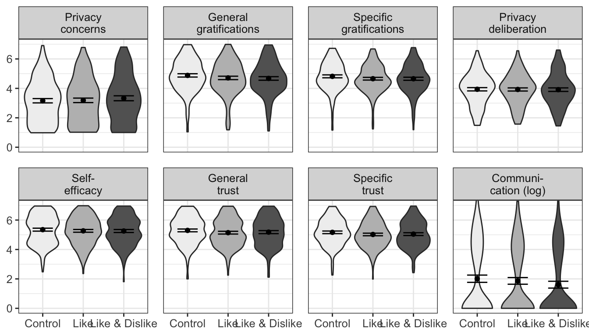
# barplot
# fig_fs_m <- ggplot(
# gather(d_fs, variable, value, -version) %>%
# mutate(variable = factor(variable, levels = var_names_breaks)),
# aes(x = version, y = value, fill = version)) +
# stat_summary(fun.y = mean, geom = "bar") +
# stat_summary(aes(label=round(..y.., 2)), fun.y = mean, geom = "text",
# vjust = 2, size = 3) +
# stat_summary(fun.data = mean_cl_normal, geom = "errorbar", width = .75) +
# facet_wrap(~ variable, nrow = 2) +
# theme_bw() +
# theme(axis.title.y = element_blank(),
# axis.title.x = element_blank(),
# axis.text.x = element_blank(),
# plot.title = element_text(hjust = .5),
# panel.spacing = unit(.9, "lines"),
# text = element_text(size = 12),
# legend.position="bottom",
# legend.title = element_blank()) +
# coord_cartesian(ylim = c(0, 7)) +
# scale_fill_brewer(palette="Greys")
# fig_fs_mIn what follows, we also report explicit statistical tests of the differences between the conditions using contrasts.
model <- "
pri_con =~ PC01_01 + PC01_02 + PC01_04 + PC01_05 + PC01_06 + PC01_07
grats_gen =~ GR02_01 + GR02_02 + GR02_03 + GR02_04 + GR02_05
pri_delib =~ PD01_01 + PD01_02 + PD01_03 + PD01_04 + PD01_05
self_eff =~ SE01_01 + SE01_02 + SE01_03 + SE01_04
SE01_01 ~~ x*SE01_02
SE01_03 ~~ x*SE01_04
trust_community =~ TR01_02 + TR01_03 + TR01_04
trust_provider =~ TR01_06 + TR01_07 + TR01_08 + TR01_10 + TR01_11 + TR01_12
trust_spec =~ trust_community + trust_provider
pri_con + grats_gen + pri_delib + self_eff + trust_spec + COMM ~ like + likedislike
# pri_con + grats_gen + pri_delib + self_eff + trust_spec ~ like + likedislike
# COMM ~ a*pri_con + b*grats_gen + c*pri_delib + d*self_eff + e*trust_spec + f*like + g*likedislike
# Covariates
# COMM + GR02_01 + GR02_02 + GR02_03 + GR02_04 + GR02_05 + PC01_01 + PC01_02 + PC01_04 + PC01_05 + PC01_06 + PC01_07 + TR01_02 + TR01_03 + TR01_04 + TR01_06 + TR01_07 + TR01_08 + TR01_10 + TR01_11 + TR01_12 + PD01_01 + PD01_02 + PD01_03 + PD01_04 + PD01_05 + SE01_01 + SE01_02 + SE01_03 + SE01_04 ~ male + age + edu
"
fit_lik_ctrl <- lavaan::sem(model = model, data = d, estimator = "MLR", missing = "ML")
summary(fit_lik_ctrl, fit = TRUE, std = TRUE)lavaan 0.6-8 ended normally after 256 iterations
Estimator ML
Optimization method NLMINB
Number of model parameters 120
Number of equality constraints 1
Number of observations 559
Number of missing patterns 3
Model Test User Model:
Standard Robust
Test Statistic 1281.392 1011.389
Degrees of freedom 436 436
P-value (Chi-square) 0.000 0.000
Scaling correction factor 1.267
Yuan-Bentler correction (Mplus variant)
Model Test Baseline Model:
Test statistic 13166.886 9798.237
Degrees of freedom 495 495
P-value 0.000 0.000
Scaling correction factor 1.344
User Model versus Baseline Model:
Comparative Fit Index (CFI) 0.933 0.938
Tucker-Lewis Index (TLI) 0.924 0.930
Robust Comparative Fit Index (CFI) 0.942
Robust Tucker-Lewis Index (TLI) 0.934
Loglikelihood and Information Criteria:
Loglikelihood user model (H0) -26626.204 -26626.204
Scaling correction factor 1.765
for the MLR correction
Loglikelihood unrestricted model (H1) -25985.507 -25985.507
Scaling correction factor 1.377
for the MLR correction
Akaike (AIC) 53490.407 53490.407
Bayesian (BIC) 54005.219 54005.219
Sample-size adjusted Bayesian (BIC) 53627.455 53627.455
Root Mean Square Error of Approximation:
RMSEA 0.059 0.049
90 Percent confidence interval - lower 0.055 0.045
90 Percent confidence interval - upper 0.063 0.052
P-value RMSEA <= 0.05 0.000 0.744
Robust RMSEA 0.055
90 Percent confidence interval - lower 0.050
90 Percent confidence interval - upper 0.059
Standardized Root Mean Square Residual:
SRMR 0.051 0.051
Parameter Estimates:
Standard errors Sandwich
Information bread Observed
Observed information based on Hessian
Latent Variables:
Estimate Std.Err z-value P(>|z|) Std.lv Std.all
pri_con =~
PC01_01 1.000 1.602 0.929
PC01_02 0.994 0.027 36.158 0.000 1.592 0.901
PC01_04 0.977 0.027 35.602 0.000 1.566 0.892
PC01_05 1.001 0.024 41.978 0.000 1.604 0.910
PC01_06 0.854 0.038 22.418 0.000 1.368 0.798
PC01_07 0.996 0.022 44.887 0.000 1.595 0.925
grats_gen =~
GR02_01 1.000 1.133 0.844
GR02_02 1.121 0.034 33.405 0.000 1.269 0.896
GR02_03 1.022 0.048 21.377 0.000 1.157 0.865
GR02_04 0.986 0.049 20.322 0.000 1.116 0.849
GR02_05 1.069 0.040 26.518 0.000 1.211 0.845
pri_delib =~
PD01_01 1.000 1.494 0.866
PD01_02 0.673 0.047 14.349 0.000 1.006 0.655
PD01_03 0.703 0.053 13.149 0.000 1.051 0.675
PD01_04 0.847 0.047 18.074 0.000 1.266 0.742
PD01_05 0.721 0.048 14.914 0.000 1.077 0.651
self_eff =~
SE01_01 1.000 1.132 0.821
SE01_02 0.804 0.059 13.603 0.000 0.911 0.675
SE01_03 0.927 0.045 20.695 0.000 1.050 0.783
SE01_04 0.945 0.043 21.823 0.000 1.070 0.792
trust_community =~
TR01_02 1.000 1.031 0.814
TR01_03 0.819 0.051 16.025 0.000 0.844 0.768
TR01_04 0.918 0.046 19.897 0.000 0.946 0.820
trust_provider =~
TR01_06 1.000 1.047 0.873
TR01_07 0.854 0.039 21.684 0.000 0.895 0.773
TR01_08 0.832 0.041 20.203 0.000 0.871 0.786
TR01_10 0.788 0.039 20.455 0.000 0.825 0.701
TR01_11 0.821 0.052 15.888 0.000 0.860 0.663
TR01_12 1.100 0.039 28.248 0.000 1.152 0.857
trust_spec =~
trust_communty 1.000 0.871 0.871
trust_provider 1.115 0.078 14.330 0.000 0.955 0.955
Regressions:
Estimate Std.Err z-value P(>|z|) Std.lv Std.all
pri_con ~
like 0.026 0.163 0.160 0.873 0.016 0.008
likedislike 0.182 0.171 1.066 0.286 0.114 0.053
grats_gen ~
like -0.165 0.119 -1.386 0.166 -0.145 -0.069
likedislike -0.210 0.120 -1.744 0.081 -0.186 -0.086
pri_delib ~
like -0.020 0.164 -0.125 0.901 -0.014 -0.006
likedislike -0.063 0.172 -0.366 0.714 -0.042 -0.020
self_eff ~
like -0.078 0.127 -0.616 0.538 -0.069 -0.033
likedislike -0.087 0.130 -0.671 0.502 -0.077 -0.036
trust_spec ~
like -0.166 0.098 -1.691 0.091 -0.185 -0.088
likedislike -0.133 0.102 -1.302 0.193 -0.148 -0.069
COMM ~
like -33.448 28.568 -1.171 0.242 -33.448 -0.064
likedislike -44.040 28.124 -1.566 0.117 -44.040 -0.082
Covariances:
Estimate Std.Err z-value P(>|z|) Std.lv Std.all
.SE01_01 ~~
.SE01_02 (x) 0.116 0.046 2.534 0.011 0.116 0.147
.SE01_03 ~~
.SE01_04 (x) 0.116 0.046 2.534 0.011 0.116 0.168
.pri_con ~~
.grats_gen -0.277 0.096 -2.888 0.004 -0.153 -0.153
.pri_delib 1.359 0.132 10.303 0.000 0.568 0.568
.self_eff -0.379 0.092 -4.122 0.000 -0.209 -0.209
.trust_spec -0.413 0.075 -5.519 0.000 -0.288 -0.288
.COMM -34.213 14.239 -2.403 0.016 -21.379 -0.086
.grats_gen ~~
.pri_delib -0.075 0.102 -0.732 0.464 -0.044 -0.044
.self_eff 0.458 0.068 6.742 0.000 0.359 0.359
.trust_spec 0.792 0.085 9.273 0.000 0.785 0.785
.COMM 29.236 14.515 2.014 0.044 25.897 0.104
.pri_delib ~~
.self_eff -0.336 0.094 -3.588 0.000 -0.199 -0.199
.trust_spec -0.130 0.085 -1.529 0.126 -0.097 -0.097
.COMM -52.151 16.079 -3.243 0.001 -34.903 -0.140
.self_eff ~~
.trust_spec 0.548 0.059 9.224 0.000 0.542 0.542
.COMM 72.409 15.216 4.759 0.000 63.982 0.257
.trust_spec ~~
.COMM 24.007 10.569 2.271 0.023 26.841 0.108
Intercepts:
Estimate Std.Err z-value P(>|z|) Std.lv Std.all
.PC01_01 3.227 0.116 27.890 0.000 3.227 1.872
.PC01_02 3.261 0.115 28.344 0.000 3.261 1.846
.PC01_04 3.157 0.115 27.542 0.000 3.157 1.798
.PC01_05 3.197 0.115 27.733 0.000 3.197 1.813
.PC01_06 2.947 0.103 28.703 0.000 2.947 1.718
.PC01_07 3.158 0.115 27.550 0.000 3.158 1.831
.GR02_01 4.404 0.086 51.375 0.000 4.404 3.281
.GR02_02 4.734 0.094 50.398 0.000 4.734 3.343
.GR02_03 5.257 0.087 60.221 0.000 5.257 3.927
.GR02_04 5.211 0.085 61.217 0.000 5.211 3.965
.GR02_05 4.824 0.091 53.046 0.000 4.824 3.368
.PD01_01 3.685 0.120 30.795 0.000 3.685 2.136
.PD01_02 3.371 0.091 37.015 0.000 3.371 2.195
.PD01_03 4.210 0.096 43.638 0.000 4.210 2.705
.PD01_04 4.103 0.111 37.117 0.000 4.103 2.406
.PD01_05 4.370 0.101 43.096 0.000 4.370 2.640
.SE01_01 5.333 0.094 56.765 0.000 5.333 3.864
.SE01_02 5.568 0.081 68.919 0.000 5.568 4.130
.SE01_03 5.275 0.089 59.039 0.000 5.275 3.932
.SE01_04 5.190 0.090 57.378 0.000 5.190 3.843
.TR01_02 4.863 0.079 61.317 0.000 4.863 3.840
.TR01_03 4.926 0.064 76.433 0.000 4.926 4.481
.TR01_04 4.707 0.072 65.561 0.000 4.707 4.079
.TR01_06 5.513 0.080 69.040 0.000 5.513 4.596
.TR01_07 5.295 0.072 73.664 0.000 5.295 4.573
.TR01_08 5.221 0.071 73.874 0.000 5.221 4.711
.TR01_10 5.812 0.070 83.126 0.000 5.812 4.938
.TR01_11 4.925 0.075 65.508 0.000 4.925 3.799
.TR01_12 5.301 0.088 60.174 0.000 5.301 3.943
.COMM 102.007 24.926 4.092 0.000 102.007 0.408
.pri_con 0.000 0.000 0.000
.grats_gen 0.000 0.000 0.000
.pri_delib 0.000 0.000 0.000
.self_eff 0.000 0.000 0.000
.trust_communty 0.000 0.000 0.000
.trust_provider 0.000 0.000 0.000
.trust_spec 0.000 0.000 0.000
Variances:
Estimate Std.Err z-value P(>|z|) Std.lv Std.all
.PC01_01 0.406 0.050 8.072 0.000 0.406 0.137
.PC01_02 0.586 0.103 5.669 0.000 0.586 0.188
.PC01_04 0.630 0.077 8.204 0.000 0.630 0.204
.PC01_05 0.536 0.065 8.271 0.000 0.536 0.172
.PC01_06 1.068 0.116 9.190 0.000 1.068 0.363
.PC01_07 0.430 0.065 6.597 0.000 0.430 0.144
.GR02_01 0.519 0.055 9.509 0.000 0.519 0.288
.GR02_02 0.394 0.041 9.678 0.000 0.394 0.196
.GR02_03 0.452 0.072 6.263 0.000 0.452 0.252
.GR02_04 0.481 0.049 9.906 0.000 0.481 0.279
.GR02_05 0.586 0.066 8.919 0.000 0.586 0.286
.PD01_01 0.743 0.111 6.689 0.000 0.743 0.250
.PD01_02 1.345 0.130 10.360 0.000 1.345 0.570
.PD01_03 1.319 0.130 10.176 0.000 1.319 0.544
.PD01_04 1.305 0.147 8.873 0.000 1.305 0.449
.PD01_05 1.579 0.129 12.262 0.000 1.579 0.576
.SE01_01 0.622 0.090 6.938 0.000 0.622 0.327
.SE01_02 0.989 0.131 7.571 0.000 0.989 0.544
.SE01_03 0.697 0.097 7.160 0.000 0.697 0.387
.SE01_04 0.679 0.080 8.451 0.000 0.679 0.372
.TR01_02 0.542 0.070 7.752 0.000 0.542 0.338
.TR01_03 0.496 0.055 9.033 0.000 0.496 0.410
.TR01_04 0.436 0.045 9.743 0.000 0.436 0.327
.TR01_06 0.342 0.035 9.823 0.000 0.342 0.238
.TR01_07 0.540 0.053 10.261 0.000 0.540 0.403
.TR01_08 0.469 0.043 10.853 0.000 0.469 0.382
.TR01_10 0.705 0.058 12.255 0.000 0.705 0.509
.TR01_11 0.942 0.079 11.950 0.000 0.942 0.560
.TR01_12 0.480 0.053 8.993 0.000 0.480 0.266
.COMM 62213.819 24229.300 2.568 0.010 62213.819 0.994
.pri_con 2.561 0.146 17.512 0.000 0.998 0.998
.grats_gen 1.275 0.114 11.161 0.000 0.994 0.994
.pri_delib 2.233 0.158 14.102 0.000 1.000 1.000
.self_eff 1.281 0.115 11.131 0.000 0.999 0.999
.trust_communty 0.257 0.046 5.601 0.000 0.242 0.242
.trust_provider 0.096 0.044 2.185 0.029 0.087 0.087
.trust_spec 0.800 0.099 8.114 0.000 0.993 0.993No significant effects of popularity cues on privacy calculus.
model <- "
pri_con =~ PC01_01 + PC01_02 + PC01_04 + PC01_05 + PC01_06 + PC01_07
grats_gen =~ GR02_01 + GR02_02 + GR02_03 + GR02_04 + GR02_05
pri_delib =~ PD01_01 + PD01_02 + PD01_03 + PD01_04 + PD01_05
self_eff =~ SE01_01 + SE01_02 + SE01_03 + SE01_04
SE01_01 ~~ x*SE01_02
SE01_03 ~~ x*SE01_04
trust_community =~ TR01_02 + TR01_03 + TR01_04
trust_provider =~ TR01_06 + TR01_07 + TR01_08 + TR01_10 + TR01_11 + TR01_12
trust_spec =~ trust_community + trust_provider
pri_con + grats_gen + pri_delib + self_eff + trust_spec + COMM ~ likedislike + control
# pri_con + grats_gen + pri_delib + self_eff + trust_spec ~ like + likedislike
# COMM ~ a*pri_con + b*grats_gen + c*pri_delib + d*self_eff + e*trust_spec + f*like + g*likedislike
# Covariates
# COMM + GR02_01 + GR02_02 + GR02_03 + GR02_04 + GR02_05 + PC01_01 + PC01_02 + PC01_04 + PC01_05 + PC01_06 + PC01_07 + TR01_02 + TR01_03 + TR01_04 + TR01_06 + TR01_07 + TR01_08 + TR01_10 + TR01_11 + TR01_12 + PD01_01 + PD01_02 + PD01_03 + PD01_04 + PD01_05 + SE01_01 + SE01_02 + SE01_03 + SE01_04 ~ male + age + edu
"
fit_lik_ctrl <- lavaan::sem(model = model, data = d, estimator = "MLR", missing = "ML")
summary(fit_lik_ctrl, fit = TRUE, std = TRUE)lavaan 0.6-8 ended normally after 245 iterations
Estimator ML
Optimization method NLMINB
Number of model parameters 120
Number of equality constraints 1
Number of observations 559
Number of missing patterns 3
Model Test User Model:
Standard Robust
Test Statistic 1281.412 1011.407
Degrees of freedom 436 436
P-value (Chi-square) 0.000 0.000
Scaling correction factor 1.267
Yuan-Bentler correction (Mplus variant)
Model Test Baseline Model:
Test statistic 13166.886 9798.237
Degrees of freedom 495 495
P-value 0.000 0.000
Scaling correction factor 1.344
User Model versus Baseline Model:
Comparative Fit Index (CFI) 0.933 0.938
Tucker-Lewis Index (TLI) 0.924 0.930
Robust Comparative Fit Index (CFI) 0.942
Robust Tucker-Lewis Index (TLI) 0.934
Loglikelihood and Information Criteria:
Loglikelihood user model (H0) -26626.214 -26626.214
Scaling correction factor 1.765
for the MLR correction
Loglikelihood unrestricted model (H1) -25985.507 -25985.507
Scaling correction factor 1.377
for the MLR correction
Akaike (AIC) 53490.427 53490.427
Bayesian (BIC) 54005.239 54005.239
Sample-size adjusted Bayesian (BIC) 53627.476 53627.476
Root Mean Square Error of Approximation:
RMSEA 0.059 0.049
90 Percent confidence interval - lower 0.055 0.045
90 Percent confidence interval - upper 0.063 0.052
P-value RMSEA <= 0.05 0.000 0.744
Robust RMSEA 0.055
90 Percent confidence interval - lower 0.050
90 Percent confidence interval - upper 0.059
Standardized Root Mean Square Residual:
SRMR 0.051 0.051
Parameter Estimates:
Standard errors Sandwich
Information bread Observed
Observed information based on Hessian
Latent Variables:
Estimate Std.Err z-value P(>|z|) Std.lv Std.all
pri_con =~
PC01_01 1.000 1.602 0.929
PC01_02 0.994 0.027 36.158 0.000 1.592 0.901
PC01_04 0.977 0.027 35.602 0.000 1.566 0.892
PC01_05 1.001 0.024 41.978 0.000 1.604 0.910
PC01_06 0.854 0.038 22.418 0.000 1.368 0.798
PC01_07 0.996 0.022 44.887 0.000 1.595 0.925
grats_gen =~
GR02_01 1.000 1.132 0.844
GR02_02 1.121 0.034 33.403 0.000 1.269 0.896
GR02_03 1.022 0.048 21.375 0.000 1.157 0.865
GR02_04 0.986 0.049 20.321 0.000 1.116 0.849
GR02_05 1.069 0.040 26.518 0.000 1.211 0.845
pri_delib =~
PD01_01 1.000 1.495 0.866
PD01_02 0.673 0.047 14.350 0.000 1.006 0.655
PD01_03 0.703 0.053 13.149 0.000 1.051 0.675
PD01_04 0.847 0.047 18.075 0.000 1.266 0.742
PD01_05 0.721 0.048 14.915 0.000 1.077 0.651
self_eff =~
SE01_01 1.000 1.132 0.820
SE01_02 0.804 0.059 13.603 0.000 0.910 0.675
SE01_03 0.927 0.045 20.692 0.000 1.050 0.783
SE01_04 0.945 0.043 21.820 0.000 1.070 0.792
trust_community =~
TR01_02 1.000 1.030 0.814
TR01_03 0.819 0.051 16.025 0.000 0.844 0.768
TR01_04 0.918 0.046 19.897 0.000 0.946 0.820
trust_provider =~
TR01_06 1.000 1.047 0.873
TR01_07 0.854 0.039 21.684 0.000 0.895 0.773
TR01_08 0.832 0.041 20.203 0.000 0.871 0.786
TR01_10 0.788 0.039 20.455 0.000 0.825 0.701
TR01_11 0.821 0.052 15.888 0.000 0.860 0.663
TR01_12 1.100 0.039 28.248 0.000 1.152 0.857
trust_spec =~
trust_communty 1.000 0.871 0.871
trust_provider 1.115 0.078 14.329 0.000 0.955 0.955
Regressions:
Estimate Std.Err z-value P(>|z|) Std.lv Std.all
pri_con ~
likedislike 0.158 0.175 0.906 0.365 0.099 0.046
control -0.025 0.163 -0.151 0.880 -0.015 -0.007
grats_gen ~
likedislike -0.047 0.124 -0.383 0.702 -0.042 -0.019
control 0.163 0.119 1.376 0.169 0.144 0.068
pri_delib ~
likedislike -0.039 0.167 -0.233 0.816 -0.026 -0.012
control 0.022 0.164 0.137 0.891 0.015 0.007
self_eff ~
likedislike -0.014 0.129 -0.105 0.917 -0.012 -0.006
control 0.075 0.127 0.593 0.553 0.067 0.032
trust_spec ~
likedislike 0.032 0.101 0.320 0.749 0.036 0.017
control 0.165 0.098 1.681 0.093 0.184 0.087
COMM ~
likedislike -14.796 19.180 -0.771 0.440 -14.796 -0.027
control 30.960 27.920 1.109 0.267 30.960 0.059
Covariances:
Estimate Std.Err z-value P(>|z|) Std.lv Std.all
.SE01_01 ~~
.SE01_02 (x) 0.116 0.046 2.534 0.011 0.116 0.147
.SE01_03 ~~
.SE01_04 (x) 0.116 0.046 2.534 0.011 0.116 0.168
.pri_con ~~
.grats_gen -0.277 0.096 -2.887 0.004 -0.153 -0.153
.pri_delib 1.359 0.132 10.303 0.000 0.568 0.568
.self_eff -0.379 0.092 -4.123 0.000 -0.209 -0.209
.trust_spec -0.412 0.075 -5.518 0.000 -0.288 -0.288
.COMM -34.285 14.244 -2.407 0.016 -21.424 -0.086
.grats_gen ~~
.pri_delib -0.074 0.102 -0.731 0.465 -0.044 -0.044
.self_eff 0.458 0.068 6.740 0.000 0.358 0.358
.trust_spec 0.792 0.085 9.273 0.000 0.785 0.785
.COMM 28.966 14.445 2.005 0.045 25.661 0.103
.pri_delib ~~
.self_eff -0.336 0.094 -3.590 0.000 -0.199 -0.199
.trust_spec -0.130 0.085 -1.528 0.127 -0.097 -0.097
.COMM -52.434 16.156 -3.246 0.001 -35.088 -0.141
.self_eff ~~
.trust_spec 0.548 0.059 9.223 0.000 0.542 0.542
.COMM 72.194 15.143 4.767 0.000 63.807 0.256
.trust_spec ~~
.COMM 23.789 10.503 2.265 0.024 26.601 0.107
Intercepts:
Estimate Std.Err z-value P(>|z|) Std.lv Std.all
.PC01_01 3.252 0.120 27.035 0.000 3.252 1.886
.PC01_02 3.286 0.122 26.915 0.000 3.286 1.860
.PC01_04 3.181 0.119 26.786 0.000 3.181 1.812
.PC01_05 3.221 0.122 26.346 0.000 3.221 1.827
.PC01_06 2.968 0.107 27.618 0.000 2.968 1.731
.PC01_07 3.182 0.119 26.692 0.000 3.182 1.845
.GR02_01 4.241 0.091 46.470 0.000 4.241 3.160
.GR02_02 4.551 0.100 45.573 0.000 4.551 3.214
.GR02_03 5.089 0.092 55.150 0.000 5.089 3.803
.GR02_04 5.050 0.088 57.197 0.000 5.050 3.843
.GR02_05 4.649 0.098 47.408 0.000 4.649 3.246
.PD01_01 3.663 0.117 31.364 0.000 3.663 2.123
.PD01_02 3.356 0.089 37.915 0.000 3.356 2.186
.PD01_03 4.195 0.091 46.075 0.000 4.195 2.695
.PD01_04 4.084 0.103 39.821 0.000 4.084 2.395
.PD01_05 4.354 0.096 45.180 0.000 4.354 2.631
.SE01_01 5.257 0.093 56.264 0.000 5.257 3.810
.SE01_02 5.507 0.082 67.530 0.000 5.507 4.085
.SE01_03 5.205 0.087 59.612 0.000 5.205 3.880
.SE01_04 5.118 0.089 57.832 0.000 5.118 3.791
.TR01_02 4.698 0.076 61.473 0.000 4.698 3.709
.TR01_03 4.790 0.066 72.535 0.000 4.790 4.358
.TR01_04 4.555 0.068 66.528 0.000 4.555 3.947
.TR01_06 5.329 0.082 65.122 0.000 5.329 4.442
.TR01_07 5.137 0.073 70.528 0.000 5.137 4.437
.TR01_08 5.068 0.069 73.432 0.000 5.068 4.572
.TR01_10 5.667 0.069 82.599 0.000 5.667 4.815
.TR01_11 4.773 0.075 63.273 0.000 4.773 3.682
.TR01_12 5.098 0.091 56.219 0.000 5.098 3.793
.COMM 70.724 13.971 5.062 0.000 70.724 0.283
.pri_con 0.000 0.000 0.000
.grats_gen 0.000 0.000 0.000
.pri_delib 0.000 0.000 0.000
.self_eff 0.000 0.000 0.000
.trust_communty 0.000 0.000 0.000
.trust_provider 0.000 0.000 0.000
.trust_spec 0.000 0.000 0.000
Variances:
Estimate Std.Err z-value P(>|z|) Std.lv Std.all
.PC01_01 0.406 0.050 8.072 0.000 0.406 0.136
.PC01_02 0.586 0.103 5.669 0.000 0.586 0.188
.PC01_04 0.630 0.077 8.204 0.000 0.630 0.204
.PC01_05 0.536 0.065 8.271 0.000 0.536 0.172
.PC01_06 1.068 0.116 9.190 0.000 1.068 0.363
.PC01_07 0.430 0.065 6.597 0.000 0.430 0.144
.GR02_01 0.519 0.055 9.509 0.000 0.519 0.288
.GR02_02 0.394 0.041 9.678 0.000 0.394 0.196
.GR02_03 0.452 0.072 6.263 0.000 0.452 0.253
.GR02_04 0.481 0.049 9.906 0.000 0.481 0.279
.GR02_05 0.586 0.066 8.919 0.000 0.586 0.286
.PD01_01 0.743 0.111 6.689 0.000 0.743 0.250
.PD01_02 1.345 0.130 10.360 0.000 1.345 0.570
.PD01_03 1.319 0.130 10.176 0.000 1.319 0.544
.PD01_04 1.305 0.147 8.873 0.000 1.305 0.449
.PD01_05 1.579 0.129 12.262 0.000 1.579 0.576
.SE01_01 0.622 0.090 6.938 0.000 0.622 0.327
.SE01_02 0.989 0.131 7.571 0.000 0.989 0.544
.SE01_03 0.697 0.097 7.160 0.000 0.697 0.387
.SE01_04 0.679 0.080 8.450 0.000 0.679 0.372
.TR01_02 0.542 0.070 7.752 0.000 0.542 0.338
.TR01_03 0.496 0.055 9.032 0.000 0.496 0.410
.TR01_04 0.436 0.045 9.743 0.000 0.436 0.328
.TR01_06 0.342 0.035 9.823 0.000 0.342 0.238
.TR01_07 0.540 0.053 10.261 0.000 0.540 0.403
.TR01_08 0.469 0.043 10.853 0.000 0.469 0.382
.TR01_10 0.705 0.058 12.255 0.000 0.705 0.509
.TR01_11 0.942 0.079 11.950 0.000 0.942 0.560
.TR01_12 0.480 0.053 8.993 0.000 0.480 0.266
.COMM 62204.675 24223.401 2.568 0.010 62204.675 0.994
.pri_con 2.561 0.146 17.511 0.000 0.998 0.998
.grats_gen 1.274 0.114 11.162 0.000 0.994 0.994
.pri_delib 2.233 0.158 14.103 0.000 1.000 1.000
.self_eff 1.280 0.115 11.129 0.000 0.999 0.999
.trust_communty 0.257 0.046 5.601 0.000 0.242 0.242
.trust_provider 0.096 0.044 2.185 0.029 0.087 0.087
.trust_spec 0.800 0.099 8.113 0.000 0.994 0.994No significant effects of popularity cues on privacy calculus.